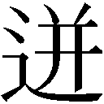

| 中心の心臓 | |
| 村山亮 | |
| (2016) | |
僕は今ここにいて、全身に るエネルギーを感じている。これは中心の心臓 から送り出されたもので、僕は特別な細い血管によってそれに繋 がれている。このエネルギーは他 とは替え難いものだ。他 のどんなものも、中心の心臓 のようなエネルギーを生み出すことはできない。それはまさに特別なエネルギーなのだ。
この国において、中心の心臓 はまさにものごとの根幹に置かれている。それはあらゆるものの原動力となり、また目的となっている。人々はこのエネルギーを得るために生きている。
僕の仕事は中心の心臓 から縦横無尽に張り巡らされた血管の内部を掃除することである。血管とは生き物であって、人工的なパイプとは違う。だから色んなところで詰まり や淀み が生じることになる。僕は問題を発見し、逐一それを取り除く。
実を言えばこの仕事は誰もが就ける仕事というわけではない。中心の心臓から送り出される血液は、言わば特別な血液であって、ある種の耐性がないとそれに触れることはできない。耐性のない人が触れてしまうと、あまりにも多量のエネルギーが体内に流れ込むため、その人の身体はオーバーヒートしてしまう。検査してくれた医師によれば、僕の場合その耐性が生まれつき他人の数倍備わっていたということだ。
僕はウェットスーツを着用し、酸素ボンベを背中に背負って太い血管の中を泳いで行く。今日は二か所淀み が見つかった。こういうのはまあよくあることだ。血管の壁に汚れが付着し、全体的な流れが滞 る。でも今日のはどちらも小さい淀みだったから、問題はすぐに解決した。その日の仕事を終えると、僕は梯子を登り、血管の天井に取り付けられた出入り口から外に出た。出た先は簡単な更衣室になっている。僕はそこでスーツに着いた血液を洗い流し、元の服に着替える。そして隣の部屋に移動した。そこは研究所の一室になっていて、白衣を着た女性の研究員がモニターを睨んでいる。
「簡単な作業でしたよ」と僕は言う。
「早いうちに発見できてよかった」と彼女は答える。彼女は眼鏡をかけた三十歳くらいの女性で、血管内部の監視を任せられている。
「今日も少し本体 を眺めていっていいですか？」と僕は聞く。
「まあ少しだけならね」と彼女は言う。
本体 とはつまり中心の心臓本体 のことだ。モニタールームからドア一つ隔てた隣の部屋に入ると、そこの正面はガラス張りになっていて、赤く輝く中心の心臓 を間近に見ることができる。中心の心臓 はいつ見ても美しい。それは今は赤色の光を放ち、薄暗い室内を明るく照らし出している。その高さは七、八メートル、横幅は五、六メートルだろうか。ドクン、ドクンという音を立てながら、収縮と拡張を繰り返している。太い血管が何本か伸び、その血管が先の方でさらに枝分かれしている。そしてその細い血管が各家庭へと伸び広がっているのだ。
僕は我を忘れてしばらくの間その心臓に魅入っている。一体どのような自然の摂理がこのように美しいものを生み出したのだろう？今我々に判明しているのは、この心臓は僕らが生まれる遥か以前から存在していて、そのときにもまた今と同じように世界に向けて血液を送り届けていたということだ。僕はもう少しだけそれを眺めてから、その部屋を出た。
そこではまださっきの女性の研究員が難しい顔をしてモニターを睨んでいた。
「ねえ」と突然彼女は僕に向き直って言った。「血管の中を泳ぐのってどんな感じなの？」
「そうだな」と僕は答える。「基本的には海を泳ぐのと変わらない。違いがあるとすれば、この血管の中はとても温かいということだと思う。そしてこの中にいる限り、自分は何かに守られているんだ、という感じがする」
「何か 」と彼女は言う。
「それが何なのかはよく分からないのだけど」と僕は言った。
僕は彼女に別れを告げると、研究所を出て、家に帰った。僕はこの街が好きだ。街の至る所に街灯が設置されていて、世界に明るい光を届けている。もちろんこの光の源 もあの中心の心臓である。
この街の空はいつでも真っ暗だ。かつては太陽というものが存在していた、と学校で習ったのだが、今では太陽は空に昇るのを止 めてしまった。だからここには「夜」しかない、ということになる。でも我々は生まれてから一度も「昼」というものを見たことがないので、「夜」ということの意味も実は良く分からないままでいる。
もっとも街ではいつもあの心臓が送り出すエネルギーによって街灯が灯 されているし、街外れの高台には大きな灯台があり、そこに設置された巨大なライトがいつも街全体を明るく照らし出している。ただその色はいつも同じというわけではない。心臓のエネルギーにはある種の周期があって、一定の時間が経つとその明りは黄色からオレンジ、赤、そして淡 い青色に変わる。光が青くなると、僕らはベッドに入り、すやすやと眠りに着く。
そのときはそろそろ街灯が青く変わる時間帯だった。僕は街の大通りをゆっくりと歩きながら家に帰った。何台かの車が静かな音を立てて僕のすぐ脇を通り過ぎた。この車のエネルギーもまたあの心臓から送り出されたものだ。僕は通りにあるパン屋に寄り、夕食用にクロワッサンをいくつか買った。
僕はこの街の中心部にある集合住宅の一室で一人暮らしをしている。両親は街の外れに家を持ち、そこで暮らしている。実を言うと僕はこんな街の中心に暮らすのは嫌だったのだが、仕事の関係上どうしてもあの心臓 のそばにいる必要があった。夕食後、僕は台所のテーブルでコーヒーを飲みながら、図書館で借りて来たある本を読んでいた。僕は大体いつもこんな風に本を読んで時間をつぶしている。その日読んでいたのは昔の外国人が書いた小説で、題名は『神々の通訳』というものだった。
主人公はまだ若い青年だ。彼はあるコミュニティにおいて神々の通訳として働いている。彼には生まれつき特殊な能力が備わっていたようで、普通の人には聞こえない神々の声を聞くことができる。彼はその声を普通の人にも分かるような言葉に翻訳し、伝える。神々の言葉は時に人々を恐れさせ、時に人々を救った。彼はそのようにしてそのコミュニティにとって欠かせない人物となった。しかしその本の描写から察するに、彼は特に「宗教的な預言者」というわけではないみたいだった。つまり彼の役職には「神の言葉を預かる者」という神聖な意味合いはほとんどなく、ごく実務的に通訳 の業務をこなしているだけのようだった。
そんなとき事件が起こる。彼はふとした折に神々の秘密を聞き知ってしまう。それは本来人間が聞いてはいけないものごとだった。彼の方にも本当はそんなことを聞く気はなかったのだが、神々のうちの一人が青年の存在に気付かず、うっかり口をすべらせてしまったのだ。彼は急いでその場を去ったが（幸い秘密を聞いたことは誰にもばれなかった）、その秘密は彼の心にずしりと重くのしかかった。
彼は次第にその秘密を自分の身の内に抱えていることに非常な困難を覚えるようになった。その秘密は彼の中でどんどん膨らみ、徐々にに彼の心を圧迫するようになった。彼の頭は、その秘密で一杯になってしまった。これではいけない、と彼は思った。このままでは俺の頭はおかしくなってしまうだろう。なんとかしてこれ を外に吐き出さなければならない。彼はぎりぎりのところまで我慢していたのだが、結局我慢しきれずに一番親しい友人にその秘密 の一端を話してしまう。「なあ、実はこの間こんな話を聞いたんだ・・・」と彼は切り出す。でも友人は全くわけが分からないという顔をして彼をじっと見つめる。「それが一体どうしたんだ？」と友人は尋ねる。「どうした って、これはすごく重要な秘密じゃないか」と青年は言う。でも友人は何も理解せず、すぐに話題を変えてしまった。
その後も青年は何人かの知り合いにその秘密についてそっと話してみたのだが、誰一人として彼の真意を理解してくれた人はいなかった。これは一体どうしたというのだろう、と彼は思った。なぜ彼らはこのこと を聞いても何の反応も示さないのだろう。俺はこんなに心を揺すぶられているというのに。
結局誰にも理解されなかったことで、彼の中のその秘密は行き場を失い、さらに膨張を続けることになった。青年はそれがいずれ自分を突き破って破裂してしまうのではないかと恐れた。でもいくら他人にしゃべったところで、誰も何も理解してくれないのであれば話す意味なんてどこにもない。でもこれ以上自分の中にこれほど重要な事実を留めておくことはできそうになかった。俺は一体どうしたらいいのだろう、と彼は思った。このままでは、俺は本当に死んでしまうかもしれない。そんなとき彼は折り良く------あるいは折悪しくと言うべきか------一人の悪魔に出会った。
悪魔はごく普通の格好をした男で、彼は最初それが悪魔だとは気付かなかった。悪魔とはもっと邪悪な雰囲気を持ったものだと思っていたからだ。その悪魔は彼に向かって言った。
「なあ、お兄さん。あんたは神々に追われているんだぜ。そのことは知っていたかい？」
「神々が僕を追っている？」と青年は驚いて言った。
「そうだ」と悪魔は言った。「だって自分たちの大事な秘密を言いふらしているんだからな。そんな奴を放っておくわけにはいくまい。捕まったらただじゃおかないだろうな」
それを聞くと青年はぞっとして、背筋にひどい寒気を感じた。自分は今までずっと神々の忠実な通訳 だったのに、今では彼らに敵対するものになってしまったのだろうか？
「もし俺にその秘密を教えてくれたら」と悪魔は続けた。「俺たちはあんたを守ってやれるんだがね。というか実際のところ、あんたがこれから生き延びて行く方法はそれしかないと俺は思うね」
「でもあなたは悪魔でしょう」と青年は言った。「悪魔に秘密を話すなんて・・・」
「でもあんたはこれ以上その秘密を抱えたまま生きて行くことはできないはずだ」と悪魔は言った。「それはあんたの心を蝕 み、いずれあんた自身の核 というものを焼き切ってしまうだろう」
「僕の核 ？」
「そうだ」と悪魔は言った。「そうなると生きている意味そのものがなくなってしまう。そんな状態で生きるんだとしたら、俺はむしろ死を選ぶね」
青年は少し考え込んだ。僕の核 ？そして言った。
「でもあなたは悪魔なんでしょう。あなたたちはその秘密を悪用するのでは・・・」
「悪とは一体なんなんだ？」とそこで悪魔は聞いた。「あんたにそれが答えられるか？」
「それは・・・」と青年は口ごもった。
「いいか」と悪魔は言った。「悪とは結局は相対的なものなんだ。今俺はたまたま 神々と反対の側にいる。それで『悪魔』という名前で呼ばれている。ただそれだけのことなんだ。善をなすか、悪をなすのかは結局はそれぞれの人間次第なんだ」
青年は完全に納得したというわけではなかったが、それでもなぜかこの悪魔の言うことには強い説得力を感じた。悪魔の言葉には一つ一つ確かな重みがあるように感じられた。それに、と彼は思った。確かにこれ以上この秘密を一人で抱え込んでいるわけにはいかない。
「どこか人のいないところに行きましょう」と青年は言った。
悪魔は自分の住む薄暗い地下室に青年を連れて行った。青年はそこで神々の秘密について語った。彼は差し出された堅いイスに座り、テーブルを挟んだ反対側で悪魔がその話を聞いた。その秘密というのは、実のところひとこと で言い表せるようなしろものではなかった。神々の言葉でならひとこと で言い表せるのだが、人間の言葉で語るとなるとそれはものすごく長いものになってしまうのだ。彼は結局一晩かけてその秘密を語った。語りながら青年は、自分の中で膨張し続けていたものが少しずつ外に抜け出て行くのが分かった。悪魔は細かいところを逐一聞き返しながら、一晩中集中して青年の話を聞いていた。
秘密を話し終わったとき、青年は自分が空っぽになっていることに気付いた。
彼の身体は今や半透明になっていた。足元を見ると、さっきまであったはずの影がなくなっていることに気付いた。一体なんでこんなことが起きるのだろう、と彼は思った。俺はただ、あの秘密 を人間の言葉に移し替えただけなのに。
「あんたはあの秘密と一緒に自分の中の大事なものを俺に明け渡してしまったんだ」とそのとき悪魔が言った。「でもあんたはそれを誰かに話さないわけにはいかなかった。それを話さなければ、あんたは本当のなんでもなし になっていただろう」
「僕はこれからどうすればいいんだろう」と青年は言った。
「俺たちと一緒に来たら良い」と悪魔は言った。
悪魔は彼を部屋の裏にある階段に連れて行き、そこから下の階に降りた。彼が扉を開けると、そこは------青年はそれを見てとても驚いたのだが------一軒の酒場になっていた。中は暗い影を持った人々でごった返していた。
「ここは悪魔のための酒場なんだ」と悪魔は言った。「君にはここで働いてもらうことになる」
そのようにしてかつて「神々の通訳」であった青年は、「悪魔のためのバーテンダー」に転職することになった。
僕はそこで本から顔を上げた。なんだかひどく眠い。いつもならまだ眠くなるような時間ではないのだが、瞼 がとても重い。僕は手早く歯を磨くと、そのままの格好でベッドに潜りこんだ。
翌朝目を覚ますと、身体が妙に重かった。もしかすると昨日読んだ本のせいかもしれない。あの本には何か奇妙な重みがあったから。一体どこまで読んだんだっけ？そうだ、主人公の青年が悪魔の酒場のバーテンダーになるところだ。しかしわけのわからない話だったな。一体なぜ青年はバーテンダーなんかにならなければならないのか。なぜ悪魔の酒場にいれば神々の追跡を逃れることができるのか。そもそもその秘密 とは一体何だったのか。まあそれでも、と僕は思った、わけが分からないなりに面白い本ではある。
その日も仕事があったから、本の続きはまた別のときに読むことにして、僕はいつも通り研究所へと向かった。今では通りにある街灯は黄色く光っている。街の人々はすでに起き出し、元気にそれぞれの活動を始めている。
「やあ、こんちは」と肉屋のおじさんが声をかけてくる。
「どうも」と僕は言う。
「最近血管 はどうだね」
「さほどの問題はないみたいです」
「それは良いことなんだろうね」
「もちろん」
愛想の良い警備員が入口を守っている研究所の中に入り（こんにちは、どうです調子は？------いやあ、まあまあですよ）、あの女性の研究員がいるモニタールームに入る。彼女は僕が部屋に入ってもしばらくの間気付かずに画面を睨み続けている。
「こんにちは。何か問題でもありましたか？」と僕は声をかける。
「ああ、あなただったの」と彼女は言い、僕にモニターの一つを見せてくれる。
「ちょっとここを見て」と言って彼女はある動脈の隅にある黒い斑点を指差す。「これは何だと思う？」
「うーん」と言って、僕は腕組みをする。「この映像だけでは詳しいことは分かりませんね。多分血管の壁面がちょっと傷ついているだけだと思うんですが・・・」
「でもこの黒い部分がさっきちょっと動いたような気がしたのよ」と彼女は言う。
「動いた？」
「ええ。まるで何かの生き物みたいに」
僕はじっと画面を見つめる。でも今のところそれは血管の壁面に付着したただの斑点であって、なんの動きも見せない。
「私の目の錯覚だったのかしら」
「血液が流れ続けているわけですからね。ときに動いて見えることもあります」と僕は言った。
「本当に錯覚だったら良いんだけど・・・」と彼女は言った。
そのあと彼女はその日僕が取り除くべき淀み と汚れ のリストを手渡してくれた。いつもと同じように、それほど多くはない。
「この淀 みを取り除いたら、さっきの斑点のところに行ってみますよ」と僕は言った。「一体何があるのか確かめてみます」
「そうしてくれるとありがたいわ」と彼女は言った。
僕は更衣室でウェットスーツに着替え、酸素ボンベを背負う。そして一度モニタールームに戻り、彼女に出発の挨拶をする。
「それじゃあ行って来ます」と僕は言う。
「気をつけてね」と彼女は言う。
僕はまず、ある個所の淀みを取り除きに行った。これはまあそれほど大した淀みというわけでもない。このまま放っておいても自然に消え去ってしまうようなものだ。しかしこれが後 に、何かもっと大きな問題に発展する可能性が全くないというわけではない。だからこういう淀みを発見すると------それがどんなに小さなものであれ------僕はそれを律儀に取り除くことになる。僕は酸素ボンベの脇に取りつけられた小さな器具で、その淀みの元となっている汚れを取り除く。それはまあ掃除機のような器具で、淀みの原因となる汚れを吸い取ってくれる。しかし今日の汚れは血管の壁にぴたりと張り付いていて、なかなか簡単には取れてくれない。僕はヘラ を使ってなんとかそれをはがし取り、器具を使って吸い取る。そしてそのあとで血管に消毒液を塗る。これで一連の作業は終わりだ。
僕はその後もう一か所似たような淀みを取り除き、血管に消毒液を塗って作業を終えた。いつもならこれで一日の仕事は終わりなのだが、今日はそのあとで彼女が発見したあの黒い斑点のところに向かう。血管の天井には自分の位置を把握するためのプレートが取り付けてあって、今は「Ａ---３５０」となっている。これは大動脈Ａの、中心の心臓 から３５０メートルの地点にいるという意味だ。あの黒い斑点は「Ｃ---５００」のプレートの近くにあった。
僕は大動脈同士を繋ぐ細い血管を通り、大動脈Ｃに入り込んだ。そしてしばらく流れに乗って泳いだあと、ようやく「Ｃ---５００」のプレートの近くにやって来た。僕はそこであの黒い斑点を探し始めたのだが、なぜかどこにもそれは見つからなかった。場所を間違えたのかもしれないと思い、もう一度プレートを確かめてみたのだが、そこには確かに「Ｃ---５００」とあった。変だな、と思って、もう一度壁面を見まわす。でもそこにはなんの異常もない。どのような汚れも、どのような淀みもない。まったく綺麗なものである。まあ異常がないのであればそれに越したことはない、と思い、僕は研究所に帰った。
黒い斑点は見つからなかった、と言うと彼女は不審そうな顔をした。そしてモニターを切り替えて（そのときは別の部分を映していた）、さっきまで黒い斑点があったところをもう一度確認した。するとそこには確かに黒い影のようなものがあった。
「ここにあるじゃない」と彼女は言った。
「変だな」と僕は言った。「実際にあそこにいるときは何も見えなかったんだけど・・・」
「これはきちんと調べる必要があるみたいね」と彼女は言った。
その日はそれで帰った。その黒い斑点のことは気にかかったが、今のところそれは血管 には何の害も及ぼしてはいない。詳しく調べるのはまた後日にまわしても大丈夫だろう。
僕は家に帰ると簡単な夕食を食べ、昨日の本の続きを読んだ。『神々の通訳』という本だ。確か主人公の青年が悪魔のためのバーテンダーになったところからだ。
青年は悪魔のためのバーテンダーとして働くことになった。店の実質的なオーナーは彼が秘密を語って聞かせたあの悪魔であるようだった。それでもその悪魔は青年に簡単に仕事を教えると、あとは引きさがって彼に仕事のほとんどを任せるようになった。青年はシェイカーを振ってカクテルを作り、次々にやって来る悪魔の客たちにそれを提供した。
店には実に様々な種類の悪魔の客がやって来た。くたびれ果てた者、まだ若い健康そうな者、いかにもいわく ありげな者。ここは彼らにとっての憩いの場として機能しているみたいだった。店の古いジュークボックスからは、青年が聞いたこともない古い時代のロックンロールが流れていた。彼は酒を提供しながら客の様々な話を聞いた。そしてすぐに、自分はこの仕事に向いているのかもしれないと思い始めた。というのも彼自身はあの秘密 を語ったせいで空っぽになっていたのだが、そのおかげで他人の話をきちんと聞くことのできる能力を授かっていたからだ。世の中に自分の事を話したがる人間は多いが、他人の話を熱心に聞く人間は少ない。その店に来るのは人間 ではなかったのだが、その能力は悪魔に対しても有効に発揮された。
悪魔たちはその半透明になった影のない青年を------もはや完全な人間でもなければ完全な悪魔でもないその青年を------最初は胡散臭そうな目つきで眺めていたのだが、やがて彼が他人の話をきちんと聞くことのできる人物だと知って、次第に彼に打ちとけるようになっていった。最初に彼と親しくなったのはあるくたびれきった中年の悪魔だった。
「あんた人間かい？」とその悪魔は聞いた。
「かつてはそうでした」と青年は言った。「通訳をやっていたんです。でも今では自分がちゃんとした『人間』と言えるのかどうか、あまり自信は持てませんね」
青年は自分にはもう影がないのだと説明した。それでここで働いているのだと。
「ふうん。あんたも苦労したんだ」と中年の悪魔は言った。そしてウイスキーのオンザロックを注文した。青年はアイスピックで氷を割り、注文された飲み物を作った。中年の悪魔はそれを一口すすり、やがて自分についての話を語り始めた。
「俺もかつては腕利きの悪魔だったんだ」と彼は言った。「その辺にいる若い奴らなんかとは比べ物にならなかった。実に様々なことをやったものだよ。殺人から、強盗から、放火。安い中毒症状への誘惑。なんだってやった。でもね、そういうことをやっていると、なんというか------すごく空虚になってくるんだ。こんなことをやっていて一体何になるんだってね」
青年はただ頷いた。
「でもね」と中年の悪魔は続けた。「やめようにもやめられないんだよ。俺たちはね、言わば刺激するもの に過ぎないんだ。実際に行動するのは個々の人間さ。悪を犯す人間の心には往々にして穴が空いている。大きな穴だ。我々はそれを見ると否が応にも引き寄せられてしまう。そして変わり映えのしない誘惑の言葉をささやくんだ。おい、今こいつを殺せば後に素晴らしい未来が待っている 。おい、今この金を取れば後に素晴らしい未来が待っている 。
彼らはその穴を直視することができないのさ。だから我々がやって来て、代わりにそれを埋めるんだよ」
「僕にも穴が空いています」と青年は言った。
「その通りだ」と悪魔は言った。「あんたにも穴が空いている。まあでも多かれ少なかれ誰にだって穴は空いているんだ。しかしあんたはそのこと を知っている。そこが他 の奴らと違うところだ。それを知っている人間の穴には悪魔はなかなか入り込めないんだよ。あんまり居心地が良くないんだ」
その中年の悪魔はその後続けて何杯かのカクテルを飲み、やがて重い腰を上げた。
「あんたと話しているとなんだか落ち着くよ」と彼は静かに言った。「また今度な」
青年はグラスを拭きながら黙って頷いた。
彼はそのようにして実に様々な種類の悪魔の話を聞いた。その多くは彼らがかつて人間に犯させた悪事の数々だった。おぞましい話があり、悲しい話があり、滑稽な話があった。しかしそれらの話を聞いても、青年はなぜか全く嫌けを感じなかった。以前の自分だったら違ったはずだ、と彼は思った。きっと人間にそんな行為を犯させる悪魔に対して大きな怒りを感じたに違いない。でも今では彼はそれらの行為をある種の自然災害として受け取っていた。つまり、ないに越したことはないが、あればあったで仕方のないもの、という風に。だから店に来る悪魔たちの顔を見ても、彼は何の嫌悪感も感じなかった。
そんなとき一人の不思議な客がやって来た。物静かな若い男で、年は青年と同じくらいに見えた。ごく普通のチェック柄のシャツに、青いジーンズをはいている。彼はウィスキーを頼んだのだが、少しだけすすって、後は一切手をつけなかった。その後その客は終始何も言わず、ただ青年の顔をじっと見つめていた。
青年はしばらくの間何も気付かない振りをして作業を続けていたのだが、その男の視線が気になって、だんだん仕事も手につかなくなってしまった。それくらいその若い男はじっと彼を見つめていたのだ。青年はその客に声をかけた。
「何かお飲み物に問題でもありましたか？」
でも客は何も言わなかった。彼はただ青年を見つめているだけだった。彼の目は不思議な澄み方をしていた。恐ろしく透明でありながら、底というものが見えないのだ。そのとき青年は初めてその男が自分を見ているのではないことに気付いた。その男は、青年の中にあるうつろな空洞 を見つめていたのだ。青年は仕事の手を休め、その客の澄んだ目を見返した。間違いない、と彼は思った。その客の視線は青年の見かけなんかはすっ飛ばし、その本質を------つまり本質なんかないという本質を------見つめていたのだ。それに気付くと、青年はしばらくその場に釘づけになってしまった。
二人の間には奇妙な沈黙が居座っていた。二人ともしばらくの間何一つ言わなかった。やがて青年は自分の身の内に何か が湧き上がってきたことに気付いた。それは彼の中にあるうつろな空洞からこんこんと湧き出していた。こんな感覚を味わったのは生まれて初めてのことだった。気付くと彼はしゃべり出していた。その客に向かって、自分の身の内に湧き出してきたもの全てを言葉に変えて、淀みなくしゃべり出していた。それは悪魔に語ったあの秘密 に極めて近いものだったが、細部が少しずつ違っていた。彼はかつて通訳であった頃の技術を総動員し、それを適切な言葉に置き換えていった。それはずいぶん手間のかかる作業だったが、彼は一切話を止めることなくしゃべり続けた。その間店には次々に別の客たちがやって来た。でも彼はそれを完全に無視した。客たちはぶつぶつと文句を言い、やがてあきらめて帰って行った。今や青年はその若い客に向かって、自分の中にある何もかも を吐き出そうとしていた。どれだけしゃべっても、しゃべるべきことは次から次へと湧いて出てきた。今までほとんど何もないと思えていた彼自身の内部に、今や確かな重みを持つ何か が生まれてきていた。その客は飽きもせず、真剣な表情で一晩中青年の話をじっと聞き続けていた。
全てを語り終わったとき、青年は自分が何か を回復したことに気付いた。それは重みを持つ何か だった。彼はそこでふと自分の足元を見た。するとそこにはこれまで失われていたはずの影があった。彼は自分がもう半透明ではないことを知った。俺はまたきちんとした人間に戻れたんだ、と彼は思った。
話を全て聞き終わると、その客は立ち上がって、青年を手招きした。どこに連れて行く気だろう、と思いながら青年が付いて行くと、その客はバーの奥にある壁の方に向かった。そこにはひとつのドアが取り付けられていた。
ドア？と青年は思った。確かそんなところにドアなんかなかったはずだ。彼はもうずいぶん長くこのバーで働いていたし、そんなものがあればすぐに気付いたはずだった。でもその客は黙ったまま彼の手を取って、まっすぐそのドアに向かって行った。
客がドアを開けるとそこには真っ暗な空間が広がっていた。まるで宇宙空間みたいに広く、暗い。青年はそこに足を踏み入れ、茫然として辺りを見まわしていた。一体いつからこんな部屋は存在していたんだろう？そもそも誰がこんなものをつくったんだろう？青年がぼおっとしている間に、その無口な客は黙ってドアを閉めた。
ドアが閉まってしまうと、あたりを完全な暗闇が包んだ。目を開けているのか閉じているのか、それすらも分からないくらいの暗闇だ。青年は不安になって声をかけた。
「どうしてドアを閉めちゃったんです？」
でも客は何も答えず、代わりに再び青年の手を取った。そしてどこかに向けて歩き出した。青年は黙ったまま彼に従った。なぜかは分からないが、この男に従っても悪いことにはなるまい、という思いが青年の中に生まれてきていた。実際その客は人を落ち着かせる独特な雰囲気を持っていた。彼の手からは、何か深いエネルギーのようなものを感じることができた。しかし------これは暗闇のせいばかりではないような気もしたのだが------そこには十分な量のリアリティーが欠けていた。
二人はずいぶん長く歩き続けた。その客は迷いなくどこか に向けて歩いていたのだが、それがどこなのか青年には全く見当がつかなかった。それでも相変わらずその客に逆らおうという気は全く起きなかった。
やがて前方に淡い光が見えてきた。それは光ってはまた暗くなり、光ってはまた暗くなる、というのを繰り返していた。近づくと、それが青白い心臓であることが分かった。
心臓？と僕は一度本から顔を上げて思った。これはあの中心の心臓 と同じものなのだろうか？この本が書かれたのはずいぶん昔のことだ。その頃にもあの心臓は存在したのだろうか？それともこれは、この作者の想像の産物に過ぎないのだろうか？でもどれだけ考えたところで答 は出ない。それで僕はまた続きを読み始めた。
青年とその無口な客は二人でその心臓に近づいた。心臓は収縮と拡張を繰り返しながら、まるで蛍のように淡く光っていた。近くに寄ってみて初めて気付いたのだが、光っているのは、どうやら心臓が送り出している何かの液体であるようだった。
それが単純な血液でないことは一目見ただけで分かった。それは青白く光り、心臓から細く伸び広がった血管を伝って、どこかに向けて流れ去って行った。近くで見るとその心臓はかなり大きいことが分かった。それは一人の人間の背丈と同じくらいの大きさをしていた。青年と客は並んだままただじっとその心臓を見つめていた。
どれくらい長くその心臓を眺めていたのかは分からない。でもそのうち青年は、自分の心臓が目の前の大きな心臓に合わせて大きく鼓動を打ち始めたことに気付いた。それはこれまでにないくらい大きな鼓動だった。彼の全身に血液が勢いよく行き渡った。青年は自分の体温がどんどん上昇してきたことに気付いた。一体俺の身に何が起こっているのだろう、と彼は思った。
すると隣にいた無口な客がふと手を伸ばし、そっと青年の胸を触った。彼の手は青年の心臓が発する熱を直 に感じ取っているようだった。一体この男は俺に何を期待しているのだろう、と青年は思った。彼が人間でも悪魔でもない、何か特別な存在であるというのは今では彼にも理解できた。こんな世界に入り込むというのは、尋常の人間には（あるいは尋常の悪魔には）できないことだ。しかしなぜ彼は一言もしゃべらないのだろう？彼は俺をこんなところに連れて来て、一体何をしたいのだろう？でもその客は、彼の胸に手を当てたままじっとして相変わらず一言もしゃべらなかった。
そのとき青年はふと腕を伸ばし、その客の胸に手を触れた。ちょうど心臓があるあたりだ。お返し、というわけでもなかったのだが、なぜかバランスを取るためにそうすべきであるような気がしたのだ。今彼はごく自然な衝動に従って行動を取っていた。頭ではほとんど何も考えていなかった。でも彼が手を伸ばして触れた部分には心臓はなかった。その客の胸には、ただ虚ろなへこみがあるだけだった。
そこで青年は悟った。この男は俺 なんか よりもさらに深い空洞を抱えていたのだ と。俺は自分が空っぽであると思っていた。しかしこの男はさらに深く広い穴を自分の中に抱え込んでいたのだ。彼の手はその客の胸にあって何一つ感じることはできなかった。何 一つ だ。そこにあったのは、本来あるべきはずの温もりの欠如 とでも言うべきものだった。彼はどうしてこんな空洞を抱えながら生きていられるのだろう、と青年は思った。これがもし俺だったら、きっとその空虚さに呑み込まれてすぐに死んでしまうに違いない。その客は、それくらい深い闇を身の内に抱えていた。
そのとき目の前の大きな心臓がこれまでになく明るく光った。青年はそちらに目をやり、そこでようやくある事実に気付いた。そうか、と彼は思った。おそらくこの心臓は彼の心臓 なのだ。今目の前にあるこの大きな心臓が、だ。だからこそ彼はこんなに深い空洞を身の内に抱えながらも生きていられるのだ。俺よりもさらに空っぽ でありながら、このように落ち着いて、穏やかに生きていられるのだ。
そのうちその客の手から何か が彼の胸に流れ込んできた。それはとても大きな何か だった。そのとき青年は気付いたのだが、それはあの（物語の冒頭で彼が偶然聞いてしまった）神々の秘密の全貌 だった。あのとき彼が聞いたのは神々の秘密のうちのごく一部 に過ぎなかったのだ。彼は今それを悟った。この男は、それを伝えるために俺をここに連れて来たのだ。
とすると、と青年は思った。この客は神々のうちの一人なのだろうか。おそらくそうだろう。でも今目の前にいる痩せた無口な男は、彼の目にむしろもっと自分に近い存在として映った。もっと生身の人間に近いものだ。今その男は青年の胸に手を当てて、彼にその秘密の全貌 を送り届けていた。青年はそれが自分の内部を------彼の空っぽな内的世界を------満たしていくのが分かった。そこには確かに深いエネルギーのようなものがあった。でもそれは、決して前向きな要素だけで成り立っているわけではなかった。そのエネルギーの裏には、想像を絶するほどの深い暗闇が存在していた。彼はその存在をひしひしと感じることができた。そこでは憎しみや、悲しみや、孤独なんかがいっしょくたに混ざり合い、どす黒い混合物となって大きく渦を巻いていた。もし彼がその秘密の全貌 を受けれたいと思うのなら、その深い闇をもまた同時に受け入れなければならない。
俺にそんなことができるのだろうか？と青年は思った。だってあの秘密の一部 でさえ、俺を内側から圧迫し、破裂寸前のところまで追いこんでいったのだ。あのときは悪魔にそれを語ることができたからなんとか助かった。でも今回のこれ はそれよりもさらに大きなものだった。果たして俺はこんなものを身の内に抱えて生きて行くことができるのだろうか？
そのとき目の前にある大きな心臓が再び明るく光った。それは、これまでにないくらい明るい光だった。それはまるでこう言っているみたいだった。
いいか、君にはそれができる。だからこそここまでやって来れたんじゃないか。
その心臓の静かな励ましは、言わば言語以前の根源的な温もりとして、彼の全身を温かく包み込んだ。
彼はなんとかしてその秘密を飲み込もうとした。ここにはおそらく自分の人生にとって非常に大事な何か が含まれているに違いない、という思いが彼の中に湧いてきていた。俺は悪魔の世界に降りることによって自分が空っぽであることを知った。そして今その空っぽさを埋めるべき何か がここにあるのだ。それはおそらく、生きるという行為に価値を与え得る唯一のものだ。
でもその裏にある暗闇には底というものがなかった。それは彼に茫漠と広がる------広がり続ける------真っ暗な宇宙空間を思い起こさせた。何しろ果て というものがないのだ。どこまでもどこまでも、何もない闇だけが広がっている。その恐ろしく冷たい暗闇は、容赦なく青年を自らの内部に組み込もうとしていた。
そのときふと彼の頭にあのくたびれきった中年の悪魔の姿が浮かんだ。自分が何のために生きているのかも、何のために行動しているのかも分からない一人の悪魔だ。彼は人々の心の穴に吸い寄せられ、誘惑の言葉をささやく。しかし自分がなぜそんなことをしなければならないのかは分からない。彼には自由というものがないのだ。本能のままに行動し、本能のままに疲弊する。そしてその不毛な仕事が一段落すると、酒場に行って安酒を飲み、バーテンダーに愚痴をこぼす。そして元いた暗闇へと帰って行くのだ。
青年の中には、なぜか彼ら悪魔のために何かをしなければならない、という思いが湧き出してきていた。そもそも彼らが救われたがっているのかどうかも分からなかったし、どのように救えばいいのかも分からなかったのだが、それでも青年は自分のできる範囲で彼らのために何かをしてやりたいと強く思った。そして------これもなぜかは分からないのだが------この秘密の全貌を全的に受け入れることが、彼らの救いの糸口になるような気がしていた。
青年はもう一度その秘密と------秘密の全貌 と------向き合った。ここが正念場だ、と彼は思った。今ここで逃げてしまったりしたら、俺は一生空っぽのままだろう。悪魔たちを救うことだってできないし、それどころか自分自身を救うことだってできないだろう。青年はその客の手から伝わってくる秘密をそのままのかたちで飲み込んでいった。そこに込められた深い悲しみや、憎しみや、孤独をも含めて。そしてその奥には確かに何か があった。人間の魂を底の方から温めてくれる何か だ。彼は今その根幹に触れようとしていた。その秘密の根幹 に触れようとしていた。
目の前にある大きな心臓の光はさらに強さを増していた。その光のおかげで、彼はその秘密の根幹をほんの一瞬ではあるが垣間見ることができた。それはこういうものだった。
俺もまた神々の一員なのだ。
実を言うと彼はそれを------漠然とではあるが------初めから感じ取っていた。しかしそれを言葉の形にする勇気を持っていなかったのだ。でも今では、目の前にある大きな心臓の光が彼を温かく励ましてくれていた。彼は今や、その事実に面と向かって直面しなくてはならなかった。
俺もまた神々の一員なのだ。
心臓がまた大きく光り、その若い無口な客が、彼に向けて少しだけ微笑んだ------ように見えた。
気付くと彼はバーのあった地下室に一人で仰向けに寝そべっていた。彼の視線の先には茶色く変色した地下室の天井が広がっていた。彼は自分の身体の中にあの秘密 が満ちていることに気付いた。それは、その裏にある暗闇と込み になって、彼の中で大きく渦を巻いていた。
俺はこれをおはなし として語ろう、とそのとき彼は思った。それしかその秘密を人々に伝える方法はないように思えたからだ。それはきっと長いおはなし になるだろう、と彼は思った。でも俺はそれを語らなくてはならない。人々のために。自分自身のために 。俺は神々の一員であり、また、神々の通訳でもあるのだから。
本はそこで終わっていた。ずいぶん奇妙な本だった。最後の方は文章がずいぶん混乱している。でも一気に最後まで読んでしまった。僕が惹かれたのはあの大きな心臓が出てくるあたりだった。この本が書かれた時代には、社会はまだ今のような形態を取ってはいなかったはずだ。そして今僕がメンテナンスを任されている中心の心臓もまた存在していなかったはずだ。しかしその本に出てくる心臓と現実の中心の心臓 とは奇妙に似通っていたし、その役割もほとんど同じもののように思えた。この本の著者が想像でこれを書いたにせよ------おそらくそうだろう------「心臓」というものには何か共通して人間の想像力を刺激するものがあるのかもしれない、と僕は思った。
翌朝起きてみると、街の街灯がいつもより暗いことに気付いた。普段なら街はすでに明るい黄色で満たされているはずの時間なのだが、今日はまだ街灯は青いままだし、高台にある灯台も青い光を放っている。時計が狂っているのだろうか、と思って調べてみたが、針は順調にチクタクと動き続けている。時計ではない 別の 何かが狂っている 。僕は身支度を整え、急いで研究所へと向かった。
道中通りでは人々が困惑したように外の様子を窺っていた。
「一体どうしちゃったんでしょうねえ」と肉屋の主人が僕を見ると聞いてきた。
「そうですね」と僕は言った。
「心臓 に何か問題が起きたんでしょうかねえ」
「そうかもしれません。いずれにせよ、今から調べてきますよ」と僕は言った。
研究所では何人かの研究員がバタバタと速足で歩きまわっていた。あの女性の研究員は渋い顔をして画面を睨んでいる。
「一体どうしちゃったんです」と僕は聞いた。
「心臓が青いままなのよ」と彼女は言った。「こんなことって今まで一度もなかったんだけど・・・」
「血管に何か問題が？」
「血管じゃないの」と彼女は言った。「問題があるのは本体 みたいなの」
そこで僕らはガラス越しに本体 を見られる隣の部屋に移った。そこでは、神秘的な青色を放ちながら中心の心臓が鼓動を打ち続けていた。色は淡い青のままだが、少なくとも鼓動を止めたわけではないと知って僕は少し安心した。
「どうして色が変わらないんだろう」と僕は言った。
「私には分からない」と彼女は言った。
その時一番太い動脈のところに何か黒いものが見えたような気がした。
「ねえ、今の見ました？」と僕は言った。
「何のこと？」
「あそこです。動脈Ａの付け根のところです」
でもその黒いものはもうどこかに消え去ってしまっていた。
「なんにも見えないけど・・・」と彼女は言った。
「もしかすると」と僕は言った。「昨日見た黒い斑点と同じものかもしれない」
僕は更衣室に行ってウェットスーツに着替え、背中に酸素ボンベを背負った。そして一度モニタールームに戻った。
「気をつけてね」と彼女は言う。「何が起きているか私たちも全然把握できていないのよ」
「気をつけます」と僕は言う。そして再び更衣室に戻り、床に取りつけられた重いハッチを開け、血管の内部に入り込む。
血液は淡い青色をしている。普段血がこの色のときは内部に入らないため、なんだか新鮮な感じがする。いつもは黄色かオレンジ、あるいは赤色の時しか中にいない。
青い血液は心持ひんやりしているように感じられた。そこにはいつもの包み込むような温かみはない。 るようなエネルギーも感じられない。今そこにあるものと言えば、心臓が発する静的な呼吸のようなものだけである。
僕はその静かで流れも遅くなった血管の中を泳いで行く。透明なマスク越しに血管を見渡すが、あたりがあまりに静かで血液が青色のままだという以外には何の問題もない。僕は全体の様子を見ながらさっき黒い斑点が見えた動脈Ａの付け根のところを目指す。泳いで行く途中僕はなぜか昨日読んだ本『神々の通訳』のことを考えている。あの青年はあの後どうなったのだろう、と僕は思う。彼は神々の秘密を------つまりその全貌 を------自分の言葉に移し替えることができたのだろうか。その裏には深い闇があると彼は言っていた。もし秘密の全貌を語ろうとすれば、その闇をもまた正確な言葉に移し替えなくてはならない。彼には何を訳し、何を訳さないかを選ぶ自由はない。有能な通訳として、彼はそこにあるものの全てを、有効な言葉に移し替えなければならないのだ。
「闇」というところで僕の意識はまたあの黒い斑点のところへ戻った。あれは確かに何かの影のように見えた。それは---------とても黒い影だった。
ようやく動脈Ａの付け根のところに辿り着いた。モニターで黒い斑点が見えたあたりだ。僕はそこを重点的に調べ上げたのだが、どこにも異常は見当たらなかった。あの黒いものはとっくにどこかに去ってしまったみたいだった。
そこで僕は試しにぎりぎりのところまで本体 に近寄ってみることにした。それは青く輝き、静かに鼓動を打ちながら世界に向けて青い血液を送り出している。本体の内部に入ることは許されていない。それは僕にとっても危険なことだからだし（あまりにも多量のエネルギーがそこには存在している）、また、本体そのものを傷つける恐れもあるからだ。すぐ近くで見てみたが、それは今のところ、青いままという以外には何の問題もないように思えた。
するとそのとき僕のすぐ脇を何かが通り過ぎて行った。それは黒い何かだった。僕はとっさに腕を伸ばしたのだが、それは僕の手をいとも簡単にかいくぐって行った。まるで小さな動物みたいにすばしっこい。そのときクスクスという笑い声が聞こえたような気がした。あるいはそれは僕の気のせいだったのかもしれない。でも確かに人の笑い声のような音は聞こえた。それは静かな------本当に静かな------青い血液の中では、奇妙に場違いに響いた。僕が茫然としている間に、その黒い何かはあっという間に本体の内部に入り込んでしまった。僕はすぐに無線でモニタールームと連絡を取った。
「今の見ました？」と僕は聞いた。
「今のって何のこと？」と彼女がすぐに答えた。
「今の黒いものです。今僕の横をすり抜けて行ったんです」
「何も見えなかった」
「本体 の内部に入って行きました」
すると彼女は少し黙り込んだ。そして「少しその場で待機していて」と言った。
僕はその場に待機しながら本体をじっと眺めていた。一体さっきのあれは何だったんだろう？笑い声のように聞こえたのは、気のせいだったのだろうか。僕はもう一度その声を自分の中で再現してみた。うん。確かに子どもの声だ、と僕は思った。でもなんでこんなところに子どもがいるんだ？そしてもしそれが子どもだったとして、一体何に対して笑っていたのだろう？でもいずれにせよ、その子どもの声は僕にほとんど不吉な印象しか与えなかった。思い出しただけで背筋に寒気が走った。あれが本体に悪い影響を与えなければ良いが、と僕は思った。そうこうしているうち、青かった本体が急に黄色く光りだした。
ようやく黄色に変わったか、と思って見ていると、それはあっという間にオレンジ色に変わり、次に燃えるような赤色になった。かと思うと、すぐにまた冷たい青色に戻ってしまった。心臓に合わせて血液もまた次々にその色を変えていった。それは異常なサイクルだった。こんな風にころころと色が変わったことは------少なくとも僕の経験上------今までにはない。今本体に何か異常なことが起きているのは明らかだった。これはなんとかしなければならない。
「きっとあれ のせいです」と僕は言った。「さっき見たあの小さい奴のせいです」
無線を通して誰かがモニタールームを走るバタバタという音が聞こえてきた。そのうち彼女がまた応答した。
「何か異常なことが起きているみたい」と彼女は言った。「とりあえず今はそのままそこで・・・」
そこで通信が途切れた。
僕の目の前では中心の心臓 本体が次々に色を変えていった。青から黄色、オレンジ、燃えるような赤。そしてまた青に戻る。その混乱した光は、僕の意識の平静をもまた掻き乱そうとしていた。僕はなんだか頭が痛くなってきて、ぎゅっと強く目を閉じた。本体からはこれまでにないくらいのエネルギーが発散されていた。（そのときの僕は知らなかったのだが、地上では多くの人々が気を失って倒れていた。彼らは心臓が発した巨大なエネルギーに耐えきれなかったのだ。研究所内部でもほとんどの人が失神していた）
僕は自分の心臓が音高く鳴り始めたことに気付いた。それは目の前にある大きな心臓のエネルギーに呼応して、自らも負けじと大きく鼓動を打っていた。僕は自分の体温が徐々に上がりつつあるのに気付いた。僕は堅く目を閉じたまま、そんな自分の心臓の鼓動に耳を澄ませていた。自分自身の心臓の音を聞くのはずいぶん久しぶりのことだった。長い間中心の心臓 に携 わっていたせいで、自分にも心臓が付いていることをすっかり忘れていたのだ。それはまるで、今まで忘れられていたことの鬱憤を晴らすかのようにドクドクと勢いよく血を送り出していた。僕は全身に るようなエネルギーを感じた。しかし今度のエネルギーは、中心の心臓 から送り出されたエネルギーというわけではなかった。それは僕自身の心臓が、僕自身のために生み出したエネルギーだった。
目を開けると、本体は大きく肥大化していた。
それは優にいつもの五倍くらいの大きさにはなっていたと思う。めまぐるしい色の変化は止まり、今や心臓は黒く変色していた。黒い心臓？と僕は思った。黒い色が僕に想起させるものと言えば、それは「死」でしかない。
血液もまた黒く変色していた。それは今までのようなカラフルな生命の色を失い、不気味な暗さを身に纏 っていた。果たして心臓は------我々のエネルギーの源である中心の心臓 は------死んでしまったのだろうか、と僕は思い、じっとそれを見つめた。今やほとんど明りもなかったため、それに気付くのに少し時間がかかったのだが、案の定心臓はその鼓動を止めてしまっていた。
この心臓が止まってしまったら、と僕は思った、この国は一体どうなってしまうのだろう。何しろこの国の人々ときたらこのエネルギーを得るために生きていると言っても過言ではないのだ（もちろん僕もその一人だ）。この心臓は我々にとって、それくらい重要なものだったのだ。
しかし中心の心臓が止まってしまった今でも、なぜか僕はそのまま動きを止めないでいることができた。それはおそらく、自前の心臓がちゃんと機能しているからだ。でもほかの人たちはどうなんだろう、と僕は思った。彼らは今地上で無事に生きているのだろうか。彼らの自前の心臓は、きちんと鼓動を打っているのだろうか（実はそのとき地上にいる人々のほとんどが失神して地面に倒れ込んでいた）。そのとき本体の内部から、小さな子供の顔がひょっこりと現れ、僕の方を見た。それは確かに、さっき見失ったあの黒い何かだった。
それは小さな女の子だった。
彼女は動脈Ａの付け根にある弁から顔を出すと、こちらを見てクスクス笑った。そしてまたすぐに顔を引っ込めてしまった。まるで僕を本体の中へ誘っているみたいに。
一体どうしたらいいのだろう、と僕は思った。本体に入り込むことは規則によって堅く禁じられている。でも今はこんな状態なのだ。今や心臓は鼓動を止めていて、黒く肥大化している。おそらくエネルギーの発散も止まっているはずだ。この状態でなら大量のエネルギーが流れ込んで僕自身の身に危険が及ぶこともないだろう。心臓自体 を傷つける恐れもあったが、このままここでぐずぐずしていてもきっと問題は何も解決しまい。解決の糸口は、明らかにあの少女にあるように思えた。
僕は意を決して本体の内部に入り込むことにした。
動脈Ａを伝って行った先は狭い通路のようなものになっていた。さっき少女がいた弁のところにはもう誰もいなかった。僕はどんどん細くなっていくその血管を、中心に向けて泳いで行った。
通路は所々で複雑に曲がりくねり、通り抜けるのがやっとという場所もあった。それでも僕はなんとかそこを通り抜け、中心の心臓 のさらに中心 とも言える部分に辿り着いた。
そこはぽっかりと空いた広い空間だった。そこに入った途端、あたりの暗さが一挙に増したように感じられた。それは恐ろしく濃い闇だった。通路にいる間はかろうじてまわりの状況を見分けられたのだが、ここではもう何も見えない。目を閉じているのか、開けているのか、それすらも分からない。僕は途方に暮れてあたりを見回した。
するとそこで誰かがそっと僕の右手を触った。そしてさっき聞こえたクスクスという笑い声もまた同時に聞こえてきた。それはどうやらさっきの少女であるようだった。
「君は一体誰なんだい？」と僕はマスク越しに聞いた。そして言ってしまってから、きっとこれじゃあ聞こえないだろうと思った。でも彼女はなぜかちゃんと返事を返してきた。
「私はあなた 」と彼女は言った。その声ははっきりと------あまりにもはっきりと------僕の意識に響いた。僕は耳ではないどこか別の部分でその音を知覚した。
「君が僕だって？」と僕は言った。全くわけが分からなかった。「それはどういうこと？」
「私はあなた 」と彼女は繰り返した。そして僕の手を引っ張ってどこかに連れて行こうとした。
「どこに行くの？」と僕は聞いたが、彼女はそれには返事をしなかった。
彼女は暗闇の中をどこかに向けて泳いで行った。どんどん遠くに泳いで行った。変だな、と僕は思った。いくらなんでもこれは広すぎる。だってここはあの心臓の内部なのだ。いくら肥大化したとはいえ、ここまで広いはずがない。でも彼女は泳ぐスピードを緩めなかった。
「君がこの心臓を止 めてしまったの？」と僕は聞いた。
彼女はしばらくの間ただ黙って泳いでいたのだが、やがて口を開いた。「あなたが止めた 」
「僕が止めた？」と僕は聞いた。ますますわけが分からなくなってきた。どうして僕がこの心臓を------人々にとってとても重要なこの心臓を------止めなければならないのか。なぜ彼女はこんな暗示的なしゃべり方をするのか。そもそも彼女は何者なのか ？考えているうちに頭が痛くなってきたので、僕はできるだけ具体的な質問をすることにした。
「君は今いくつなの？」
彼女はそこで僕をじっと見つめた（ような気配を感じた）。そして言った。「生まれたばかり 」
次第に前方に何かが見えてきた。それは淡い青色に光る何かだった。始めそれはごく小なものでしかなかったのだが、僕には遠くから見ただけでそれが何なのかすぐに分かった。それは青い心臓 だった。心臓の中に心臓がある。でも僕はなぜかこれを見ても大して驚きを感じなかった。むしろこれ以外ここにあるべきものはほかにないだろうという気がした。
我々はその青い心臓に向けて泳いで行った。その心臓は今我々が入り込んでいる中心の心臓 に比べるとずいぶん小ぶりなものだった。しかしそれでもバレーボールくらいの大きさはある。その心臓の青い光を受けて、僕は初めて少女の姿を間近で眺めることができた。
彼女はごく普通の少女に見えた。透き通るような長い髪の毛をしていて、肌は白い。目は大きく、愛嬌がある。僕が見つめていると彼女はまたクスクス笑った。
「どうしてそんなに見るの？」と彼女は僕に聞いた。
「分からない」と僕は言った。「ただなんとなく見つめちゃったんだよ」
彼女はまたクスクス笑っていたのだが、やがて僕の腕から手を離し、今度はその小さな手を僕の胸の上に置いた。そして言った。
「空っぽ 」
空っぽ？僕は彼女の手の上から自分の胸を触ってみた。ウェットスーツ越しでもそれは明らかだった。そこにあるのはただの虚ろなへこみだったのだ。
僕は茫然としてしまった。ついさっきまではここで心臓が------僕の自前 の心臓が------音高く鼓動を打っていた。一体どうしてここになんにもないなんてことが起こり得るのだろう。
そのとき少女が僕のウェットスーツのおなかのところを引っ張り、目の前の青い心臓に注意を向けさせた。そうか、と僕は思った。おそらくこれ が僕の心臓なのだ。その心臓は------なぜか僕の胸の中から離れ、暗闇に浮かんでいるその心臓は------青く、静かに光り輝いていた。それは穏やかで、どこまでも優しい光だった。我々二人はしばらくの間、黙ったままじっとその光に見入っていた。
その光を見つめながら、僕は遠い日の記憶を思い出していた。おそらく小さな子どもの頃の記憶であるように感じたのだが、はっきりしたところは分からない。僕は小さな丘の上にいて、緑色のクローバーの上に寝そべっている。空はどこまでも青く、頭上には太陽が輝いている。気持ちの良い風が吹いて、僕の肌に優しくぶつかる。どこかで犬が鳴いている。僕は自分が完全に自由で、世界に祝福されていると感じている。僕はなんだか嬉しくなってしまって、そのまま斜面を転げ落ちる。コロコロコロコロと・・・。
そこで僕は気付いた。今僕らがいる街にはクローバーなんかないし、太陽も昇らない。犬だっていない。だからこの記憶は僕のものではないということになる。でもそれは他人の記憶であるにしてはあまりにも親密であるような気がした。ということは、やはりこれは僕自身の記憶なのだろうか。実際には経験したことのない記憶・・・。
僕は目の前の光景に何か違和感を感じ、急いで意識を現実に引き戻した。
見ると目の前の青い心臓がもぞもぞと動き出していた。それは伸びたり縮んだりしながら、次第に人の姿を取っていった。僕はぼんやりしていて、始めのうち何が起きているのか良く分からない。暗闇の中で青く光る心臓が------僕の心臓 だ------ごにょごにょと動きながら人の形に変わっていく。一体なんでそんなことが起こるのだろう、と僕は思う。でも僕の疑問になんかお構いなしに心臓はどんどん変形していく。そしてそれはやがて一人の若い男になった。一度も見たことのない男だ。でもなぜか見覚えがあるような気がする。なぜだろう、と僕は思ったのだが、すぐにその理由に気が付いた。彼はあの客の男 だったのだ。つまり『神々の通訳』に出てきた客の男だ。彼は僕がその本を読みながら想像していた、まさにその通りの姿をしていた。服装まで同じだ。チェック柄のシャツに、青いジーンズをはいている。彼は本の中でと同じように何もしゃべらず、その静かな眼差しでただじっと僕を見つめていた。その口元に微笑みが浮かんでいるようにも見えたが、あるいは僕の気のせいかもしれない。
少女は彼を見ると僕のもとを離れ、うれしそうに彼の脚にしがみついた。彼は腕を伸ばし、少しだけ彼女の髪を撫でたが、表情は一切変えなかった。その目は相変わらずただじっと僕の目を見つめていた。
彼（ここで彼のことを便宜的に『Ｘ』と名付けることにする）は僕に何か を求めているように見えた。一体彼は何を求めているのだろう？俺は一体何をすればいいんだろう ？
そのときＸはほんの少しだけ表情を変えた。それは顔の筋肉の本当に僅 かな動きでしかなかったのだが、僕にはなぜか彼の言いたいことがはっきりと読み取れた。「ウェットスーツを脱いでください」と彼（の顔）は言っていた。ウェットスーツを脱ぐ？と僕は思った。このスーツは単なるスーツというわけではない。これは時に危険にもなり得る血液から身を守るためのものなのだ。中心の心臓を流れる血液には特殊なエネルギーが含まれている。それは場合によっては致死的なものにもなり得る。もちろん僕の場合他人よりも強い耐性が備わっているということもある。しかしここで裸になってしまって、本当に大丈夫なのだろうか。
「大丈夫です」とそのとき彼がまた表情を変えて（ほんの少し顔の端を動かしただけなのだが）僕にメッセージを伝えてきた。「ここで裸になっても血液 はあなたに何の害も与えません」
でも一体なぜそんなことをする必要があるのか、と僕は聞こうとしたのだが、彼はまた表情を変えて僕の質問を遮 った。
「大丈夫」と彼の顔は繰り返し言っていた。「私の言うとおりにしてください」と。
なぜか僕はＸに従っても良いような気持ちになっていた。彼の纏 っている非常に静かな空気が、僕を自然にどこかに導いていこうとしていた。それは、とても穏やかな感覚だった。しかしそこで僕は気付いたのが、スーツを完全に脱ぐためには背中に背負っている酸素ボンベを外し、今顔に付けているマスクを外さなければならない。僕はもう一度彼の顔を見た。
「大丈夫」とまたしても彼は言っていた。「マスクなんていらないから」と。
僕は思い切って全てを脱ぐことにした。考えてみれば今目の前にいるこの男も、そして少女もマスクなんて着けてはいないのだ。酸素ボンベだってない。僕だってきっと大丈夫だろう。それでも実際にマスクを外すときにはずいぶん勇気が要った。でも僕の中にはなぜかこれが------すべてを脱ぎ捨てて完全な裸になることが------今の自分にとってどうしても必要なのだ、という認識があった。それにＸの穏やかな目も終始僕を励ましてくれていた。
マスクを外しても呼吸は苦しくならなかった。何度か無理に息を（といっても周りには血液しかないのだが）吸い込もうとしてむせかえったあとで僕は気付いた。そもそも僕は今呼吸をしたいのだろうか？ほんとうに空気が必要なのだろうか ？そう思って呼吸を止めてみると、案の定苦しくなるポイントはいつまで経ってもやって来なかった。
そういえば自分は心臓を失ってしまったのだ、とそのとき僕は思い出した。今や僕の胸には虚ろなへこみしかない。心臓を失った者は、もはや呼吸をする必要もないのかもしれない。
マスクと酸素ボンベを外してしまうと、僕は今度は苦労しながらウエットスーツを脱ぎ、全くの裸になった。少女もＸも僕の裸を見ても特に何の反応も示さなかった。彼らはただじっと僕を見つめていた。裸になると、冷やりとした冷たい血液が僕の全身を包み込んだ。黒い血液 だ。それはあまりにもぴたりと僕の肌を包み込んだので、僕は一瞬自分が血液になり、血液が自分になったかのような感覚を味わった。僕が血液で、血液が僕になっている 。僕は少女とＸを見つめた。その変な感覚の中で、僕はまた彼らとも一体になっていた。彼らが僕になり、僕が彼らになっている。 僕はそこでぎゅっと堅く目を閉じた。
目を閉じると僕は自分がばらばらの分子になって暗闇に飛散して行くような感覚を味わった。僕は暗闇を構成する一粒一粒の粒子となり、世界全体を覆っていた。暗闇は世界の至るところに存在し、ものごとにしかるべき影を与える。僕は至る所に存在し、ものごとにしかるべき影を与える 。そして僕は世界の一部になる。
僕はそうやって長い間目をつぶっていたのだが、やがて身体に無視できない違和感を感じて目を開けた。ずっと目を閉じていたせいでＸの発する青い光がとても眩しく感じられた。僕はもう一度目を閉じようとした。でもそれはできなかった。なぜなら僕にはもう目がなかったからだ。
僕には目がなかった。ではどのようにして 今この状況を眺めていられるのだろう、と僕は思った。それでもなぜか僕は全体の状況をきちんと把握することができた。僕は今一つの黒い心臓 に姿を変えていた。
僕は今ずんぐりとした黒い心臓に変わっていた。大きさは普通の心臓と同じくらいだ。しかし鼓動は打っていない。それは死んでしまっている。死んでしまっている？ それはつまり僕自身が死んでしまっているということなのだろうか？僕には分からない。僕にはもう何も分からない 。それに今さら何をしようにも、もはや身動き一つ取れなかった。
でも僕には身動きをする必要はなかった。Ｘが代わりに動いたからだ。彼は今までずっと動きを止めていたのだが、おもむろにこちらに近づくと、僕に向かって両手を伸ばした。彼の青く光る掌 が僕を優しく包み込むのが分かった。彼の手は温かくもなく、冷たくもなかった。それはただそのもの としてそこにあった。
彼はしばらくじっと僕を------黒い心臓になった僕を------眺めていたのだが、やがて片方の手を離し、その手でシャツの胸のボタンを外しはじめた。彼はその中に何も着ていなかったため、ボタンを外すと青白い肌がむき出しになった。そして------僕はそのときになってようやく気付いたのだが------彼の胸の本来心臓のあるべきところには、ただ虚ろなへこみがあるだけだった。
そういえばあの本の中でも彼は心臓を持っていなかったな、と僕は思いだした。でも、彼はそもそもここにあった青い心臓 が変化して人の姿を取ったんじゃないか。彼は自らが心臓でありながら、自らの心臓を持たない？しかし今度は僕が 一つの心臓になっていた。まだ鼓動は打っていないが、それでも心臓は心臓だった。一体何が起こっているんだ？
しかし次に起こるべきことは明白だった。Ｘは僕を------黒い心臓になった僕を------自分の胸のへこみに嵌 め込んだ。そのへこみはまさにそのためにつくられたかのように僕の大きさにぴったりだった。僕はそこにいて、自分が今いるべきところにいるのだ と感じていた。僕は本来ここにいるべきだったのだ。でもまだ鼓動は打っていない。僕は今いるべきところにいるのに、動きを止めてしまっている。 心臓が人の胸の中にいて鼓動を打たないなんて、そんなのはおかしい話だ。そう思って僕はなんとか鼓動を打とうとした。Ｘの身体に血液を------あるいは血液に似た何かを------送り出そうと努めた。でも身体は動かなかった。エネルギーが枯れてしまっているのだ。
そのとき今までじっと様子を見守っていた少女がこちらに来て、僕に顔を近づけた。彼女はもうクスクス笑っていたりなんかしなかった。彼女は真剣な目をして僕を------つまりＸの胸の中に収まっている黒い心臓としての僕を------見つめていた。
そのとき初めて気付いたのだが、彼女はすごく透き通った目をしていた。それは明らかに普通の人間の目とは違うものだった。その目は、目の前にある映像を通り越して、その奥にある何かもっと別なものを見つめていた。僕は彼女の目を見返した。彼女の目には黒い心臓としての僕の姿がくっきりと映し出されていた。そこに映った僕の像は、彼女の黒い瞳孔とぴたりと重なり合っていた。でも僕は彼女が本当は僕のことなんか見ていないことを知っていた。彼女は僕の奥にある何か を見つめているのだ。
彼女の黒い瞳は本当に僅かなだけぴくぴくと震えていた。そしてそれに合わせて彼女の眼に映った僕の像もまたぴくぴくと震えた。それは、生命のもたらす震えだった。でもいずれにせよ、彼女はやはり僕の姿なんか全然見てはいなかった。彼女が見ていたのは僕の中心の、もっとずっと奥の方にある何か形をもたないもの だった。
やがておもむろに少女が動き、その小さな唇で僕にそっと口づけをした。つまり彼女はＸの胸に口づけをしたわけだ。それは静かな口づけだった。おそらく世界で一番静かな口づけだ。そしてそこに込められた感情もまた静かなものだった。でもそのすべてとは対照的に、僕の身体はまるで火に焼かれた石みたいに熱く火照り出していた。
少女は心臓としての僕に口づけをすると、そのままＸにしがみつき、僕に（つまりＸの胸に）頬を当てたまま目を閉じた。彼女はさっきの口づけによって僕の中に何か を送り込んだようだった。いや、正確に言えばそれは何かを送り込んだと言うよりは、その透明な眼差しによって揺すぶった僕の中の何か に、口づけによって承認を与えたという方が近かったのかもしれない。いずれにせよ僕の中の何か は、その行為によってようやく長い眠りから目を覚ましたようだった。
僕は鼓動を打ち始めた。始めはごく小さな、ゆっくりとした動きでしかなかったのだが、それは次第に堅実なリズムを形成し始めた。ドクン、ドクン。ドクン、ドクン 。僕は自分の中のなにかよく分からない力に促されて、全力を上げて鼓動を打っていた。力を込め、力を抜く。また力を込め、力を抜く。僕はそのようにして収縮と拡張を繰り返しながら、Ｘの全身に新たな血液を送り出していた。僕はもう自分が黒い心臓 ではなくなっているのに気付いた。今は鼓動を打つのに忙しくて、自分が何色であるのかは分からなかったのだが、黒でないことだけは確かだった。でもそのときの僕にはもう自分の色なんてどうでもよくなってしまっていた。僕の頭にあるのは、とにかく鼓動を打ち続けるということ、ただそれだけだった。ほかには何も考えなかった。僕はとにかく必死に鼓動を打ち続け、世界にしかるべきリズムを与えた。ドクン、ドクン。ドクン、ドクン 。まるで堅実なドラマーみたいに。ドクン、ドクン。ドクン、ドクン 。これは重要な仕事だ。なぜならもしそこにリズムがなければ、世界は前進することを止 めてしまうからだ。ドクン、ドクン。ドクン、ドクン 。僕の送り出した熱い血液を受けて、Ｘが少しだけ身体を動かした。少女がさらに強く彼にしがみついた。ドクン、ドクン。ドクン、ドクン 。Ｘは彼女の髪を撫で、次に小さな声で何かを言った。少なくともそう僕には見えた。彼が言葉を発するのを見たのはこれが初めてだった。でも僕は自分の仕事が忙しくて彼が一体何を言ったのかまでは分からなかった。でもきっと何か優しい言葉だろう、という予想はついた。
僕が鼓動を打ち続けると、次第に（今僕らが中に入り込んでいる）中心の心臓もまた鼓動を打ち始めた。黒く変わっていた中心の心臓は少しずつ淡い青に変化し、僕よりもさらに低く大きな音で鼓動を打った。ド、ド。とそれは鳴った。ド、ド。ド、ド 。世界はようやくリズムを取り戻したのだ。
僕は相変わらず何も考えずにＸの胸の中で鼓動を打ち続けていた。僕は自分が今しかるべきところにいて、しかるべき動きをしているのだと思った。人生とは、このようにあるべきなのだと思った。でもあとはなんにも考えず、ただひたすら鼓動を打ち続けていた。それだけが僕に与えられた役割だった。
目を覚ますと、僕は酸素ボンベを背負い、ウェットスーツを着たままモニタールームの床に横になっていた。モニターには黄色く光る中心の心臓 が映し出されていた。それは元の大きさに戻り、まるで何事もなかったかのように順調に鼓動を打ち続けていた。モニタールームには何人かの研究者が倒れていたが、やがて彼らもよろよろと立ち上がりだした。彼らは心臓が元に戻っているのを見て、皆一様にほっとした様子を見せていた。
そのうち彼女がこちらに近づいて来た。
「あなたがあれ を助けたのね」と彼女は言った。
僕はそれについて何かを言おうとしたのだが、なぜか言葉は出てこなかった。僕はただその場にじっとして、自分の心臓の鼓動に耳を澄ませていた。
「俺はかつて七つの心臓を持っている男を知っていた」とＪは言った。
「七つの心臓？」と僕は聞いた。
「そうだ」と言ってＪは頷いた。「彼は言っていた。自分は七つの心臓を持っている。だから六回までなら 死んでも大丈夫なのだと。どうやら彼の中では『命』という観念と物理的な『心臓』というものがイコールで結ばれていたようだった。なんだか幼い子どもみたいだが、あいつは、まあつまりそういう奴だったんだよ」
「それで、その人はまだ生きているんですか？」と僕は少し興味をそそられて聞いた。
「いや、死んだよ」とＪは言った。「死んだとき心臓は七つとも健康そのものだった。七つとも、だ。彼は肝臓ガンで死んだんだよ。そもそも奴は酒を飲み過ぎたんだ」
「それで、あなたはその人と友達だったんですね」
「いや、友達と言うほどじゃないな。奴に友達なんてものがいたのかどうかは怪しい。あんまり一緒にいて愉快な奴というわけでもなかったしな」
「でもあなたの記憶には残っている」
「だって心臓が七つもありながら肝臓ガンで死んだんだ。まだ四十代の始めだった。覚えていないわけがないだろう」
「彼はどんな人生を送ったんです」と僕は聞いた。
「それを今から話そうと思っていたんだ」
『七つの心臓を持つ男の生涯』
彼は両手両足にそれぞれ一つずつ（これで四つ）、頭に一つ、腹に一つ、そして我々普通の人間と同じように胸に一つ、計七つの心臓を持っていた。それはどうやら生まれつきのものだったらしい。こんな赤ん坊が生まれて両親はきっと心配しただろうが（しないわけがない）、幸いその余分な心臓は彼の生育に特に害は与えなかったみたいだ。
彼はすくすくと育ち、ろくでもない思春期を経て、まあ普通の青年になった。それまでの人生において心臓が七つあるということは、彼にとって特にメリットにもならなかったし、かといってデメリットにもならなかった。そんなことはほとんど忘れかけていたくらいだ。
でも二十一歳のときに（大学の三年生だった）彼は精神的な苦悩に悩まされた。自分が将来一体何をやりたいのか、それが分からなかったんだよ。彼は悩みに悩み、ついには死を考えるところまで行ってしまった。周りと同じようにごく普通に大学を卒業して、ごく普通に会社に勤めるなんて嫌だった。でもかといってその代わりに何をやったらいいのかは、どれだけ考えてもさっぱり分からなかった。
俺が彼に会ったのはその頃だ。俺は同じ大学の別の学科に属していた。正確に言えば前にも奴の顔くらいは見たことがあったはずなんだが、それまでは特に気にも留めなかった。最初に声をかけてきたのは奴の方だった。
俺はそのとき図書館のロビーで『カラマーゾフの兄弟』を読んでいた。すると奴が後ろから本の中身を覗いているのが見えたんだ。俺がさっと振り向くと奴は恥ずかしそうに言った。
「それ面白いかい？」
「まあ結構面白いよ」と俺は言った。
「どの辺が？」
「人が生きていて、物語が動いているという感じがする。現実の人間として見るにはみんな強烈すぎるけどね」
「僕も読んだけど良く理解できなかったな」
「これは理解するとかしないとかっていう本じゃないんだと俺は思うね。面白ければそれでいいんだ。楽しんだ者勝ちさ」
すると彼は不思議な目で俺を見つめた。とても真剣な目付きだった。誰かにそんな目で見られたのは初めてのことだった。
「一緒に飯でも食わないか」と突然彼は言った。
「もう食ったよ」と俺は言ったが、結局奴に付き合ってやることにした。
奴が自分は七つの心臓を持っているという話をしたのはそのときだった。俺は最初冗談だと思ったんだが、その話をする彼の目は真剣そのものだった。
「僕はね、時々自分が七つのばらばらな部分 に分断されたように感じるんだ。それぞれが別々のことを考えていて、全然統一感というものがないんだよ。それでひどく混乱してしまうことになる」
「でも脳はひとつだ」と俺は言った。
「確かにね」と彼は言った。「でも人間というのは脳だけで身体をコントロールしているわけじゃないんだ。本当に身体をコントロールするには、なんというか、全体的な調和 が必要になる」
「全体的な調和 」と俺は言った。
「まあね」と彼は言った。
もっとあとになって奴に聞いてみたことがある。君はかつて一度でもその全体的な調和 とやらを感じたことはあったのか、と。
「一度だけある」と奴は言った。「あれはまだ子どもの頃だった。僕は原っぱに寝転がって青空を見上げていた。あれは五月くらいだったかな。僕は十一か十二くらいで、その日は学校は休みだった。空にはほとんど雲もなくて、風は温かく、どこまでも優しかった。僕はそこでふと気付いたんだよ。今自分は完全に調和している 、と。七つの心臓が分断されたものではなく、統一されたものとしてそこにある、と。そのとき抑えきれないほどの幸福感が僕の身を包み込んだ。僕は青空と一体になり、原っぱと一体になっていた。風とも一体になっていた。僕は僕でありながら、僕ではなかった。七つの心臓が全く同じタイミングで鼓動を打っていた。ドクン、ドクン、とそれは鳴っていた。僕は寝転がって、ただその音に耳を澄ませていた。耳を澄ませてさえいれば 良かったんだ 。太陽が上空でまぶしく輝いていた。でも僕は目をつぶらなかった。そのとき僕は太陽とも一体化していたからだよ。僕はそこにいて、世界そのものと一体化していた」
そう言う彼の顔は今にも感動で泣きださんばかりだった。
「でもそれもすぐに終わってしまった」と彼は言った。声のトーンが急にがくっと落ちてしまった。「急にふっと途切れてしまったんだ。それは右手の心臓が少しだけ早く鼓動を打ってしまったからかもしれないし、空を一羽のカラスが横切ったからかもしれない。いずれにせよ、その圧倒的な調和は僕の中に二度と戻ってはこなかった」
我々の間には沈黙が降りた（そのとき俺たちは彼の部屋にいたんだ）。それは奇妙に重い沈黙だった。窓の外でカラスが鳴く声がした。
「それを意図的に 追い求めることはできないのか」とやがて俺は言った。
「意図的に？」と彼は言った。
「そう。君がそのときに感じた調和は、言わば偶然もたらされたものだった。でもそれを自分から求められるようになれば、君が今陥っている精神的な袋小路から抜け出せるんじゃないかな」
「君は分かってないんだ」とそのとき彼は言った。珍しく強い口調になっていた。「あれは人間の意図なんてものを遥かに超えたものだった。それはもっと------宇宙的なもの だったんだよ」
「俺はただ思いついたことを言ってみただけだよ」と俺は言った。
「そうだな、悪かった」と彼は言った。
それでも俺の言ったことは彼の心にずっと残っていたみたいだった。あるとき奴はこう言った。
「君と会ってから僕は前よりも精神的に安定してきたみたいだ。これは良き影響だ。君はなんというか、きちんとした自分というものを持っているしね」
「そういう振りをしているだけさ」と俺は言った。
「いや、君はほかの人とは違う。それは一目見れば分かる。彼らはいつだってふらふら して、何かにしがみつこうとしている。でも君は違うんだよ。君はこの世界にしっかりと直立している。僕ももっと君を見習う必要があるな」
奴は七つの心臓を調和させる訓練を始めた、と言った。
「どうやってそんなことやるんだ？」と俺は聞いた。
「ただじっとして自分に意識を集中するんだ」と彼は言った。「少しでも狂ってはいけない。右手の心臓が少し早くても駄目だし、左足の心臓が少し遅れても駄目なんだ。七つの心臓すべてをまったく同じリズムで動かさなければならない」
「それで成功したかい？」
「いや、まだまだだよ」と彼は言った。
彼はそんな状態のまま大学を卒業した。相変わらず何をやりたいのかは分からなかったみたいだが、それでもあの訓練は続けているようだった。奴は結局いくつかのアルバイトを経て、最終的に探偵になった。
「探偵？」とそこで僕は聞いた。「どうして探偵なんかに？」
「なにも小説やドラマなんかに出てくるような探偵じゃない。浮気調査とか、人探しとかその程度のもんだ。でもそのときには彼は自分が七つに分断されていることを上手く利用できるようになっていた。彼は一人で七つの人格を操っていたんだ。彼の変装がばれたことは一度もなかった」
探偵としての奴の評判は上々で、そのうち政治家の汚職とか、企業の不正とかも暴くようになった。正義のヒーローとして祭り上げられたりもした。でもその一方で同時に七人の女性と交際していたりもした。まあ傍目 には派手な生活を送っていたわけだが、俺は実は奴のことをずっと心配していたんだ。
あれは我々が三十歳くらいのときだったと思う。俺たちは久しぶりに会って一緒に酒を飲んだ。奴は前に見たときよりもずっとやつれていた。
「なあ、まだあの訓練は続けているのか？」と俺は聞いた。
「続けているよ」と奴は言った。「なんというか、それだけが今の俺の人生の希望なんだ。あの調和 だけが俺の人生の目標なんだよ」
「でも今の君はより分断を深めているようにしか見えないんだが」と俺は正直に言った。
彼はウィスキーを一口すすり、言った。「まあ君にはそう見えるかもしれない。でも俺としてはだね、自分が七つの心臓を持っていること、そしてそれによって七つに分断されていることを、一種のアドバンテージとして生かしてやろう と思っているんだよ。結局それによって仕事は上手く行ったし、高い収入を得ることもできた」
でもそう言っている彼の顔は、俺にはずいぶん寂しげに見えた。
「七つも人格を持っていると、どれが本当の自分か分からなくならないか？」と俺は聞いた。
「本当の自分なんていないんだ」とそのとき奴は言った。「俺は空っぽなんだよ」
その後彼とは会う機会がなくなってしまった。無理して会おうとすれば会えないこともなかったんだが、俺の方がそういう気をなくしてしまったんだ。奴の顔を見ていると、なんだか気が重たくなってしまった。結局は奴の人生なんだ、と俺は思おうとした。奴を救えるのは、奴本人でしかないんだと。
最後に会ったのはもう奴が病床に臥せっているときだった。もうほとんど余命が残されていないのは明らかだった。彼はあのとき自分で俺に電話をかけてきたんだ。今病気で入院しているんだが、なんとか会えないかってな。俺はもちろん急いで病院に駆け付けた。奴はずいぶんやせ細っていて、前に見たときの面影は全然残っていなかった。でもその目には、今までにはなかった光が浮かんでいるようにも見えた。
「やあ、来てくれてうれしいよ」と奴は言った。
「もっと早く連絡をくれればよかったのに」と俺は言った。
「いや、あの訓練が上手くいくまでは君には連絡を取るまいと決めていたのさ」と奴は言った。
「それじゃあ、上手く心臓を調和させることができたのかい？」
「それがね、もうちょっとなんだ」と彼は言った。「あとほんの少し なんだ。それでも俺は今自分がその大事なものに近づいているという感覚を強く持っている。それは今までには感じられなかったことだ。なあ、俺は今ようやく空っぽじゃなくなってきているんだよ」
確かに彼は人生にこれまでにないくらいの充実感を感じているように見えた。それは彼の目を見れば明らかだった。
「ねえ」と彼は続けた。「俺はもう少しで死ぬだろう。そのことは自分でも分かっているんだ。でも死ぬことは恐くない。全然怖くないんだ。なぜなら俺は自分が死ぬ寸前にあの完全な調和 を手に入れるだろうと知っているからだ。俺は若い頃君に言われてからずっとその訓練を続けてきた。もちろん時々中断することはあったけれど、結局はそこに戻ってきた。それしかすることは------するべき価値のあること は------俺には存在しなかったからだよ。だから俺は君に感謝するべきなんだろう」
「努力したのは君じゃないか」と俺は言った。
「まあそうだな。それは事実だ。でもね」と彼は言った。「俺は仕事柄、これまでに実に様々な種類の人間に会ってきた。比較的まともな人々から、明らかにまともとは言い難い人々まで。でも、こういうこと を理解できる人間は君しかいなかった。君一人 だ。俺が今まで腐らずに生きてこられたのも君のおかげなんだ。俺はずっと自分に言い聞かせてきたんだよ。世の中には君みたいな人間だっているんだ、だから俺も頑張ろうじゃないかってね」
俺はもう何も言うことができなかった。
「君とまた会えてうれしいよ」と彼は続けた。「そうは見えないかもしれないけど、すごくうれしい。君という存在は俺の中の大事な何かと結びついていたんだ」。彼はそこで一度話すのを止め、天井を見上げた。その目には涙が光っているようにも見えた。でもそのあとすぐ奴は口調を変えて言った。「俺はきっと最後の最後に完全な調和を手に入れて、世界と一体化するだろう。そして宇宙を構成する粒子の一粒一粒になるんだ。そうなったら君のところに行こう。俺は君の世界の構成要素 になるんだよ」
俺には彼の言っている意味が良く分からなかったが、それでも奴が本気でそれを信じていることは分かった。俺は奴のやせ細った手を握った。
「まだ死ぬって決まったわけじゃないだろう」と俺は言った。
「いや、俺は死ぬのさ」と奴は言った。「他人の七倍素晴らしい人生だったとは言えないにせよ、まあ人並みに悪くない人生だった。でもまだやるべきことがある。君も自分の場所に帰って、自分のやるべきことをやるんだ。俺は俺のやるべきことをやる。今日は来てくれてありがとう。会えてとてもうれしかった」
我々は最後にまた握手をして別れた。帰る前に病室の入り口で振り返ってみたんだが、そのときにはもう奴は目をつぶって深く意識を集中させていた。きっと調和のための訓練をしていたのだと思う。
その数日後に彼は死んだ。でも俺はその知らせを受け取る前にすでにその事実を知っていたんだ。奴が死んだのは真夜中だったんだが、その時間に俺はふと目を覚ました。部屋は暗く、視線の先には天井が見えていた。いつもの自分の部屋であるにもかかわらず、そのときだけはなんだかそこが自分の部屋に見えなかったことを覚えている。俺は身体を動かそうとしたが、なぜかぴくりとも動かなかった。でもかろうじて呼吸だけはできたから、ただそのままじっとして天井を見上げていた。
すると天井にいくつかの光が見えることに気付いたんだ。それはまるで夜空に浮かぶ星のように小さく光っていた。それほど強い光ではないんだが、それでも光は光だ。数えてみるとそれは七つあった。俺はそれをじっと見つめていたんだが、次第にその七つの光は一か所に集まっていった。一か所に集まると光は七倍の明るさになって、だんだんと天井から下に降りはじめた。俺はまだ身動きができなかったから、ベッドに横になってただじっとそれを見つめていた。その光はゆっくりと俺に向かって降りて来ていた。やがてその光は俺の額のあたりにぶつかり、そのまま俺の中へと入り込んだ。俺の中に入り込むと、それは無数の粒子となってはじけ飛び、俺の内部の隅々にまで行き渡った。ああ、これは奴なんだな、とそのとき俺は思った。奴が七つの心臓を調和させることに成功して、最後の最後に俺の元にやって来たのだと。俺は堅く目をつぶった。そのときには目だけは動くようになっていたんだ。そしてその瞼 に覆われた暗闇の中で、奴が俺の世界の構成要素 となっていく様を、ただじっと眺めていたんだ。
彼は高速道路のパーキングエリアに理不尽なほど強く惹かれていた。僕の知る限り、パーキングエリアをそれほど愛している人間は彼以外見たことがない。そもそもパーキングエリアなんていうものは単に便宜上必要であるから 存在しているのであって、それを目的に立ち寄るようなものではないのだ。僕がそう主張すると、彼はこう言った。
「そこがいいんじゃないか」
「そこって？」と僕は聞いた。
「その便宜的な感じがいいんだ。誰もパーキングエリアを目的地としてはいない。人々はどこかからやって来て、どこかへと去って行く。なんというのかな、そのどこかに向かう途中 という感じが俺は好きなんだよ」
「でも君はときどきパーキングに行くことだけを目的として高速に乗るじゃないか」
「俺だって何もあそこを目的地 として捉えているわけじゃないさ」と彼は言った。「俺はただあそこで時間を潰すのが好きなんだよ。疲れきった顔をした人々。眠そうな子ども。用を足して、タバコを吸う人。そんな人々の目は不思議に淀 んでいる。なぜなら彼らはこれから行くところのためにエネルギーを温存しているか、それとも今帰る途中でそのエネルギーをすでに使い果たしてしまっているか、そのどちらかだからだ。もちろんトラックの運転手は別だ。彼らは彼ら独自の世界を持っている」
「その何が面白いのか僕には分からないな」と僕は言った。「疲弊した人々。まずいラーメンと、自販機の甘ったるいコーヒー。どこでも似たようなものを売っている土産物コーナー。何が面白いんだ？」
「俺はあのラーメン好きだけどな」と彼は言った。「まあとにかくさ、一度俺と一緒に来てみなよ。きっとその面白さが分かるからさ」
「我々はパーキングエリアを目的地とするわけか」と僕は言った。
「いや違う」と彼は執拗に否定した。「ただあそこで時間を潰す だけさ」
我々は結局土曜日の早朝にパーキングに向かい、日曜日の夕方に帰って来ることになった。
そのとき彼が選んだのは栃木県内にある比較的大きなパーキングエリアだった。我々は朝４時に東京を出発した。彼はそろそろくたびれかけてきた愛車のフォルクスワーゲンビートル（イエロー）で僕のアパートの前に現れた。
「さあ、行こうじゃないか」と彼はまだ暗い東の空を見ながら静かに言った。
僕らは首都高から川口ジャンクションを通って東北自動車道に入り、結局二時間半くらいかけて目的のパーキングエリアに到着した。道中彼はあまりしゃべらなかった。それは普段おしゃべりの彼にとってはずいぶん珍しいことだった。彼はただ運転に集中し、ときどきカーステレオから流れる古いロックに合わせてハミングをした。でもただそれだけだった。僕もまた彼に合わせて黙ったまま窓の外を眺めていた。今思えば、彼はパーキングで過ごすこれからの二日間のために大事なエネルギーを節約していたのかもしれない。
彼が唯一言葉を発したのは東の空に太陽が昇りだしたときだった。
「見なよ」と彼は言った。「太陽が昇った。とすると」そこで彼は助手席の僕の顔を見た。「また新たな一日が始まるってことだ」
駐車場にはまだそれほど多くの車は見当たらなかった。何台かの大型トラック。我々と同じように早朝に出発したとおぼしき家族連れ。中には犬を連れている人もいた。でも基本的にはまだ全体的にがらんとしている。
我々はトイレに行って用を足すと、それぞれ伸びをして堅く強張った身体をほぐし、深呼吸をした。そして一度また車に戻った。そこで彼は言った。
「俺は車内を担当する。君は外を担当してくれ」
「なんだよその担当 っていうのは」と僕は聞いた。
「人々を観察するんじゃないか」と彼は言った。「一体何をしにここに来たと思ってるんだ？」
「観察してどうする？」
「想像するんだよ」と彼は言った。「彼らがどこから来て、どこに行くのか。彼らが一体何を求めているのか 。お昼になったら交代しよう」
僕は狭いビートルを出て、パーキングエリア内をぶらぶらと歩き回った。そこで彼に言われたように人々を観察してみたのだが、特に面白そうな人は見当たらなかった。みんな一様に眠そうな顔をして、あまり生気が感じられない。でもまあきっと僕の顔だってそれと似たり寄ったりだったろう。僕は何人かの人の話をこっそり盗み聞きしてみたのだが、それも興味を引かれるようなものではなかった。それらの話は僕の意識に入り込み、少しの間ふらふらと漂って、そしてどこかに消えていった。ただそれだけだった。それでもせっかく来たのだからと思って、できるだけ熱心に人々を観察することにした。
しかしやはりどれだけ眺めても特に面白いものはない。正直なところ特に面白そうだと思えるような人もいなかった。ごく普通の格好をした、ごく普通の人々がいるだけである。僕は試しに一人の中年男性を尾行してみたのだが、彼は車から降りると伸びをして、外に設置されたゴミ箱にゴミを捨て、トイレに行って用を足し、タバコを吸って、缶コーヒーを買ってそれを飲んだ。そしてその空き缶をゴミ箱に捨て、そのあとまた車に戻った。
一体これのどこが面白いのだろう、と僕は思った。僕は自分が人生の貴重な時間を------と言ってもほかに特にやることもないのだが------みすみす無駄にしているような気がした。それでもなんとかお昼まで粘って、（人を観察していただけの割にはずいぶん疲れ果てて）ビートルが停まっているはずの場所に戻った。あいつに文句を言ってやろう、と僕は堅く心に決めていた。こんなものの一体どこが面白いのか、と。
でも駐車場をどれだけ探しても彼の黄色いフォルクスワーゲンビートルは見つからなかった。
始めはちょっと場所を移動しただけなのかもしれない、と思ってもっと念入りに探してみたのだが、どこにもその姿はなかった。遠くの方に見つけたような気もしたが、それはただ同じ色の同じ車種というだけだった。ナンバーが違っている。僕は焦りながらずいぶん探しまわり、しばらく経ってからようやくあきらめた。彼は僕を置いてどこかへ行ってしまったのだ 。僕はその事実を呑み込むのにすこし時間がかかった。でもどれだけ時間をかけたところで事実は事実だった。彼は僕を置いてどこかへ行ってしまったのだ。 そして僕はここから前にも進めず、かと言って後ろにも退 けず、高速道路のパーキングエリアに一人取り残されることになったのだ。
なぜ彼はそんなことをしたのだろう、と僕は思った。彼は僕に腹を立てていたのだろうか？でも僕には彼が腹を立てるような理由を思い浮かべられなかったし、そもそも我々は結構気の合う仲間なのだ。だからこそこんなところまで一緒にやって来たんじゃないか。とすると、と僕は思った。彼は最初からこうすることを計画していた、ということになる。
何のために？とまた僕は一人で考え込んだ。でもどれだけ考えても答 は出なかった。彼は確かにもともと突拍子もないことをする性格ではある。でも他人にみだりに迷惑をかけるような男ではない。彼がこうしたからには、こうするだけの理由がちゃんとあるはずなのだ。でも僕にはその理由というものを全く思いつくことができなかった。僕は何度か携帯電話で彼に電話をかけてみた。でも電源が切られているらしく、いつまで経っても全然繋がらなかった。
仕方ない、と僕は思った。あれこれ考えたところでもうどうしようもない。彼はきっといずれ戻って来てくれるだろう。いくらなんでも自分が連れて来た人間をずっとここに放っておくわけにはいくまい。
それでも確かに不安ではあった。よっぽど事情を話して誰かの車に乗せて行ってもらおうかとも思った。とにかく高速を降りてしまえば、あとはタクシーか何かで駅に行き、新幹線で家に帰ればいい。でもなんとなくそれは最後の手段に取っておいた方がいいような気がした。彼が僕をここに置き去りにしたからには、そこにはそれなりの意図があったはずなのだ。
そこで僕は込み合ったフードコートで食券を買い、山菜うどんを頼んだ。そしてそれをすすりながら、周りにいる人々を観察した。でも相変わらずそこに特に心魅かれる光景はなかった。便宜的な場所で、便宜的な食事を取る、便宜的な人々の姿があるだけだった。
食事を取ると、僕は外に出てパーキングの端から端まで行ったり来たりした。運動のためでもあったが、いつか彼が戻って来たときにいち早くそれを発見したいという思いもあった。でも何度もすれ違っているうちに変な顔で見てくる人もいたし、それに彼の車も一向に姿を現さなかった。それで僕は結局外に設置されたベンチでただじっとしていることにした。そのときには僕はもうずいぶん疲れ果てていて、周りの人々を観察しようという気もすっかりなくしていた。僕はただぼんやりとして、目の前のテーブルの木目を（それは木製のテーブルだった）じっと睨んでいた。
僕の隣のテーブルでは若いカップルが仲良くソフトクリームを食べていた。マイクロバスから揃いのジャージを着たどこかの高校のサッカー部員がぞろぞろと降りて来た。太ったおばさんが何やら大声で携帯電話で長話をしていた。
そろそろ夕方になりつつあった。俺はここで一体何をしているんだろう、と僕は本気で思い始めた。人生にはもっと有意義な時間の使い方がほかにあるだろうという気がした。それは僕だって普段さほど感心されるような時間の使い方をしているわけではない。でもそのときの僕はこれに比べればなんだってましだ、という気分になっていた。
問題は僕がどこにも進めない ということにあった。もしこれが街の中であったなら、すぐに家に帰ってやりたいことをやればいい。でもここでは先に進むしか道はなかった。それももちろん車に乗っていなければならない。車を持たない僕は、いつまで経ってもどこにも行けない。僕はなんだか、自分の精神の空気穴が綿 か何かでぴっちりと塞がれてしまったような気分を味わっていた。人間というものは、自分がいつか ここではない どこか に進むことができる という確信を持つ必要があるのだ、と僕は思った。なぜかは分からない。でもそう感じたのだ。
しかし僕は今一人ぱっとしないパーキングエリアに取り残されて、どこにも進めずにいる。僕は夕暮れの中、その人工的な休息所において、すすけたプラスチックのイスに座り、一人頬杖を突いて堅く目をつぶっていた。そしてこの感覚は前に味わったことがあるぞ、と思った。一体いつのことだろう、と僕は思った。あれはいつのことだったろう。自分がどこにも進めず、かといって退 くこともできない状態・・・。でもなぜかそのことを考えようとするとこめかみのあたりがずきずきと痛んだ。胃に重いものがのしかかってくるような感覚もあった。まずいな、と僕は思った。こんなところで具合が悪くなってはたまらない。
ふと眼を開けると、一人の若者が心配そうな顔をして僕の顔を覗き込んでいた。彼は僕が体調を崩して、ベンチに座り込んだまま立ち上がれないでいるのではないかと心配しているみたいだった。でも僕が目を開け、なんとか正気そうな表情を浮かべているのを見ると、彼はとりあえず安心したらしく、少しだけ会釈してどこかに去っていった。一方の僕は彼の顔に強い既視感 を感じていた。俺は前にこいつを見たことがある、と僕の中の何かが言っていた。こいつの後を付けなければならない、とその何かは続けて主張していた。そのときの僕は実際に いささか体調を崩し始めていたのだが、気付いたときにはもうさっきの若者の後を付けていた。
その若者はどこかの車に戻るでもなく、ただパーキングの中をぶらぶらと歩きまわっていた。まるでさっきの僕と同じように運動のためにそこで散歩をしているみたいだった。僕は彼に気付かれないよう一定の距離を取りながら後を付けた。それでも気付かれる心配は全然ないと言っても良かった。彼は何か考え事をしながら終始下を向いて歩き続けていたからだ。彼は土産物売り場や、フードコートを見て回ると次に外に出て端 から端までずっと歩いていった。タバコを吸うでもなく、携帯電話をいじるでもない。ただ端に行っては戻り、端に行っては戻る。そして建物の中に入って、また外に出る。ときどき大型トラックを興味深そうに眺めるが、よく見ればその目が本当はトラックなんか見てはいないことが分かる。彼は自分の中にある何かを見つめているのだ。
彼がパーキングの端っこに行って折り返すときにまたはっきり顔を見たのだが、僕はそのときようやくこの男が誰であったのかに気付いた。それは僕自身 だった。彼は数年前の僕自身 だったのだ。
おそらく歳は二十一くらいだろう。大学の三年か、四年かそのあたりだ。僕はそのとき人生というものにほとんど希望を失いかけていて、生きる気力を持つことができないでいた。今思えば単に前に進む勇気が足りなかっただけなのだと分かるのだが、そのときの僕にはどうしても何かしらの行動を起こすことができなかった。僕は貝のようにじっとして、ただ日々が自分の上を通り越して行くのを眺めていた。それだけで精いっぱいだった。
彼はそのときの僕に瓜二つの姿をしていた。服装がちょっと違っているから始めは気付かなかったのだが、それでも彼は確かに僕自身だった。間違いない。でも今そこにいる彼は当時の僕のように悩んでいるとか、鬱々としているとか、そういうわけではないみたいだった。ただじっと何かを考え込んでいるだけだ。
一体何を考えているんだろう、と彼の後を付けながら僕は思った。そんなに真剣に考えるべき何が彼の中にあるんだろう。僕はそれを知りたいと思った。心から 知りたいと思った。なぜかは分からない。でもそこには、今の自分にとって非常に重要な何かが含まれている、という確かな予感があった。
僕は彼を呼び止めるべきだったのだろう。でもなぜかそれができなかった。彼は身の周りにすごく静かで穏やかな空気をまとっていて、それは他人の介入を許さない種類のものだった。彼のその空気に近寄ると、自分のような無神経な人間がその清澄 な内的世界を乱すべきではない、という気分になってしまうのだ。それくらい彼の静かな空気はそのままの形で彼の周囲に滲み出ていた。
もっとも僕以外の人々は彼のことなんて特に気にも留めていなかった。彼はたくさんいる「その他大勢」のうちの一人に過ぎなかった。彼が特別であるのは、どうも僕にとってだけのようだった。
彼はそのサイクルを何度も何度も繰り返していた。静かで、なおかつ執拗なサイクルだ。パーキングの端まで行って、戻る。また端まで行って、戻る。そして建物の中に入り、フードコートの前を通って、土産物コーナーに行く。そしてまた外に出る。
僕は彼の後を付けながら不思議に安らかな気持ちになっていた。なぜかは分からない。結局彼のこのサイクルに関しても、出口というものがないという点で言えば今の僕の境遇と一緒だ。しかし彼にはあの不思議と穏やかな空気があった。それは彼がじっと考え込んでいる何か と関連があるに違いなかった。僕は彼を呼び止めて聞いてみたかった。今一体何を考えているのか、と。一体何について考えれば、そんな穏やかな空気を身に付けることができるのか、と。でも僕にはその勇気がなかった。一度彼のサイクルを止めてしまったら、もう二度とその清澄さは戻って来ないような気がした。
もう日は暮れて、夜がやって来ていた。パーキングは結構混雑していて、人々は相変わらず何やらお互いにしゃべり合っていた。でも僕はもうそんな人々のことなんて気にも留めなかった。僕はただ必死に若い頃の自分自身を追いかけていた。
でもそのうち一つの疑問が湧いてくる。そもそもこんな男がここにいること自体ずいぶん奇妙なことではあったのだが、そのとき僕の頭に浮かんだのは極めて実際的な疑問だった。
「この男は便所に行きたくならないのだろうか？」
秋の始めとは言え、あたりは結構肌寒くなってきていた。僕はずっと彼を追いかけていたのだが、彼は一度もトイレには寄ろうとしなかった。僕の膀胱はそろそろ悲鳴を上げ始めていた。僕はできれば彼を少しでも見失いたくはなかったのだが、それでも用を足さないわけにはいかない。彼に声をかけてしまえればよかったのだが、その勇気は今の僕にはなかった。
仕方ない、と僕は思った。急いでトイレに走り、すぐに戻ってくればまた彼を見つけられるだろう。なにしろずっとおんなじコースを回っているのだ。探すまでもなく、むしろ立ち止まって待っていれば彼の方が僕に追いつくかもしれない。きっと大丈夫だ。そこで僕は意を決してトイレへと向かった。
急いで用を足すと（それでもずいぶん長く感じられた）、僕は彼の姿を探しに戻った。遠くを見てもその姿が見えなかったので、その場でじっと待機することにした。きっとそのうちこの前を通るだろう。
でも彼は現れなかった。どれだけ待っても現れなかった。僕は待つのを止めて建物の中に入ってみたが、彼の姿はどこにも見えなかった。僕はパーキングエリア内のありとあらゆるところを探し回った。でもどこにも彼はいない。一体どこに行ってしまったんだろう、と僕は思った。彼がどこかに消えてしまうなんて考えもしなかった。だってずっとぐるぐる同じところを歩きまわっていたんじゃないか。
そこでふと気付く。僕はもしかすると、今までずっと自分自身の影のようなものを追いかけていたのかもしれない。「影」という呼び名が正しいのかは分からない。でもいずれにせよ僕の中の何かだ。何か記憶と関係のあるもの だ。僕は僕の中の、その何かの顕現としての彼を追いかけていたのではなかったか。
とすると、と僕は思う。僕は彼を追いかけていたつもりで、ただ一人で幻想を見ながら歩きまわっていただけなのかもしれない。周りの人にはずいぶん奇妙に見えただろう。ぐるぐると同じところを歩きまわる若者。頭のおかしい人間に見えたかもしれない。もっともそれも僕なんかに興味を持つ人がいたとしての話だが。
僕はなんだかぐっと疲れてしまって、フードコートの一番隅のイスに座って、テーブルに蹲 った。僕はその場で目をつぶり、眠ってしまおうとした。もう何も考えたくない。もう何も考えたくない。 すでに夜はずいぶん更けてきていた。それでもまだフードコートには食券の番号を呼ぶ食堂のおばさんの元気な声が響いていた。
「三十四番の方！三十四番のてんぷらうどん の方！」
目を開けると彼 が僕の目の前にいた。あたりはひっそりと静まり返っていて、誰もいない。パーキングの職員の人もいない。食堂のおばさんの声も聞こえない。彼は静かな目をしたまま僕の肩を軽く叩き、そっと僕を立ち上がらせる。そして僕の手を取り、人気 のないフードコートを出て、さらに建物の外に出た。
外にもまた誰もいない。車も停まっていない。車のないパーキングというのも不思議なものだ。そこには奇妙な空虚さがある。茫漠とした空虚さだ。彼は僕の手を取ったまま迷わず先に進んでいく。階段を下り、駐車場に出る。車がいないと駐車場はものすごく広く感じられる。彼はどこに向かっているんだろう、と僕は思う。乗っていく車もないのにこれから僕をどこに連れていく気なんだろう。
そのとき急にブツンという大きな音がして、パーキング中の電気が消える。いや、パーキングだけじゃない、世界中の電気が消える。僕にはそれが分かる。世界は急に真っ暗になってしまう。僕は不安になって空を見上げる。電気がなくたって月があるはずだ、と僕は思う。月が我々を照らし出してくれているはずだ。
でもどれだけ目を凝らしても月は見えない。新月なんだろうか、と僕は思う。でも空には月だけではなく星の姿もない。まるで刷毛 で塗ったようなムラのない綺麗な暗闇が僕らを包み込んでいる。
「一体どこに行くんです？」と僕は言おうとする。でも僕はそのとき自分が声をも失っていることに気付く。でもなぜか彼には僕の言おうとすることが伝わったみたいだ。彼は僕の手を強く握りしめる。
僕らはどんどん前に歩き続けている。僕には分かったのだが、我々は今高速道路の走行車線に出ようとしている。歩いたまま。なぜそんなことをしなければならないのだろう、と僕は思う。でもそのときまた彼が僕の手を強く握り、その理由を伝えてくる。
「我々はいつまでもあそこをぐるぐる 回り続けているわけにはいかないんです」と彼は言う。僕は心のどこかでその声にならない声をキャッチする。
その通りだ、と僕は思う。我々はいつまでもあそこをぐるぐる 回り続けているわけにはいかないのだ。なにしろここはパーキングエリアなのだ。人々はどこかからここにやって来て、そしてどこかに向けて去って行くのだ。結局のところ、ここはただの便宜的な休息所に過ぎないのだ。
彼は黙ったまま歩き続ける。あたりが暗いため、今どの辺にいるのか僕には分からない。でもそろそろパーキングエリアを出て高速道路上に出たという感触があった。僕は自分が思わず身ぶるいをしたのを感じた。僕は今歩いたまま高速道路上に出ている。こんなことが果たして許されるのだろうか？
でも許されるかどうかはともかく、とにかく僕はそこにいて、前に歩き続けていた。彼が僕の手を引き、ゆっくりと、しかし確実に前方に向けて進み続けていた。それは悪くない気分だった。ぜんぜん悪くない。どこかに向かっているというのは、案外立ち止まっているよりも気が落ち着くものだ。
しかしその落ち着きも長くは続かない。僕は後ろの方で何かの唸 り声を聞く。それは地響きのような低い唸 りを立てながら、だんだんこちらに近づいてくる。車だろうか、と始めは思ったのだが、すぐにそれが車ではないことに気付く。これは車の音なんかじゃない。車はこんな音を出さない。それは車ではない何か だった。人間が見てはいけない何か だ。
ゴ、ゴ、ゴ、ゴ、ゴ、とそれは鳴っている。ゴ、ゴ、ゴ、ゴ、ゴとそれは鳴っている。 僕は走り出そうとした。少しでもそれ に追いつかれるのを遅らせるためだ。しかし僕の手を握っている彼は一切歩を早めようとはしない。
「急がないとあれ に追いつかれてしまう」と僕はまた言おうとした。しかし声は出ない。
彼は今度はどんなメッセージも僕に送ってはこなかった。ただ手を握る力を強めただけだ。僕らはそのようにして同じゆっくりとしたペースで真っ暗な高速道路上を歩き続けた。
そのうち前方に何か明るいものが見えてくる。それはおそらく太陽だった。「おそらく」と言ったのは太陽にしてはそれがあまりにも生々しく見えたからだ。渦を巻く炎のひとつひとつがここからでもくっきりと見渡せた。その熱気がここにまで直 に伝わってきた。その熱を受けて、僕は全身に汗をかき始めた。
その太陽は徐々に地平線を昇り、やがて完全に姿を現した。僕は知らぬ間に立ち止まり、その星に強く魅せられていた。その星は強烈な光を発し、メラメラと燃え盛っていた。ずっと遠くにあるはずなのに、その炎は手に取れそうなほど近くにあるように見えた。気付くと僕は右腕を太陽の方に向けて差し伸べていた。もちろん実際に手が届くと思ったわけではない。しかし何もしないで突っ立ていることはどうしてもできなかった。僕はそれ にはっきりと示す必要があったのだ。自分自身の態度を。私はあなたを求めているのだ 、ということを。
ふと気付くと僕はひとりぼっちになっていた。右手は彼の手を握っていた方の手だったのだが、僕はすでにそれを離してしまっていた。僕は隣を見たが、そこにはもう誰もいなかった。無人の高速道路上において、僕はただ一人、腕を上げて燃え盛る太陽と直面していた。
彼はやはり僕自身 だったのだろう、とそのとき僕は確信した。僕はある意味では自分自身に導かれてここにやって来たのだ。そして太陽が昇るのを見た。彼はそれによって僕に何を伝えようとしたのだろう、と僕は思った。でも僕には分からなかった。それでも彼が大事なものを、何か我々の心にとってとても大事なものを、僕に伝えようとしていたことは理解できた。そしてその何かとは、今のところあの太陽以外ないように思えた。
そこで僕はある異変に気付く。身体が妙に熱いのだ。僕は自分自身の姿を改めて眺めた。そこで初めて気付いたのだが、僕は衣服を身に付けていなかった。というか何一つ身に付けてはいなかった。僕は完全に生まれたままの姿で太陽と直面していた。
でも僕はなぜかそのことについて特に疑問を抱かなかった。むしろこれが今の自分にとって必要なことなのだと感じたくらいだ。つまり裸になって、全身のあらゆる細胞にこの太陽の光を行き渡らせることが、だ。それはとても気持ちの良い感覚だった。まるで自分の中の何もかもが新しく生まれ変わっていくみたいだった。太陽の表面では相変わらず野性的な炎が轟々と渦を巻き、隣にある別な炎と絡み合っていた。変な話だが、僕はそのひとつひとつの炎に一種の親近感すら覚えた。いいぞ、と僕は思った。どんどん燃えろ。とにかく燃えるんだよ。そして世界を焼き尽くすんだ。
僕は右腕を高く上げたまま、その新しく生まれた太陽が生産した熱を全身を使って吸収していた。太陽の光はひどくまぶしかったが、僕は瞬きすらせずしっかり目を開けてその光を受け入れていた。俺は今このすべてを見届けなければならない、と僕の中の何かが言っていた。今目を開けないで、いつ目を開けていると言うんだ。
しかしそのとき、後ろからまたゴ、ゴ、ゴ、ゴ、ゴ、という例の音が聞こえてきた。それは不吉な通奏低音となって、僕の意識を根底から揺さぶろうとしていた。どうしてこんなときに邪魔が入るんだ、と僕は思った。俺は今頭のてっぺんから足のつまさきまで、すっかり生まれ変わろうとしているのに。僕は憤慨して後ろを振り向いた。一体何がこんな音を立てているのか見てやろうというつもりだった。一体どこのどいつが俺を邪魔しているんだ。
後ろを振り向くとそこにはものすごく長い影が伸びていた。一直線に伸びた高速道路上に僕の影もまた一直線に長く伸びている。しかしそれは単なる影というにはあまりにも暗すぎた。それはまるでどす黒いペンキみたいにアスファルトにしっかりとへばりついていた。あるいはそれは太陽の光が極端に明るかったせいなのかもしれない、と僕は思った。その分影が極端に濃く、暗くなるのだ。
どうやらその音はその暗い影の中から聞こえてくるみたいだった。ゴ、ゴ、ゴ、ゴ、ゴ、とそれは相変わらず鳴っていた。その音を聞いていると僕はだんだん頭が痛くなってきた。心臓がドキドキと音高く鳴っていた。それでも僕はそ いつ の姿をなんとか目で捉えようとした。一体何がこんな変な音を立てて僕を邪魔しているのだろう。
でもさっきまで太陽の強烈な光を眺めていたせいで、僕の目は暗闇の中に何ひとつ発見することができなかった。明るい光の名残が僕の網膜にまだしっかりと焼き付いていたのだ。僕はじっと待ち、目が暗闇に慣れるのを待った。時間が経てばきっとそのうちそいつ の姿を捉えられるはずだ。
でもいつまで経ってもその音の主 は姿を現さなかった。僕の目もあるポイントから先までは全然見えるようにはならなかった。結局僕は素っ裸のまま、ただじっと自分の長い影に向き合って、その不吉な音を聞き続けていた。ゴ、ゴ、ゴ、ゴ、ゴとそれは鳴った。ゴ、ゴ、ゴ、ゴ、ゴとそれは鳴った。
僕は目をつぶることにした。どうせ目を開けていたってなんにも見えないのだ。これならいっそのこと目をつぶってしまった方がいい。堅く目をつぶると、太陽の光の名残がゆらゆらと瞼 の裏を泳いでいくのが見えた。それはまるで海に住む謎の生き物みたいに優雅に暗い世界を周遊していた。しばらくそれが続いていたのだが、やがてその名残もどこかに消え去った。すると完全な暗闇だけがあとに残った。
僕は暗闇の中に浸ってその音を聞き続けていた。その音はだんだん強く大きくなってきていた。僕はただじっとしてそれ が暗闇の中から浮かび上がって来るのを待った。でも相変わらずそいつは姿を現さなかった。ただその音が大きくなってくるだけだ。ゴ、ゴ、ゴ、ゴ、ゴとそれは鳴った。
そこで僕は意を決し、自分から その暗闇の中に潜ることにした。奴が浮かび上がって来ないのなら、僕が自分から潜ればいい。単純なことだ。僕は息を止め、何一つ考えず、眼前に広がる暗闇に身を投じた。
そこは墓地になっていた。空は薄暗く曇っているが、まわりの景色を見分けられるくらいの光はある。そこでは黒い長方形の墓石がまるでドミノみたいに何列にもわたってずらりと並んでいる。僕はそのひとつに近寄り、碑銘 を詳しく見ようとしたのだが、なぜかその文字を読み取ることができない。何か が書かれていることは分かるのだが、それが何なのかが分からない。無理に読み取ろうとすると頭がずきずきと痛んだ。
そこで僕は文字を読み取るのをあきらめ、墓石の間を歩いてみることにする。墓石は綺麗に一直線に並んでいる。寸分の狂いもない。一体誰がこんな几帳面な仕事をしたんだろう、と僕は思う。これにはずいぶんな手間と時間がかかったはずだ。でもあたりには誰もいない。
僕はそのまま歩き続ける。あたりには何の物音もしない。風さえ吹かない。僕の足音もまた、そんな静寂の中に呑み込まれてゆく。そのうち目の前に大きな穴が見えてくる。その部分だけ墓石がなくなり、地面にぽっかりと大きな穴が空いている。僕はぼんやりしていて、危うくその穴に落っこちてしまいそうになる。でもはっとして落ちる寸前で立ち止まり、じっとその穴を見つめた。その穴の直径はおよそ十メートルほどだ。とても深い穴のようで、首を伸ばして覗いても底は見えない。その縁は完璧に綺麗な円を描いていた。まるで誰かが------几帳面な誰かだ------巨大なコンパスを使って地面に線を引いたみたいに。
見つめているうち、その穴から低い音が響いてくるのに気付いた。ゴ、ゴ、ゴ、ゴ、ゴとそれは鳴っている。でもその音を出す主体 の姿は見えない。そのとき誰かが後ろから声をかけてきた。
「あんまり覗かない方がいいですよ」とその声は言う。
驚いて後ろを振り向くと、そこにはすすけた薄緑色のズボンに紺色のジャンパーを着た一人の老人が立っていた。
「こんな穴埋めちまえればいいんですがね」と彼は言った。「私にその権限は与えられていないんですわ」
「あなたは誰なんです？」とそこで僕は聞いた。
「私はこの墓地の管理を任されている者です」と彼は言った。
「誰に？」と僕は聞いたのだが、彼にはなぜかその質問が聞こえないみたいだった。
「ちょっとお茶でも飲みませんか」と代わりに彼は言った。
彼は僕を近くの墓石のところに連れて行った。そこには彼のものとおぼしき黒い手提げ鞄 が置いてあった。彼はそこから大きな魔法瓶を取り出すと、紙コップにお茶を注いでくれた。温かい緑茶だった。
「これもどうぞ」と彼は言って、僕にみかんを手渡した。
僕は注いでもらったお茶を飲み、みかんの皮をむいて、食べた。少し酸っぱいがなかなか美味 いみかんだった。
「あなたはいつからここにいるんです？」と僕は聞いてみた。
「もうずいぶん長くおりますよ」と彼は言った。「最初にここに来たのが定年退職した年だから、あれは昭和何年だったかな・・・。ええと・・・。いや、だめですな」と彼は白くなった髪の毛をぽりぽりとかきながら言った。「なんだかここに来てから記憶があやふやになってしまって」
別にかまわない、と僕は言った。ただなんとなく聞いてみただけだから、と。
「でもあの穴のことはよく覚えておりますよ」と彼は魔法瓶の蓋に注いだお茶を飲みながら言った。「あれは私が最初にここに来たときからあったんです。一体あんなもの何の役に立つのか、と思ったんですがね、まあ未 だにそれは分かりませんや。でも毎日見ているうちになんだか愛おしくもなってくるんだから不思議なもんですな」
「愛おしくなるって、この穴が？」と僕は驚いて聞いた。
「そうです」と彼は言った。「あの変な音も、最初はぞっとしたもんですが、だんだんと慣れてしまいました。聞こえないとかえって心配したりしてね」。そう言って彼は笑った。彼が笑うと、その顔に数えきれないほどの皺が寄った。よく見ると彼が見た目よりもずっと歳を取っていることが分かった。
「この中から何か が出て来たことはないんですか」と僕は聞いた。
「それはないね」と彼は言った。「いつもあのゴ、ゴ、ゴっていう音がしているだけなんだ。あれは一体何の音なんだろうね」
そのときまた穴の奥の方からまさにそのゴ、ゴ、ゴ、という音が聞こえてきた。
「あなたは何だと思います？」と彼は聞いた。「あの音は何の音だと思います？」
分からない、と僕は言った。見当もつかない、と。
僕らはそのようにしてしばらくの間、穴と、まわりに広がる墓石を眺めていた。穴の立てる音のほか、周囲には相変わらず何の音もなかった。やがて彼は言った。
「さて、そろそろ仕事に戻りますかな」
彼はよっこらしょと言いながら立ち上がり、近くにあったバケツを持った。中には墓石を拭くための雑巾が入っている。
「もうひとつ聞いてもいいですか」と僕は言う。
「いいよ」
「ここにあるのは一体誰のお墓なんです？」
すると彼はどきっとするくらい率直な目で僕を見つめた。その目には老いの兆候は一切認められなかった。
「あなたにはまだそれが分からないんですか」と彼は言った。
「申し訳ないけど、分からないんです」と僕は言った。
彼は首を振り、手提げ鞄 の中に手を伸ばしてもう一つみかんを取った。そして言った。
「ほら、もう一個みかんをあげますから、自分でよく考えてみてくださいな。ここにあるのが一体誰のお墓なのか」
僕はそのみかんを受け取り、ただ小さく頷いた。彼は僕の後方の列に行って、そこの墓石を雑巾で拭き始めた。
自分で考える？ とそのみかんを食べながら僕は思った。そしてすぐ背中にある墓石の碑銘を読み取ろうとした。しかし文字を追おうとした瞬間頭に鋭い痛みが走る。意識がふらふらと揺れる。なぜだ、と僕は思う。なんでこんな痛みがやって来るのだろう。この碑銘さえ読み取れればこれが誰のお墓なのかすぐに分かるのに。僕はその後何度か同じように碑銘を読み取ろうとして、同じ回数だけ失敗した。だんだん気分が悪くなってきた。
結局僕はそこに座り込んだまま視線の先にあるあの穴をただじっと眺めていた。後方では老人が歩きまわって墓石を拭くキュッキュッという音が小さく聞こえる。穴からはまた同じようなゴ、ゴ、ゴ、ゴ、ゴという音が聞こえてきた。俺はここで何をやっているのだろう、とふと僕は思う。そう言えば僕はさっきまで裸で高速道路上にいたのだ。それが今は服を着て、こんなわけの分からない墓地に来ている。一体何が起こっているんだ？
でも僕の意識はまたあの碑銘に戻っている。どうして俺はその文字を読むことができないんだ？そこで老人の言ったことが僕の頭に戻ってきた。「自分で考えろ」と彼は僕に言ったのだ。「碑銘を読み取れ」とは言わなかった。彼は僕に自分の頭で考えること を要求しているのだ。
そこで僕は自分の頭で考えてみることにした。これらの墓石は一体誰の墓石なのか？でもどれだけ考えてもそれは分からなかった。考えれば考えるほど、意識はもつれ、絡まり、ますます深く混濁していった。それは論理性という枠組みの中では答 の出ない問題であるように僕には思えた。まるで禅の公安のように。
そのときふと自分がさっき後にしてきたあのパーキングエリアのことが頭に浮かんだ。東北自動車道下り線に設置された栃木県内のパーキングエリアだ。人々はどこかからやって来て、どこかへと去って行く。その途中にパーキングエリアはある。彼らの目的地はあくまでその先にあるのであって、パーキングエリアは単なる便宜的な休息所に過ぎない。人々は疲れた顔をして、堅く強張った身体を伸ばす。便所に行き、タバコを吸う。甘ったるい缶コーヒー。食券の自販機とさほどおいしいとは言えないラーメン。どこでも似たようなものを売っている土産物コーナー。
もちろん彼らはいずれそこを出て行く。なにしろそこはただのパーキングなのだ。誰もそこに過度の期待を寄せたりはしない。必要なものが揃っていれば、それで文句は言わない。
しかしその僕の空想の中にはただ一人だけ例外がいた。彼はおんなじところをぐるぐるぐるぐると回り続けている。端 に行っては折り返し、また端 に行っては折り返す。そこにあるのは若い頃の僕の姿だった。彼は元いたところにも戻れず、かといって先に進むこともできない。彼は車を持っていないのだろうか？おそらくそうだろう。でも彼が先に進むことができないのはそれだけが理由ではない。問題は彼の心の中にあるのだ。彼は自分で自分をそこに閉じ込めてしまっているのだ。
勇気を出すんだ 、と僕は言う。僕はおそらく、僕自身に向かってその言葉を吐いている。勇気を出すんだ。その先にあるのもまた、もしかするとここと似たような退屈な世界かもしれない。コンクリートに囲まれた人工的な潤いのない世界なのかもしれない。でも先に進むしかないんだよ、と僕は言う。なぜなら人の魂とは生きているものだからだ 。それはどこかに向けて流れ続けなければならない。いつまでも一か所に淀んでいるわけにはいかないのだ。後ろに退 くことだってできない。それはいつだって一方通行なのだ。逆走したりしたら後続車と衝突してしまうだろう。もし歩き疲れたら次のパーキングエリアに行って休めばいい。そして力を蓄えてまた前に進む。そのようにしてのみ僕らはどこかに行くことができる。そこがどこであるかというのは今のところ大して重要な問題ではないような気がする。とにかく進んでいる という事実が大事なのだ。
そこで僕は我に帰る。今僕がいるこの墓地は、あるいは魂のパーキングエリア なのかもしれない、と僕は思う。だから碑銘が読み取れないのだ。それは常に動いている。一つの魂がやって来て、去って行く。そして間髪入れずに次の魂がやって来る。でもその魂も長くは留まらない。ここはあくまで便宜的な休息所に過ぎないのだ。僕はあの老人の姿を探す。ここが誰のための墓場なのか分かったような気がします、と僕は言おうとする。ここはきっとあらゆる疲れた魂のための休息所なのだ。
でもそこで老人の足音が聞こえないことに気付く。墓石を拭くキュッキュッという音も聞こえなくなっている。僕は立ち上がり、彼の姿を探す。あたりは静寂で満ちている。今は穴も音を発しない。まるでなにもかもが動きを止めてしまったみたいだ。
少し歩くと、墓石の間から老人の脚が見えた。見ると彼は地面に倒れ、堅く目を閉じている。僕は急いで近くに寄り、脈を確かめたのだが、彼の心臓の鼓動はすでに止まってしまっていた。試しに彼の口元に掌を当ててみたが、呼吸も感じられなかった。彼はすでにこと切れていた。
ということは、と僕は老人の頭を抱きかかえながら思った。ここは彼の墓場 でもあったのか。でも彼の魂はすでにどこかずっと遠いところに飛び去ってしまったようだった。それは一度休憩してまたどこかに向かって行くほかの魂とは違う。彼の魂は、永遠にどこかに------そこがどこなのかは分からないが------行ってしまったきりだ。
するとそこで急に風が吹いてきた。今まで全くの無風だったこの世界にだ。一体何が起こっているのだろう、と僕は思う。そしてあたりを見回す。でも風が吹いているということ以外、特に異変は見当たらない。僕はただ老人の頭を抱きながら全身にその風の感触を感じている。久しぶりに感じる風は肌にとても心地よかった。
しかし次第に風はどんどん強くなっていった。それはまるで僕に何かの行動を促しているかのようだった。一体何を？ と僕は思ったのだが、そのときまたあの穴が音を発し始めた。
ゴ、ゴ、ゴ、ゴ、ゴとそれは鳴っていた。その音はこれまで聞いた中で一番大きな音だった。それは何度も何度も執拗に鳴り続けた。穴もまた僕に次の行動を促しているようだった。
彼らは一体俺に何を求めているのだろう、と僕は思った。風は吹き続け、穴は音を発し続けていた。俺はどうすればいいんだろう？
そのとき気付いたのだが、風はどうやら僕を穴の方に押しやろうとしているみたいだった。僕は風の中にそのような意図を感じ取った。穴がまた何かを欲しているみたいに音を立てた。ゴ、ゴ、ゴ、ゴ、ゴ。 そして僕は気付く。この穴は、老人の死体を欲しているのではないだろうか。風はそれを後押しするように僕を穴の方へと向かわせる。僕は老人を抱いたままとりあえず穴の近くに寄ってみる。死体を運ぶのはなかなか骨が折れたが、彼はそもそも体重がそれほど多くはなかったので、僕はなんとか仕事をやり遂げる。僕は老人を抱えたまま穴の中を覗く。穴はまた低く唸 り、風が僕の背中から強く吹きつける。
彼らの意図は分かった、と僕は思う。でもこの老人をこんな穴の中に放り込んで本当に大丈夫なのだろうか？それは正しい行いなのだろうか？むしろ彼のためにこそここに墓石が必要なのではないだろうか。
でも僕にはもう選ぶことができない。それが正しいかどうかはともかく、求められている行動であるのは事実だった。誰に？ 穴と、風に。僕はもう彼らに従ってもいいような気持ちになっていた。ここはそもそも彼らの世界なのだ、と僕は思った。僕は一時的にここにやって来たただの部外者に過ぎない。彼らの世界においては、彼らの論理に従うほかない。
僕は老人の脇の下に手を入れて引きずり、穴の縁にまで彼を連れてきた。彼の死体は今や完全にぐったりとして、そろそろ硬直を始めようとしていた。
僕は心の中で彼にお茶とみかんの礼を言い、これは正しいことなのだ、と自分に言い聞かせた。そして意を決して彼を穴の中に放り込んだ。
しかし最後の瞬間、僕は見てしまったのだが、その老人は落ちる寸前のところで目を開けた。それはたまたま 開いたといった種類の目の開け方ではなかった。その目は完全に意図を持って僕の目を見つめていた。その目には生前の鋭さが一時的にせよ完全に戻ってきていた。彼の目は僕を責めてもいなかったし、かといって許してもいなかった。俺はあんたがしたことを忘れないよ、とその目は言っていた。たとえそれがどれだけ正しかったとしても。
僕は茫然として彼が落ちていった穴を見つめていた。風はもう止んでいた。穴も鳴るのを止めていた。そして僕は、茫然としてその場に突っ立ち、これまでにないくらい深く混乱していた。彼はまだ生きていたのだろうか？と僕は思った。だとしたら、僕はとんでもない間違いを犯したことになる。でも彼の鼓動も、呼吸もすでに止まっていたし、死後硬直だって始まっていた。ではどうして彼は目を開けたのか。僕にはもう何も分からなかった。
そのとき穴がまた音を立てた。しかしその音は今までとは違って、何か水分を含んだような音になっていた。ゴボ、ゴボ、ゴボ、とそれは鳴っていた。見ると次第に穴の底から何か の液体が湧き上がってきた。
それは赤黒い血液だった。誰の血液なのかは分からない。でもとにかく血液は血液だった。それはゴボゴボと音を立てながらどんどんかさ を増してきていた。僕はとっさにどこかに逃げるべきだと思ったのだが、なぜか足が動かなかった。僕はただそこに茫然として、さっきの老人の目を思い出していた。俺はあんたがしたことを忘れないよ。
自分でよく考えてみてくださいな。ここにあるのが誰のお墓なのか。
その赤黒い血液は穴の縁から地面に溢れ、次第に墓地全体を覆っていった。あたりにはゴボゴボと血の湧き上がる音だけが響いていた。僕は穴の近くにいて、地面に仰向けに寝転んだ。僕はもうどこにも行きたくなかった。なんにも考えたくなかった。僕の頭にはさっきの老人の視線がまだ鮮明に焼きついていた。その目は僕の中に残っていた僅かなエネルギーを容赦なく吸い取ってしまったみたいだった。僕は今や完全な空っぽになって、身動き一つせず、血に濡れた地面にただ横たわっていた。
次第に血液は僕の顔をひたひたと覆っていった。つまりだんだん呼吸をするのが難しくなっていったわけだが、それでも僕は立ち上がろうとしなかった。そのとき僕は思った。あるいはこの墓は、迷える魂のための墓なんかじゃなく、僕自身のために用意された、僕自身のための墓だったのかもしれない。碑銘が読み取れなかったのは、僕がまだ死んではいなかったからだ。そう考えると説明が付く。でもまだ分からないことはあった。それならなんでこんなに多くの墓石が必要なんだ？
そんなことを考えているうちに血は完全に僕の顔を覆っていった。それは僕の口や鼻の穴に入り込み、僕の内部に侵入してきた。僕は呼吸を止め、ただそのとき が来るのを待った。もう移動を続ける必要はないのかもしれない、という思いがふと僕の頭に浮かんだ。その考えは圧倒的な安堵感と共にやってきた。ここが誰のための墓場であれ、俺はずっとここに留まるのだ。そして永遠の休息 につくのだ。
僕はそこで目を閉じようとした。もう再びこの瞼 を開く機会はあるまい、と思いながら。しかし最後の瞬間、ずっと薄暗く曇っていた空に何かが光った。僕は顔を覆う赤黒い血液を通してそれを見た。それはあの高速道路上で輝いてた生々しい太陽だった。それはものすごい熱を放ちながら、僕の全身に光を降り注いでいた。それは僕の中に眠っている前向きな何か を呼び起こそうとしていた。僕は穴から溢れ出た血液の中で、その何かの胎動を感じることができた。太陽はメラメラと燃えていた。そして何万度という熱でこの惑星全体を包み込もうとしていた。僕はもう一度腕を上げてそんな太陽の期待に答えようとした。しかしもう身体を動かすことはできなかった。僕はすでに穴から湧き出した血液の一部に組み込まれてしまっていた。もう僕の中に僕自身と言える部分は残っていなかったのだ。空っぽの僕の内部には隅々にまで赤黒い血液が入り込んでしまっていた。僕は目を閉じた。そして、自分の魂はこれからどうなるんだろう、と思った。この血液の中に完全に溶けてなくなってしまうのだろうか。それとも、いつかまたどこかで生まれ変わることになるのだろうか。いずれにせよ、と僕は思った。あれは美味 いみかんだった。
誰かに肩を揺すぶられて僕は目を覚ました。僕は自分が誰で、どこにいるのかしばらくの間全く分からなかった。僕の中には老人が最後に僕を見たときの視線がまだ鮮明に焼き付いていた。俺はあんたがしたことを忘れないよ。 長い時間をかけて、ようやくその誰かが僕に何か声をかけていることに気付いた。
「よう、帰って来たよ」と彼は言っていた。「君には悪いと思ったけどさ、なぜかこうすることが二人にとって必要であるような気がしたんだ」
僕はなんとか頷いた。二人にとって必要であるような気がした？
「君はどこに行ってたんだ」と僕はなんとか声を絞り出した。
「あのまま青森まで行って、そのあとすぐに帰って来た。もちろんいくつかのパーキングに寄ったけどね。俺はその途中とても不思議な体験をした。まるで自分自身が新たに生まれ変わったみたいだ」
「僕もここで不思議な体験をした」と僕は小さな声で言った。
「それは口で説明できるようなことかい？」と彼は聞いた。
僕は首を振った。説明なんかできない。
「そうだろう」と彼は言った。「はっきり言って、俺の方の体験も説明はできない」
僕がよろよろしているのを見て、彼は肩を貸して立ち上がるのを手伝ってくれた。僕らはそのまま建物を出て、ようやく日が差し始めた外に出た。どうやら今は日曜日の早朝であるみたいだった。
「また新しい一日が始まるってわけだ」と彼は言った。
僕は駐車場へと続く階段を下りながら、自分の体験について考えていた。それは明らかに僕の中の何か を決定的に変えてしまったようだった。でもどこがどう変わったのかは、どれだけ考えてもよく分からなかった。若い頃の自分。太陽と穴。老人。そして血液。一体あれは何だったんだ。僕は死んだんじゃなかったのか？あのどろどろの血液に溶けてなくなってしまったんじゃなかったのか？でもいずれにせよ、と僕は思った。僕は自分が何なのか未 だに分からないでいる。それだけは確かだ。僕はそう口に出しても言ってみた。
「なんだって？」とそれを聞いて彼が言った。
「僕は自分が何なのか未 だに分からないでいる」
それを聞くと彼は一瞬黙り込み、そして言った。
「なあ、とりあえず今は帰ろう。少なくとも我々には帰る場所がある」
本当にそうだろうか？とそのとき僕は思った。本当に我々には帰るべき場所があるのだろうか？帰るべき場所、と聞いて僕の頭に浮かぶのはあのずらりと墓石の並んだ静かな------本当に静かな------墓地でしかなかった。結局あれは誰のための墓地だったんだろう？
でも僕はそこで考えるのをやめ、ただ彼の肩に身をもたせかけた。世界には考えても仕方のないことがあるのだ、と僕は思った。だからあとは力を抜いて、高速道路を走る車の音にただじっと耳を澄ませていた。
夜中に目を覚ますと、天井に謎の物質が張り付いていた。
それは将棋の駒に似た形をしていた。まるで王将みたいに大きく、ひっくり返った状態で天井にぴたりと張り付いている。その色は影のように暗い。しかし全体がほのかな光に包まれているため、僕はその黒い輪郭をはっきりと見ることができた。
僕は布団に仰向けになったままその黒い王将 に目を奪われていた。これは何なんだ、と思ったりもしなかった。それくらいその王将はごく自然に僕の世界に割り込んできたのだ。
それは動くでもなく、何か音を発するでもなく、ただそこにへばりついていた。僕はベッドに入ったままじっとそれを見つめていた。
そのうちそのひっくり返った王将の先端から黒い液体がぽつぽつと床に落ちてきた。それは僕のベッドのすぐ脇に落ち、床に黒い水たまりをつくった。僕は身動き一つせずにその光景を眺めていた。動けなかったわけではない。なぜか動いてはいけないような気がしたのだ。
その黒い水たまりはだんだん大きくなり、やがてもぞもぞと動き出して、そこから一人の人間が湧き上がってきた。彼は全身が暗く、影のような色をしていた。それでもその周囲にほのかな光をまとっていたため、僕は彼の輪郭をはっきりと見ることができた。あの王将と同じだ。
彼はしばらくの間ベッドの脇に立ち、じっと僕を見つめていたのだが、やがておもむろに僕の額に手を触れた。彼の手は冷たかったが、その奥には不思議な温かみがあった。注意していないと見逃してしまうような小さな温かみだ。どうやら彼はその手を通して僕に何かを伝えようとしているみたいだった。
僕は目をつぶり、彼が発するその小さな温かみを注意深く追っていった。それはまるで蝶のように、あっちに行ったりこっちに行ったり、一か所に留まることなくジグザグと動いた。僕は意識を集中し、そのでたらめな航跡を慎重に辿っていった。やがて僕はその温かみに導かれて、どうやらどこか別の世界に辿り着いたようだった。今まで一度も見たことのない光景が眼前に浮かび上がってきたからだ。
それは灰色の海だ。景色全体がモノクロのような色合いで、見渡す限りの海原が広がっている。陸地はどこにも見えない。そこを一人の男が泳いでいる。彼は黒いウエットスーツを着て、水泳帽を被り、ゴーグルを付けている。彼はクロールで黙々と泳ぎ続けている。一体どこに？ と僕は思う。僕は上空から彼の姿を見つめている。
彼の泳ぎのフォームはきれいで、安定している。乱れ一つない。そして彼は見たところ剛健そうな肉体を持っている。しかしそれにしても海はあまりにも広過ぎた。どれだけ目を凝らしても陸地は見えない。一体どこに？ とまた僕は思う。彼はどこに向かって泳いでいるのか？
そこで僕はもっと彼に近寄ってみることにする。彼が今何を感じ、何を思いながら泳いでいるのか、そういうことを少しでもいいから知りたいと思ったのだ。しかし近くに寄っても僕は彼が今何を感じ、何を思って泳いでいるのか理解することができない。彼の目は黒いゴーグルの奥にあったし、一見して彼は特に何も考えていないようにも見えたからだ。彼はただとにかくその大海原を一人でリズムよく泳ぎ続けていた。
そこで僕は彼のもとを離れ、もう一度もといた場所に帰る。そこからまた遠くを見渡してみるが、相変わらず陸地は見えない。灰色の海がどこまでも遠くに広がっている。そして海にいる孤独なスイマーは、一人で黙々とどこかに向けて泳ぎ続けている。
そのとき僕は発見してしまうのだが、彼の泳いで行く先の海に何か異変が生じている。よく見るとそれは巨大な渦だった。それはぐるぐると回転しながら、しだいにその規模を増していった。僕はなんとか彼に警告を与えようとした。泳ぐ方向を変えなければならない。そのまま先に進んでは渦に呑み込まれてしまう。
でも僕にはその方法が分からなかった。この世界においては僕はただの視点でしかなく、そこにあるものごとに一切触れることはできなかった。僕はここで空間を飛び回る自由な視点ではあったものの、そこで起きているものごとに対しては、ただの傍観者でしかなかった。
僕が見ているうちに彼はその巨大な渦に巻き込まれていった。ぐるぐる回る巨大な渦だ。それでも彼は律儀にペースを守って泳ぎ続けていた。もはや前に進んでいるわけでもない。ただ渦に呑まれながらぐるぐる回転しているだけだ。でも、にもかかわらず彼は泳ごうとする試みをやめなかった。とにかく泳ぎ続けることが------泳ごうと試み続けることが------ここで彼に与えられた唯一の役割だったのだ。
でも彼にはあまりにも歩が悪すぎた。何しろこんな大きな渦に呑み込まれているのだ。彼にどんな勝ち目があるというのだろう。僕はその渦のちょうど真上にいて彼の様子をうかがっていた。彼は渦に呑み込まれながらもなお、執拗なクロールの動きをやめようとはしなかった。
そのうち渦はさらに大きくなり、その中心が深く窪 んできた。それはまるで漏斗 のような円錐形をなし、その中心は海底にまで達した。そこで僕は見たのだが、その中心にあったのはあの黒い王将 だった。それは海底に鎮座し、あのスイマーが落ちてくるのを今か今かと待ち受けていた。これからどうなるんだろう、と僕は思った。あのスイマーが下まで落ちてしまったら、何が起こるんだろう。
そこで僕はまたあの剛健なスイマーの姿を探したのだが、渦のどこを見渡しても彼の姿はなかった。彼がいない？ 僕はもう一度よく目を凝らして彼を探した。でも彼の姿はどこにもない。彼がいない？ でもこんな巨大な渦に呑み込まれながら一体どこに消えるというのか。あるいは力尽きてすでに沈んでしまったのだろうか？でももし力尽きたのなら、沈むまでもなく、どこかで渦に巻き込まれているのが見えるはずだ。
でも彼はどこにもいなかった。僕は途方に暮れてしまった。別に途方に暮れなくてもよかったのだが、なぜかそのときの僕は途方に暮れていた。一体この光景は何を意味しているのだろう、と僕は思った。渦はさらに大きさを増し、海底の黒い王将は僕の部屋にいたときと同じように不気味な存在感を持ってそこに腰を据えていた。
そのとききらりと何かが光ったような気がした。ちょうど渦の真ん中の王将のところだ。一体なんだろう、と思って良く目を凝らす。確かにあそこで何かが光った気がしたのだ。僕の視点は空中から一気に降下し、あの王将の近くに寄る。すると僕の視点そのもの もまた、あっという間に巨大な渦に呑み込まれてしまった。
そこは薄暗い空間だった。目の前には一脚のパイプ椅子が置かれ、そこに一人の筋骨たくましい男が座っている。彼は黒いウェットスーツを着ていて、タオルで顔を拭いている。帽子とゴーグルは外して、手に持っている。彼 が無事生きていたことを確認して、僕は少し安心する。
「大丈夫でしたか？」と僕は声をかける。
「ああ、あの渦のことかい？」と彼は言う。
「そうです」
「まあ、今こうして生きているんだから、大丈夫だったってことだよな」
僕は改めて彼の姿をしげしげと見つめた。肩の筋肉が発達してすごくがっしりしている。ゴーグルを外したあとの彼の目は、なんだか不思議な色をしていた。黒でもなく、茶色でもない。かと言って青いわけでもない。薄い灰色に近いが、単純な灰色でもない。
「それで」と彼は言った。「君は俺に何か聞きたいことがあるんじゃないかな」
「聞きたいこと？」と僕は言った。
「そう」と彼は言った。「だからこそ俺を止めたんだろう」
「僕があなたを止めた？」
「そうだ」と言って彼は頷いた。「君があの渦を起こしたんだ」
それを聞いて僕は驚いてしまった。僕があの渦を起こした？そんなことが本当にあり得るのだろうか。
「僕が渦を起こしたわけじゃありませんよ」と僕は言った。
「いや、君があれを発生させたんだ」と彼は言った。「たとえ意図的ではなかったとしても」
僕はまだ納得したわけではなかったが、彼がこれだけ確信を持って言うのだからきっとそうなのだろう。まあどちらにしろ、彼は今こうして生きているのだ。今はその事実の方が大事な重みを持っている。
「僕が聞きたかったのは」と僕は言う。「あなたが一体どこに行こうとしていたのか、ということです」
「なあ、あれは何だと思う？」とそこで彼は僕の質問には答えずに言った。彼が見ているのはあの黒い王将だった。
それは僕らから少し離れたところに立ち、ほのかな光に包まれていた。
「僕にも分かりません」と僕は言った。「なんだか将棋の駒みたいですが」
「それで」と彼は言った。「俺がどこに向かって泳いでいたのか、っていう質問だったな」
「そうです」と僕は言った。
「それに答えるのは難しい。なぜなら俺自身にも行き先は分かっていないからだ。俺はただ泳ぐよう命じられているんだよ」
「誰に命じられているんです？」
彼は首を振った。「それが俺にも分からないんだ」と彼は言った。「命令の主体 は誰なのか分からない。しかし命令そのもの は俺の身体にしっかりとインプットされている。それに逆らうことはできない。そもそも俺に『逆らう』という選択肢はないんだ」
「でもたった一人であんな広い海を泳ぐなんて、心細くないんですか」と僕は聞いた。
「そりゃたまには心細くなるさ」と彼は言った。「でもさっきも言ったように俺には選びようがないんだ。まあでも、上手く泳いでいるとだんだんそんなことは考えなくなってくる。海を味方につければいいのさ」
「海を味方に付ける？」
「うん。そうすれば俺自身が海の一部になることができる。そこまでいけばもう心細さなんか感じない」
彼はそう言うと腕をぐるぐる回し、肩甲骨を伸ばした。肩の筋肉が盛り上がるのがウェットスーツ越しでも分かった。
「あれが命令を出している主体 なんじゃないんですか」と僕は黒い王将を見ながら言った。
「俺には分からない」と彼は言った。
そのときまた王将のところで何かがきらりと光った。見間違いではない。確かに黒い王将のところで何かが光るのが見えた。僕はそちらの方に近寄ってみた。
近くに寄るとそれが思っていたよりもずっと大きかったことに気付いた。ほとんど僕の背丈と同じくらいの大きさがある。近くで見るとそれは巨大な石板のようにも見える。でもどう見てもそれは石ではない。
「そこに何か書いてあるのかい」とスイマーがイスに座ったまま聞いた。
「いや、なんにも書いてないんです」と僕は言った。
そのとき王将の真ん中あたりでまた何かが光った。
「なんだろう」と僕は言って、その部分に手を伸ばした。すると僕の手はその黒い王将をすっと通り越してしまった。黒い王将は実体というものを持たなかったのだ。それはおそらく影のようなものでできていた。しかしそこには単なる「光の欠如」というだけでは言い表せない独特の存在感があった。いずれにせよ影のような何かだ。
僕はその奥にまで手を伸ばし、光っているものに手を触れた。するとある光景が目の前に浮かび上がってきた。
そこには湖が広がっていた。空は青く、太陽が燦々 と光を降り注いでいる。気持ちの良い風が吹いて、水面にさざ波をつくった。湖の奥と、僕の背後には鬱蒼とした森がどこまでも続いている。
見ると水際に真っ白なテーブルクロスがひかれた木製のテーブルと、二脚のイスが置かれている。そこには一人の少女がいて（と言ってももう十七、八歳にはなっているかもしれない）、カップに温かい紅茶を注いでいる。僕はそちらに寄ってみる。
「座って」と彼女は言い、僕のために一脚のイスを引いてくれる。僕はそこに腰掛け、彼女が淹れてくれた紅茶を飲んだ。良い香りのするとてもおいしい紅茶なのだが、それはどこか遠い味がした。
僕はそこにいて、ただ湖の上を吹き渡る風を眺めていた。彼女もまた僕の向かいの席に座り、同じように湖を吹き渡る風を眺めていた。風の音のほかどのような音も存在しなかった。時間はものすごくゆっくりと過ぎていった。
「すごく静かだ」と僕は言ってみた。その声はこの静的な空間にあって、すごく場違いに響いた。
「すごく静かだ」と僕はもう一度言った。なぜか声を出さずにはいられなかったのだ。でも彼女はそれには何も答えなかった。
「君はずっとここにいるの？」とそこで僕は聞いた。
「まあね」と彼女はすごく小さな声で言った。彼女は頬杖をつきながらただじっと湖を眺めていた。ときどきその前髪が風に小さく揺れた。「ずっとここにいる」と彼女は言い添えた。
僕は彼女の姿をじっと眺めていた。瑞々しい肌が太陽の光を反射している。僕は手を伸ばして彼女のその透き通った手に触れたいという欲求を強く感じた。それはもしかすると正しい行いではないのかもしれない。僕はこの静かな世界にやって来たただの闖入者に過ぎないのかもしれない。でも僕は自分の衝動を抑えることができなかった。僕はテーブル越しに手を伸ばし、彼女の手に触れようとした。
しかし手が触れ合う寸前、彼女が何か声を発した。
「あれを見て」
見ると湖の中心にまたしてもあの黒い王将が浮かんでいた。それは不吉な重みを伴って、そこに浮かんでいた。それは明らかに場違いな光景だった。この世界は、いつまでも静かに留まっているべきだったのだ。僕は微かな恨みすら感じながらその王将を眺めた。
「あれは一体何なんだ」と僕は言った。あれは一体何なんだ？
「あれ はね」とそこで彼女が言った。「あなたにメッセージを伝えているのよ。俺を忘れるな、って。俺はいつもお前を見ているんだぞ、って」
僕はそこで意を決して立ち上がり、テーブルを回り込んで彼女のすぐ脇に立った。そして躊躇なくその手を取った。彼女の手は温かかったが、それは紅茶の味と同じようにどこか遠いところにあった。
「僕と一緒に行こう」と僕は彼女に言った。
彼女は少し驚いたみたいだったが、やがてイスから立ち上がった。
「私と一緒に行っても後悔するだけかもよ」と彼女は言った。「なんでこんな女と一緒にいるんだろう、って」
「あとのことはあとで考えればいい」と僕は言った。「大事なのは今だ」
僕らは手を繋いだまま湖へと向かった。中心にある黒い王将に向けて。そこまで無事に辿りつけるという確信があったわけではない。しかしそのときの僕にはほかに選びようがなかったのだ。少なくともその時点では、それが一番正しい行為だと僕は感じたのだ。
風が僕らを助けてくれた。湖面に足を踏み入れると、我々の足は水面のほんの少し上に浮いた。風が我々と湖の間に入ってくれていた。僕らはそうして湖面を歩き、あの黒い王将に近づいた。
歩いて行くにつれ、彼女の手の遠い感じはどんどん薄くなり、その手は生身の人間に近い温かさを取り戻していった。僕は彼女の心臓の鼓動がだんだん速くなってきたのを、その手を通して感じることができた。もっとも僕の心臓だってそれと同じくらい高鳴っていたのだが。
我々は水面に立ったままあの黒い王将に向き合っていた。日の光の下で改めて見ると、それは深い悲哀を湛えているようにも見えた。一体何がそんなに悲しいんだろう、と僕は思った。空は青く、湖はこんなに澄んでいるのに。
そのとき上空から一羽の鳩が飛んで来た。真っ白な鳩だ。その鳥は手を繋いでいる僕らのちょうど間を通り抜け、一直線に黒い王将に飛び込んでいった。そしてその反対側から抜け出たとき、真っ白な鳩は真っ黒なカラスに姿を変えていた。カラスは大きな声で鳴きながら、どこか遠くに飛び去っていった。
「僕らはまだ完全じゃないんだ」と僕は言った。「影だけが、人に必要な重みを与えてくれる」
「ここだって悪くない場所よ」とそこで彼女が言った。「いつまでも静かに暮らすことができる。おそらくは永遠に。それ以外に何が必要なの？」
僕は首を振った。「僕らはまだ完全じゃないんだ」と僕はまた言った。それ以外言うべきことが浮かばなかったのだ。「これは正しい状態じゃない」。そして湖面に立っている自分たちの姿を見た。
彼女はそれ以上は何も言わず、ただ僕の手を強く握りしめていた。頭上で風が吹いて、森の木々の葉をさわさわと揺らした。さあ、と僕は思った。進むべきときだ。彼女もまたそんな僕の決意を感じ取ったようだった。手の感触からそれが分かった。もう一度風が吹いたとき、僕らは二人で呼吸を合わせ、意を決してその黒い王将をくぐり抜けていた。
一瞬世界が真っ暗になり、その中で僕は深く混乱していた。大事なものを見失ってしまいそうにもなった。闇が僕らを包み込み、全ての光を閉ざした。深い絶望と悲しみが、巨大な渦となって我々を取り囲んでいた。
でも彼女の手から発するほのかな温かみが------生身の人間の温かみだ------僕を励ましてくれていた。この世界には希望がある、とその手は言っていた。生きることには、生きるだけの価値があるだ、と。それはすごく小さな希望だった。まわりにある闇に比べればほんの些細なものでしかない。でもそれは確かにそこに存在していた。それに対して、闇は------それがどれだけ大きくとも------単なるものごとの不在 でしかなかった。その事実が僕を身体の底の方で励ましてくれる。そのようにして僕らは、手を握り合ったまま、二人してその深い闇を通り抜けた。
王将を通り抜けたとき、我々は完全な人間になっていた。完璧 な人間ではない。必要な重みを持った人間、という意味だ。それは悪くない気分だった。生きている という実感が湧いてくるような気がした。しかし、重みを持った人間の運命 として、我々はもう湖面に立っていることはできなくなってしまっていた。
僕と彼女は手を繋いだまま湖の底深く沈んでいった。彼女がパニックに陥っているのが見てとれた。
「海を味方に付けるんだ 」と言う声がどこかから聞こえてきた。それはあのスイマーの声だった。僕は彼女に対してその言葉を繰り返した。
「海を味方に付けるんだ」
「ここは海じゃない」と彼女は水中で抗議した。
そんなのは関係ないんだ、と僕は思った。ここが海だろうと、湖だろうと、そんなのは大した問題ではない。大事なのは海を味方に付けることなのだ。たとえそれがどのような海であれ。
「海を味方に付けるんだ」ともう一度僕は言った。
彼女はそこで落ち着きを取り戻し、水中で固く目を閉じた。僕もそれに倣い、堅く目を閉じた。我々は相変わらず湖の底深くに沈み続けていたが、しかしもう何も恐れてはいなかった。呼吸ももう限界近くに達していたが、そんなのもまた些細なことだった。なぜなら我々は海を味方に付けていた からだ。
上空でカラスの鳴く声が聞こえた。風がまた上空を吹き渡り、澄んだ湖面に小さな波をつくった。
僕は自分の部屋のベッドの上で目を覚ました。すぐ脇には影のように暗い人影が見えている。どうやら彼は、今までずっと触れていた僕の額からちょうど手を離したところのようだった。彼の輪郭は相変わらずほのかな光に縁どられている。彼は僕から手を離すと、ゆっくりした動作で天井を見上げた。そしてそこにある黒い王将に徐々に吸い込まれて消えていった。彼が消え去る最後の瞬間、僕は彼が少しだけ微笑んだような気がした。でもそれも気のせいだったのかもしれない。だって彼は暗い影で出来ていて、表情なんて全く見えなかったのだから。
彼が吸い込まれると、天井にへばりついていた黒い王将もやがて消えていった。でも僕はその後もずっと何もなくなった天井を見つめ続けていた。僕の手には彼女の手の温かい感触がまだ今でも残っていた。それは生身の人間が発する温かさだ。彼女のことを思い出すと、何かが僕の胸をきつく締め上げた。僕は自分がひどく孤独になってしまったような気がした。彼女は一体どこに行っちゃったんだろう？
どこか世界にある灰色の海では、まだあのスイマーがどこかへ向けて------どこにかは知らないが------黙々と泳ぎ続けていた。
「海を味方に付けるんだ」と僕は誰にともなくつぶやいた。
彼は一度だけ顔を上げ、そうだという風にこちらに向けて頷き、すぐにまたその執拗なクロールへと戻っていった。
舞台に置かれた白い箱に一人の男（男Ａ）が座っている。男はうつむいたまま下を見ている。照明は暗く、どこかから悲しげな音楽が聞こえてくる。
------（男Ａ）ああ、俺は孤独だ。どうしてこうも孤独なんだろう。こんなに寂しいと分かっていたら生まれてきたりなんかしなかったのに。
彼は立ち上がり、下を向いたまま舞台を歩き回る。
------（男Ａ）空気には寂しさと絶望が満ちている。淀んだ空気だ。かつて世界はこんなに悲しい場所ではなかったはずだ。一体何が起こったというのだろう。
やがて悲しげな音楽が止まり、奥の方から太鼓のドン、ドン、という音が聞こえてくる。男はその音に耳を澄ます。
------（男Ａ）あれは一体何の音だろう。まるで心臓の鼓動みたいだ。
舞台袖からもう一人の男（男Ｂ）が姿を現す。彼は頭に二本の角を生やし、眼鏡をかけている。男Ｂは男Ａに対し、なれなれしく話しかける。
------（男Ｂ）やあ、お兄さん。こんにちは。
------（男Ａ）（いくぶん疑わしそうに）こんにちは。
------（男Ｂ）なんだか悲しそうな顔をしていますね。
------（男Ａ）まあ。
------（男Ｂ）あんまり悲しんでばかりいると寿命が縮まってしまいますよ。
------（男Ａ）ふん、寿命がなんだと言うんです。そんなもの僕は要らない。
------（男Ｂ）へえ。寿命が要らないというんですか。あなたも珍しい人だな。
------（男Ａ）僕はむしろ死んでしまいたいと思っているんです。
------（男Ｂ）それはどうして？
------（男Ａ）世界が悲しみに満ちているから。世界には愛が足りないから。
男Ａは物思いに耽りながら白い箱に腰を下ろす。男Ｂは興味深そうに彼を眺めている。
------（男Ｂ）ねえ。もし寿命が要らないというのなら私と取引をしませんか？
------（男Ａ）取引？
------（男Ｂ）ええ。そうです。
------（男Ａ）一体どんな？
------（男Ｂ）それはね、こういう取引です。実は私は羊なんです。（彼はそう言って尻尾と角を見せる）。それでですね、少しの間私と役割を交換しませんか？
------（男Ａ）それはつまり？
------（男Ｂ）つまりあなたがしばらくの間羊になり、私がしばらくの間人間になります。私も久しぶりに人間に戻りたくなったんです。
------（男Ａ）それと寿命は関係あるんですか？
------（男Ｂ）ええ。肉体の交換は心身に多大な負担を与えます。寿命がいくらか短くなることくらいは覚悟しないといけないでしょう。
------（男Ａ）（しばらくの間考え込んで）ええ、いいでしょう。僕がしばらく羊になり、あなたがしばらく人間になる。どうせつまらない人生だったんだ。少しくらい羊になるのも悪くないかもしれない。
------（男Ｂ）では契約成立ですね。
そう言って男Ｂは頭から二本の角を外し、男Ａに付ける。同じように尻尾も外し、男Ａの腰のあたりに取りつける。男Ｂは解放されたように伸びをして、眼鏡を床に投げ捨てる。男Ａは新しく獲得した角と尻尾を興味深そうに撫でている。
------（男Ａ）なんだか不思議なもんですな。
------（男Ｂ）何がです？
------（男Ａ）羊になった途端、悲しみが気にならなくなってきたんです。
------（男Ｂ）それはそうでしょう。だって悲しみなんてものを気にするのは人間だけですから。
そこでまたドン、ドン、という太鼓の音が響いてくる。二人の男はその音に耳を澄ませる。
------（男Ａ）ねえ、あれは一体何の音なんです？
------（男Ｂ）あれは遠い国にある、遠い国の人々のための心臓の鼓動です。
------（男Ａ）やっぱり心臓だったんだ。その心臓は、一体何のために鼓動を打っているんですか？
------（男Ｂ）何のためでもありません。ただ鼓動を打っているのです。
------（男Ａ）ふうん。
------（男Ｂ）それじゃあ、私はもう行きますよ。せっかく人間になれたのだもの。こうぐずぐずしていては時間がもったいない。さよなら。
太鼓の音がまた鳴りだし、それに合わせて舞台は暗くなる。二人の男は別々の方向に退場する。
舞台の左側に柵が設置され、その柵に囲まれた中に一人の若い娘が座っている。彼女は頭に花輪をつけていて、今一本の花を手に持ちながらうつむいている。そこに舞台右側から男Ｂが登場する。
------（男Ｂ）いや、なんとも幸運だった。彼のおかげでいとも簡単に人間になることができた。それにしても珍しい人間だったな。寿命が要らないなんて。まあでもきっと、彼にもそれなりの事情というものがあるのだろう。
（そこで深呼吸をする）いやあ、やはり人間になると空気まで新鮮になったような気がする。新しい世界が開けたみたいだ。緑の草原が広がり、空は青く澄んでいる。まるで心がどこまでも遠くに広がっていくみたいだ。
そこで舞台左側でうつむいている娘に気付く。彼は興味深そうに娘の方を覗きこみ、そっと近づく。
------（男Ｂ）（観客に向かって）一体なぜこんな天気の良い日に彼女は嘆き悲しんでいるのだろう。これじゃあさっきの彼とおんなじじゃないか。
（娘に向かって）もしもしお嬢さん。どうして悲しんでいるんです。地面にはこんなに豊かな緑が茂り、空は青く澄んでいるのに。
娘はちらりと顔を上げ、男の方を見る。でもすぐに顔を落としてしまう。
------（娘）（悲しそうに）それは世界が悲しみに満ちているからです。
男はわけが分からないという風に首を振る。
------（男Ｂ）一体どういう風に悲しみに満ちているんです？
------（娘）例えばこの花は（と言って持っていた小さな野花を掲げる）、今こんなに美しくても、やがて時が来ればしおれて死んでしまいます。青々としている草原も、冬が来れば枯れて褐色に変わるでしょう。空だっていつまでも晴れているわけではありません。そしてもちろん私自身も、いつまでも若いわけではありません。すぐにしおれて、やがて死んでしまうでしょう。そう思うと悲しくてたまらなくなるのです。
男は観客に向かって、やれやれという風に首を振って言う。
------（男Ｂ）これは重症だ。
彼は娘に向き直る。
------（男Ｂ）お嬢さん。あなたは物事の悪い面ばかりを見過ぎている。そんなことをしていたらきりがありませんよ。それじゃあ生きていて楽しくないでしょう。
それを聞くと娘はしくしくと泣き出す。
------（男Ｂ）いや、参ったな。
そのとき舞台袖からまたあの太鼓の音が響いてくる。ドン、ドン、とそれは鳴り、その音に合わせて陽気な音楽が流れてくる。男Ｂはその音に耳を澄ませる。
------（男Ｂ）ねえ、お嬢さん。あの音楽を聴いて下さいよ。あれを聞いてもあなたはまだ悲しいんですか？
娘は顔を上げ、その音楽に耳を澄ます。少し混乱した様子。でもやがて立ち上がり、少しだけ笑顔を見せる。
------（娘）ええ、確かにあそこに悲しみは混じっていませんね。
------（男Ｂ）ねえ、こっちに来て一緒に踊りませんか？
娘は自分を囲っている柵をなんとか越えようとする。しかしなぜか身体がすくんでその先に踏み出すことができない。
------（娘）ねえ、あなた がこっちにいらっしゃったら？
------（男Ｂ）あなたは分かっていないんだ。僕はずっと羊だったんです。これまでの人生ずうっと柵の中で過ごして来たんです。またそんなものの中に入るのはごめんですね。
------（娘）でも・・・。
娘はもう一度柵を越えようとする。でも何か が邪魔をしてそれを越えることができない。彼女はまたうずくまってしまう。
------（娘）やっぱり私には無理だわ。私は駄目な人間なのよ。
------（男Ｂ）負けてはいけません。それが彼らの手口なのです。
------（娘）彼ら ？
------（男Ｂ）そうです。彼らは甘い言葉で人を柵の中に誘い込み、そこに囲ってしまいます。そして物事の悪い面ばかりを見させるのです。彼らに取り憑かれた人々はその悲しみによって活力を根こそぎ吸い取られてしまいます。そうすると本当にからっぽ の人間になってしまうのです。
------（娘）でも恐いんです。この外に出るのが。
------（男Ｂ）結局どうするかはあなた次第です。物事の悪い面を見て嘆き悲しむのは簡単なことです。それは一つの楽しみであるとさえ言えるかもしれない。でもそれは浅い楽しみです。物事の良い面を見て、本当に楽しく生きるのには勇気が要ります。努力も必要です。結局どうするのかはあなた次第です。僕はもう行きます。人生は短い。ここでぐずぐずして時間を無駄にするわけにはいかない。
そう言って男Ｂは娘に背を向け、舞台袖に向かう。その足取りに躊躇はない。
娘はまだ迷った表情をしているが、やがて男が完全に去ってしまう前に声をかける。
------（娘）待って！
娘は意を決し、目の前の柵を飛び越える。彼女はその勢いのまま男の元に行く。二人は手を握り合って、舞台袖から去って行く。最後にまた太鼓の音が大きく鳴る。ドン 、ドン 。
頭に角をつけ、腰に尻尾を付けた男Ａが現れる。彼は不思議そうにあたりの光景を見回している。
------（男Ａ）なんだか不思議だ。羊になった途端世界が前とは違って見えるようになった。でもどう違うのか説明することができない。説明しようとした途端言葉は僕の頭からするすると逃れて行く。もしかすると、僕の脳もまた羊的な脳 になってしまったのかもしれない。
そこに狼の着ぐるみを着た男が現れる。彼はそーっと歩き、気付かれないよう男Ａの背後に忍び寄る。男Ａは背を向けている。
------（狼）おやおや、こんなところで羊に会うとは。運が良いのか悪いのか。ちょっと脅かしてやろうか。
そう言って狼は頭に布を被って自分が狼であることがばれないようにする。そして男Ａの背中をちょんちょんと叩く。
------（狼）もしもし羊さん。ちょっと聞きたいことがあるんですがね。
男Ａははっとして振り返る。
------（男Ａ）ああ、なんでしょう。
------（狼）実は郵便局に行きたいんですがね。従兄 に贈り物を届けたいんですよ。場所は分かりますかね？
------（男Ａ）（腕を組んで考え込む）ええと、郵便局ねえ。ううんと。駄目だ。人間だったころなら簡単に思い出せたんだが、羊になってしまった以上そんなことはもう忘れてしまった。今考えられるのは干し草のことだけだ。
（狼の方を向いて）申し訳ありません。どうも思い出せないんです。
------（狼）それは残念。従兄 にせっかくおいしいものを届けようと思ったのに。
------（男Ａ）一体何を贈るはずだったんですか？
------（狼）（頭に被っていた布を取って）そんなの決まってるじゃないですか。皮をはいだ新鮮な羊肉ですよ。
男Ａは目の前にいるのが狼だと分かると、一目散に逃げ出す。そして距離を置いて言う。
------（男Ａ）僕を食べるつもりなんですか？
------（狼）（笑いながら）いや、そんなことはないです。ちょっと驚かしてみたかっただけなんです。私は羊肉というのが苦手でね。鶏肉や豚肉なら好物なんですが。羊はなんとも、あの匂いがね・・・
------（男Ａ）本当に食べたりしない？
------（狼）大丈夫ですよ。
------（男Ａ）実際に 僕を捕まえて従兄 に送りつける気じゃないんですか？
------（狼）そのことについては思いつかなかったな。そう言えば私の従兄は羊肉が大好物なんです。
男Ａはまた後ずさりして距離を取る。
------（狼）いや、大丈夫です。あなたを捕まえたりはしませんよ。こう見えて私は良心的な狼として知られているんです。
男Ａは恐る恐る狼に近寄る。
------（男Ａ）それで、私に何の用なんです？
------（狼）別に何の用というわけでもないんです。ただ退屈だったから、お話をしようかなと思っただけで。
------（男Ａ）（観客に向かって）なんか怪しい狼だな。どこまで信用できるのか分からないぞ。
（狼に向かって）まあお話くらいなら大丈夫ですが・・・
------（狼）それは良かった。実を言うと私には友達がいないんです。みんな私の姿を見ると一目散に逃げてしまうんですよ。だからいつも一人でビールを飲みながら野球中継を見て、孤独に時間を潰しているわけです。
------（男Ａ）それは・・・
------（狼）ねえ、あなた実はまだ羊になって日が浅いんじゃないですか？
------（男Ａ）ええ、実はそうなんです。ついさっき羊になったばかりなんです。
------（狼）どうですか、羊になるってのは。人間より楽しいですかね？
------（男Ａ）まだ分かりませんね。ただ人間でいたときに感じていた悲しさ というものは感じなくなりました。
------（狼）はっは。それはそうでしょう。悲しんでいる羊なんて見たことないですからね。
------（男Ａ）それでですね、良い機会だからあなたにお聞きするんですが、僕はこれから羊として一体何をやったらいいんでしょう？
------（狼）何をやったらいいって？あなたも不思議な人だなあ。そんなのやりたいようにやればいいじゃないですか。私なんていつもそんな感じですよ。
------（男Ａ）やりたいようにやるって言ったって、今僕の頭にあるのは干し草のことだけなんです。
------（狼）それじゃあ干し草を食べればいい。
------（男Ａ）でもそれだけでいいんでしょうか？ただ食べているだけで。
------（狼）ほかにどんなやるべきことがあるんです？
------（男Ａ）それはちょっと分からないんですが・・・
そこにもう一人の男が登場してくる。中年の男で、厚い外套を羽織り、帽子を被っている。口にはパイプがくわえられている。手にはステッキを持っている。その謎の男はゆっくりと二人に近づいて行く。
------（謎の男）やあ、こんにちは、狼さん。
------（狼）ああ、こんにちは。
------（謎の男）こちらは羊さんかな。
------（男Ａ）ええ、そうです。まだ新米ですが。
------（謎の男）これはなかなか平和な光景ですな。狼と羊が仲良く談笑している。
------（男Ａ）別に仲が良いってわけでは・・・
------（狼）こんな時間に会うなんて珍しいですね。お散歩ですか？
------（謎の男）いや、まあちょっと用があってね。（観客に向かって）でもそんなことはもうどうでもよくなってしまった。こっちにいる方がよっぽど面白そうだ。
------（狼）ねえ、あなた。今この羊さんと話をしていたんですがね、彼が変なことを言うんですよ。これから一体何をしたらいいのか分からないって言うんです。干し草を食べていればいいじゃないか、って言ったんですがね。
------（謎の男）はっは。それじゃああなたはまだ完全には羊になりきっていないってわけだ。まだ半分くらいは人間のままなんですよ。
------（男Ａ）そうなんでしょうか。
------（謎の男）そうです。もし完全に羊になっていたらそんなこと考えずに干し草を食べていますからね。
------（男Ａ）それで、僕はどうしたらいいんでしょう？
------（謎の男）そうだな。（そこで腕組みをして考える）例えばおはなし を作ってみるというのもいいんじゃないかな。それなら退屈しないし、良い時間つぶしになるだろう。
------（男Ａ）おはなし ？でも一体どんなおはなしを語ればいいのか・・・
------（謎の男）なあに。肩の力を抜けばいいのさ。頭を空っぽにする。そしてそこに流れ込んできたものを言葉に変える。やってみれば簡単なことだよ。
------（男Ａ）でも今のところ干し草のことしか頭にないんです。
------（謎の男）じゃあ干し草について語ればいい。干し草についてのおはなし を。
------（男Ａ）干し草についてのおはなし・・・。なんとかやってみます。
舞台が暗くなり、男Ａにスポットライトが当たる。彼は自分のおはなし を語り始める。
------（男Ａ）昔々あるところに、とびっきり素敵な干し草がいました。その干し草は自分こそが世界で一番美しくて、世界で一番おいしい干し草だと確信しておりました。そしてまわりにいる不細工で、まずそうな干し草たちのことを馬鹿にしていました。でもその干し草はあるとき気付いたのです。もし自分が世界で一番おいしい干し草だとしたら、まっ先にあの薄汚い羊たちに食べられてしまうだろうと。干し草はできることなら羊に食べられたくなどありませんでした。そこで、あるとき空を吹き渡っていた風にお願いをしたのです。
「ねえ、風さん。私をどこかに連れて行ってくれないかしら。どこか羊たちのいない所へ。どこか遠くの、できればもっと美しい国へ」
風は実はその干し草に惚れていましたので、ここぞとばかりにそのお願いを聞き届けました。
「承知いたしました」と風は言いました。「あなたをどこか遠い国へ運んで行ってあげましょう」
そして風は納屋の隙間からびゅうと吹き込み、扉が空いている隙を見て、その干し草を外に連れ出しました。外に出ると風は干し草を空高く舞い上げ、どこか遠くの国へ連れて行きました。
そこは薄汚い羊などどこにもいない、とても美しい国でした。干し草は上空からその国の光景を眺めていたのですが、なんだかその国の人々は前にいた国の人々よりも活気があって元気そうに見えました。干し草はそのことについて風に尋ねました。
「どうしてこの国の人はみんなあんなに元気なの？」
「あれを見てください」と風は言いました。風が指差した方向には巨大な心臓が見えました。「あれのおかげなのです。あの心臓が人々に活力を届けているのです」
「ふうん」と干し草は言いました。確かにその心臓は、見たところこの国にとって何か特別な役割を担っているようでした。干し草は言いました。「ねえ、あの心臓のところに連れて行ってくれない？」
「もちろん」と風は言いました。実はその心臓はものすごい熱を持っているのですが、風はそのことを忘れていたのです。
近くに寄ると、心臓はとても神秘的に見えました。ドクン、ドクンと大きな音を立てて鼓動を打っているのですが、よく見ると本来付いているはずの血管というものがありません。そこで干し草は聞きました。
「血管がないのに、鼓動を打つ意味があるのかしら」
「あれは血液ではない何か別のもの を世界に送り届けているのです」と風は言いました。
「ふうん」
干し草はその心臓になぜかとても心魅かれました。世界で一番美しい干し草は、世界で一番大きな心臓の元にいるべきだ。なぜかそう感じたのです。
風は干し草を心臓の元に送り届けました。そこはすでにずいぶん熱くなっていたのですが、風というものは元来温度を感じることができないのです。そのせいで風は干し草の様子がおかしいことに全然気付きませんでした。
「ねえ」となんにも気付かないまま風は言いました。「もしよかったら・・・もしよかったらでよいんですが・・・、最後に僕にキスしてくれませんか・・・」
でも風が気付いたときにはもう、干し草は燃え始めていました。
「なんだか熱いわ」と干し草は言い、巨大な心臓の近くでどんどん焼け焦げていきました。
「そんな・・・」と風は言い、なんとか干し草を救おうとしたのですが、風が強く吹けば吹くほど、無情にも火勢は増していきました。
「ねえ」と最後に干し草は言いました。「私は今幸福なのよ。羊に食べられるよりこっちの方がずっといい。私が灰になったら世界にばら撒いてくれないかしら。この心臓が送り出すエネルギーと共に。そして私は世界の一部になるの」
そう言いながら干し草は完全に燃え尽きてしまいました。下の方では巨大な心臓がドクン、ドクンと、大きな音を立てて鼓動を打っています。風は干し草の遺言を実行することにしました。でも彼の心はそのときあまりにも悲しみに満ちていたので、干し草の灰には心臓が送り出したエネルギーではなく、風自身の悲しみ が混じってしまいました。彼はそれをそのまま世界中にばら撒いたので、その結果世界は悲しみに満たされてしまったのです。
舞台に明りが灯る。狼が話しだす。
------（狼）なんというか、ずいぶん独創的な話だね。
------（男Ａ）すいません。こんなものしか頭に浮かばなくって。
------（謎の男）いや、それでいいんだ。おもしろい話だった。ところでその心臓のことだが、それは誰かからそういう話を聞いたのかな。
------（男Ａ）そういえば誰かから心臓のことを聞いたような気がする。（そう言って考え込む）いや、駄目だ。思い出せない。羊になってからどうも記憶が短くなってしまって。
------（狼）まあそれはそれとして、どうでしょう。外にいるのもなんですから、うちでコーヒーでも飲むというのは。
------（謎の男）それがいい。あなたも行きましょう。
------（男Ａ）一体誰から聞いたんだっけ？（そう言って頭を掻く）
三人揃って退場する。ドン、ドン、ドン、 という太鼓の音が奥から響く。
舞台に男Ｂと娘が登場する。彼らは手を握り合い、陽気な音楽に合わせて、ひとしきり踊る。
そこに小柄な男が現れる。踊っている二人は彼の登場に全く気付かない。その小柄な男は距離を置いてちらちらと二人を眺め、観客に向かってしゃべる。
------（影）ああ、ようやく深い暗黒の底から起き出してきたと思ったら、こんな音楽 とこんな踊り だ。ここは影として、ひとつバランスを取らなければならない。光のあるところ必ず影ができる。それが自然の摂理さ。
彼はそう言って娘の肩に手を置く。娘には影が見えないようだ。手を触れられた途端、彼女は踊るのをやめてその場に蹲 ってしまう。
------（男Ｂ）（娘に向かって）一体どうしたんです？
------（娘）なんだかとても悲しくなってしまって・・・。
------（男Ｂ）何が悲しいんです？
------（娘）何もかも です。何もかもが悲しいんです。
------（男Ｂ）（観客に向かって）これは変だぞ。
そう言って男Ｂは娘の肩に手を置く。ちょうど影の手があるところだ。影は手を引っ込めようとするのだが、一瞬遅く、男Ｂは影の手を握ることになる。
------（男Ｂ）むむ？なんだこれは？
彼はそう言って影の手を強く引っ張る。影は男Ｂに引っ張られるがままになる。男Ｂは驚いたように影を眺めている。どうやら彼には影の姿が見えるようだ。
------（男Ｂ）君は一体誰なんだ？
------（娘）一体誰に話しかけてらっしゃるの？
------（男Ｂ）この男だよ。君には見えないのか？
------（影）へっへ。この人には見えないんですよ。
------（娘）私には何も見えないわ。
------（男Ｂ）なんで私には見えるんだろう。
------（影）へっへ。それは旦那が特別な視力を持ってるからでさあ。
------（男Ｂ）特別な視力 ？
------（影）そうです。旦那はなかなか珍しい方なんですよ。
------（男Ｂ）それで、どうして彼女に取り憑いたりしたんだ。
------（影）取り付いたわけじゃありませんよ。私はただバランスを取ろうとしただけでして。
------（男Ｂ）バランスを取る？
------（影）そうです。光のあるところ必ず影ができます。それが自然の摂理なんです。
そう言って影は男Ｂの手を振りほどこうとする。でも男Ｂはしっかり握って離さない。
------（男Ｂ）どうして逃げようとするんだ。
------（影）いや、なんというか。こうやって掴まれているとなんだか落ち着かなくってね。
------（男Ｂ）でも離したらきっとまた彼女に取り憑くんだろう。
------（影）いやはや。そればっかりは私にもどうしようもないんで。私はこう見えてそれほど自由というわけでもないんですよ。身体が勝手に動いちゃうんです。
------（男Ｂ）あの私と役割を交換してくれた男と言い、この娘と言い、みんなが悲しみに暮れているのはお前のせいなのか？
------（影）へっへ。私には分かりませんよ。旦那。私がやるのは、ものごとのバランスを 取ること だけなんでして。
そこで男Ｂは手を離してやる。影は痛そうに手を振っている。
------（男Ｂ）なんだか話を聞いていると、お前が悪い奴だとは思えなくなってきた。かと言って良い奴にも見えないんだが・・・。
------（影）私はただの影に過ぎないんでして。良い奴でも悪い奴でもありませんよ。
------（男Ｂ）（ちょっと娘から離れて）でも君がこの娘 に触ると、彼女は途端に塞ぎこんでしまうだろう。
------（影）それはあの人が逃げようとしているからですよ。
------（男Ｂ）逃げる？
------（影）そうです。逃げようとすればするほど、影はどこまでも追いかけてきます。本当はね、振り返って向き合えばいいんです。みんなその勇気がないんですよ。
------（男Ｂ）向き合ったらどうなるんだ？
------（影）へっへ。あっしには分かりませんや。私の仕事はただものごとのバランスを取ることだけなんでして。
男Ｂは少し考え込んでいる。彼はそこで何かに気付いたような表情をする。
------（男Ｂ）でもそれなら、どうして俺はお前に触れても悲しみに呑まれなかったんだろう。
------（影）へっへ。（そこでにやりと笑う）それは旦那が耐性を持っていたからです。影に対する耐性ですな。
------（男Ｂ）それはつまりどういうことなんだ？
------（影）つまりね、旦那はすでに自前の影 を持っていたということなんですよ。だからあっしが中に入り込めないんです。
------（男Ｂ）俺には自前の影があるのか。
------（影）そうです。だからあっしがわざわざバランスを取る必要がないんですよ。
男Ｂはそこで娘の方を見る。彼女は不思議そうな顔で彼を見つめている。
------（男Ｂ）それなら彼女が自前の影を獲得すれば、もう悲しみに暮れることはないっていうことだな。
------（影）どうですかね。もしかしたらそうかもしれないし、もしかしたらそうじゃないかもしれません。
------（男Ｂ）それはどういうことだ。
------（影）いや、先に何が起こるのかは分からない、っていうだけですよ。でもやっぱり影に向き合わないよりは、向き合った方がいいんじゃないかとあっしは思いますがね。
------（男Ｂ）どうやったらそれができる？
------（影）そんなことあっしには分かりませんや。あっしの仕事はただものごとのバランスを取ることだけなんでして。
男Ｂは娘に向き直る。その間影は落ち着きなく飛び回ったり、きょろきょろあたりを見回したりしている。
------（男Ｂ）（娘に対して）ねえ、あなた。ひとつお聞きするんですが、あなたは今まで自分が何かから逃げていると感じたことはありませんか。
------（娘）（少し考え込んで）ええと・・・。あらためて考えてみると、確かにそういう部分もあったと思います。一体何から逃げているのかまでは分かりませんが・・・。
------（男Ｂ）何か夢は見ませんか？たとえば何かから逃げている夢とか。
------（娘）私夢はあまり見ないんです。でもそのかわり起きているときにはいつも空想しています。素敵な男性が私を救いに来てくれるところを。
------（男Ｂ）一体何から救うんです？
------（娘）何からっていうわけでもないんですけど・・・。でも考えてみれば確かに誰かに救われるためには何か悪い状況に陥っていなければならないわけですよね・・・。
------（男Ｂ）そこをなんとかもっと詳しく教えてくれませんか。
------（娘）でもただの空想ですよ。
------（男Ｂ）構いません。
舞台の照明が暗くなり、娘にスポットライトが当たる。彼女は自分の空想について話し始める。
------（娘）その空想の中で、私はある領主の娘なんです。とてもお金持ちの家で、家の中には召使が大勢います。私は大きな邸 で大事に育てられます。いささか大事すぎるくらいに。母親は私がまだ小さい頃に出産のため亡くなってしまいます。そのとき産まれた赤ん坊もほどなく死んでしまって、結局私は一人っ子になってしまいます。私はそれで乳母や家庭教師なんかに育てられることになります。
父親は猜疑心が強い孤独な人間でした。周囲の人は彼が領主だからこそ畏 まって接していたのですが、父が皆に嫌われていることは明らかでした。でも父は私に対しては常に優しくふるまっていました。私はそれに感謝しましたし、それはとてもありがたいことだったと思います。だって召使の人たちみたいにいつも怒鳴られながら暮らすより、多少甘やかされたとしても優しく接してもらう方が良いに決まっていますものね。
でも私は父の優しさの中に何か怯えのようなものが潜んでいることに気付かないわけにはいきませんでした。彼は自分が屋敷中のほとんど全ての人に嫌われているのを知っていました。もちろんおべっか使いのような人間は彼のまわりにもいました。でもはっきり言ってあまり褒められたような種類の人たちではありません。打算とその時々の風向きだけで行動を決めるような人たちです。そんな中で、父はきっと私だけは自分の味方につけようと決めていたのだと思います。
私は小さい頃から欲しいものはなんでも買ってもらえましたし、やりたいことはなんでもやらせてもらいました。思えば駄目な人間になる要素はまわりの至るところに潜んでいたわけです。それでもなんとか私が人並みに正気さを保っていられたのは、部屋に架かっていた母の肖像画のおかげだと思います。その絵は母の唯一の絵だったのですが、とても哀しい目をしていました。でもそれは同時にとても美しい目でもありました。その目は私の心の奥にそのままの形で入り込み、そこからいつも私のすることを見ていました。と言っても私の行動を責めたりするわけではなく、ただじっと眺めているのです。それは私にとっての一種の道徳的抑制として機能しました。今思えばそれはとてもありがたいことだったのです。
例えば私の家には普段は子どもはいませんでしたが、たまに従姉妹たちが遊びにやってきました。でも彼らは小さいうちから完全に甘やかされ、わがままでやりたい放題にふるまっていました。召使の人たちを顎でこき使ってもなんの後ろめたさも感じないみたいでした。その子たちは例えばピアノを上手に弾くことができましたし、外国語なんかも理解することができました。でも私は彼らを好きになることができませんでした。彼らの方も影では私のことを嫌っていたようです。でも私はそんなことは全然気にしませんでした。私は母の目でものごとを見ていたからです。
私は一度父に聞いてみたことがあります。母はどんな人間だったのかと。すると父は言いました。
「物静かで、綺麗な人だった。お前は母さんとよく似た目をしている」
彼はそれ以上のことは何も言いませんでした。
私は成長して結婚を考えるような年齢になっていました。でも私は自分が結婚することになんか興味はありませんでした。町に出たときに男の人を見る機会はありましたが、その誰も私の興味を引いたりはしませんでした。どれだけ身分が高くとも、どれだけ仕事ができたとしても、私は常に母の目を持って彼らを見ていました。そうすると彼らが誇りとしたり、自信を持ったりしているものが、どれも小さなつまらないものに見えてくるのです。私の目には彼らもまた、父と同じような孤独な人間に見えました。
そんなとき父が私に一人の結婚相手を見つけて来ました。
彼は私よりいくつか年上のまだ若い青年でした。父は彼にいずれ領地を継がせるつもりのようでした。顔立ちも良く、品の良い男性でしたが、残念ながら私の興味を引くほどの中身は持ち合わせていませんでした。彼は私の父の言うことには一切反論しませんでした。
私はその男性と結婚したいわけではありませんでしたが、現実的に自分がそれを拒否することができないことは分かっていました。それに考えてみれば、一体どこに私の興味を引くほどの男性がいるというのでしょう。それほど中身がないにしろ、彼だってそんなに悪い人間というわけではありませんでした。だから私はほとんどあきらめかけていたのです。
そんなとき夢を見ました。あるいは夢ではなかったのかもしれませんが、とにかく夢のような何かです。しかしそれは現実よりも鮮明な印象を私に残しました。
夜中に目を覚ますと、部屋の中に誰かがいることに気付きました。よく見るとそれは若い男性でした。私はとっさに大声を出しそうになったのですが、何かが私を止めました。そこにいる男性はまさに私が求めていた通りの姿をしていたからです。
何も顔立ちが良いとか、そういうわけではありません。そういうわけではないのですが、彼のまとっている雰囲気 が私が求めていた通りだったのです。彼には十分な重さ があるように感じられました。そうです。人間としての重さです。彼はゆっくりと私に近づき、やがて私の額に触れました。
「あなたをずっと待っていました」と私は言いました。でも彼は黙ったまま何も言いません。
「私を連れて行って下さい」と私は言いました。私は本気でそう思っていたのです。でも彼は相変わらず何も言いませんでした。ただその静かな目で私を眺めているだけです。私はベッドから起き上がろうとしましたが、なぜかそれができませんでした。身体が動かなかったのです。そのとき彼が掌 を通して私に何かを伝えてきました。
「私はあなたを連れて行くことはできない」と彼は言っていました。声に出したわけではありません。手の温かみによってそれを伝えたのです。
「どうして」と私は聞きました。「あなた以外の人に興味などないのです」と私は言いました。
すると彼は掌 を通して言いました。「私はあなたを連れて行くことはできない。なぜなら私はあなたの中に住んでいるからです。あなたは自分の力でここを出なければならない」
「でも・・・」と私は言いました。そのときの私には自分の力で行動するだけの勇気がなかったのです。
すると彼は私の手を取り、それを自分の胸に押し当てました。私は、そこに本来あるはずの心臓の鼓動を感じ取ることができませんでした。彼がより強く手を押し付けると、そこには心臓の代わりに虚ろなへこみがあることが分かりました。彼は自分の心臓を持たなかったのです。
「私には心臓がありません」と彼は手を通して言いました。「心臓のない者にエネルギーを生み出すことはできません。私は強い人間ではないのです」
それでも私には彼が特別な重さを持っているように思えました。人間の精神が本来必要としている重さです。
「どうして私たちは生きているんでしょう」とそのとき私は言いました。「一体何のために生きているんでしょう」
「自分の力でそこを出るんです」と彼は手を通して言いました。「あなたは自分で思っているよりも強い人だ」
彼はそこで私の中に何か を送り込んできました。それは一つの光景でした。一面に海が広がり、私はその上を歩いています。そうです。私はそこで海の上を歩くことができたのです。私はどこかを目指して歩き続けています。歩いている間は何も考えずにいることができます。しかし何を思ったのか、私はふと立ち止まってしまいます。きっと疑問に思ったのでしょう。自分は今一体どこに向かって歩いているのか、と。
すると私は一直線に海底に向かって落ちてゆきます。まわりを冷たい海水が取り囲み、光のある世界はどんどん遠ざかっていきます。もちろん呼吸もできません。海はどこまでもどこまでも深く続き、果てというものがありません。いつまでたっても底に行き着かないのです。でも気を失う直前、私は下の方に何か青白く光るものを見ました。見るとそれは巨大な心臓でした。私は一目見てそれが彼の心臓 であることに気付きました。そしてそれは彼の心臓であると共に私の心臓 でもありました。その心臓には血管はなく、ただ自分のためだけに鼓動を打っていました。それは私に何かを伝えているようにも見えました。あなたもまた自分のために鼓動を打たなければならない。 そう言っているようにも見えました。
その間私はどんどん海の底深く沈んでゆきました。そこは闇があまりにも深く、もはや海ですらないように感じられました。でも私は自分のために鼓動を打とうと試みました。どのようにやるのかは分からなかったのですが、それでも試してみようとしたのです。そしてそれは、やってみるとそれほど難しいというわけではありませんでした。ドクン、ドクン、と私は鳴りました。ポイントは何も考えないということです。考えたところで大したことが頭に浮かんでくるわけでもないのです。ただリズムを切らさないように鼓動を打つ。私はそのことだけを考えていました。
そのとき気付いたのですが、私自身もまたひとつの心臓に姿を変えていました。あるいは気付かなかっただけで最初からその姿だったのかもしれません。いずれにせよ、私はそこで------光の届かない深い海の底で------ひとつの心臓として鼓動を打っていました。私はそこで何も考えず、孤独すら感じませんでした。私は自分の身体が熱を帯びていくのを感じることができました。そして、これは変な言い方かもしれませんが、鼓動を打つのはとても楽しいことでもありました。私は自分で自分のリズムを刻むということを------刻める ということを------心から楽しんでいました。それは今までの人生で一度も感じたことのない楽しさでした。
私は自ら鼓動を打ちながら、視線の先にある巨大な心臓が明るさを増していくのを、じっと眺めていました。
ふと気付くと、私は自分の部屋に戻っていました。彼は私の手を離し、近くにある揺り椅子に座っていました。彼はそこでじっと目の前にある空間を見つめていました。そこに何があるのだろうと思い、私もじっとその空間を見つめたのですが、そこには何もありませんでした。彼は空白を睨んでいたのです。
それでもその光景はなぜか私を安心させてくれました。彼がそばにいるというだけで私には十分だったのです。気付いたときには私はぐっすりと眠り込んでいました。
朝起きると彼はいなくなっていました。しかし前の晩の一連の夢は（おそらく夢だと思うのですが）、現実の出来事以上の重みを持って、私の中に残っていました。自分はこの邸を出なければならない、と私は思いました。もちろんそれは言う程簡単なことではありません。私は結局のところお金持ちの家で甘やかされて育った何の技能もない娘に過ぎませんし、それに理想と現実は違います。出て行った先だって、さほど素晴らしい場所というわけでもないのかもしれません。でもにもかかわらず私はここを出なければならないと強く感じたのです。自分の力で鼓動を打たなければならない と感じたのです。なぜならそうしなければ生きている意味そのものが失われてしまうからです。
そこであるとき、私は仲の良い召使に準備を手伝ってもらい、長年住み慣れた邸を飛び出したのです。
そこで娘は話をやめる。スポットライトが消え、舞台全体が明るくなる。話をやめても彼女はまだその世界に居残っているかのようにぼんやりしている。男Ｂが話しかける。
------（男Ｂ）今のは実際にあった話というわけではありませんよね。
------（娘）（はっとして）ええ、もちろん。ただの空想ですわ。だって私は貧しい農家の娘に過ぎませんもの。
------（男Ｂ）それでも今の空想はなんだか本当の話みたいなディテールを持っていましたね。
------（娘）ええ。いつもの空想では、あの理想の人が現れるところで終わっていたんです。でも話しているうちに勝手に話が進んでいって・・・。
------（男Ｂ）ちなみにあの大きな心臓のところですがね。あれは誰かからそういう話を聞いたんですか？
------（娘）心臓？心臓の話なんかしましたっけ？よく思いだせないわ・・・。
そこで舞台奥から太鼓の音が響く。ドン、ドン。 影がその音に合わせて飛び跳ねる。ドン、ドン。
狼の家。謎の男と狼、そして男Ａがテーブルを挟んでそれぞれイスに座っている。テーブルにはビールの瓶とジョッキが置かれている。男Ａ（まだ羊の耳としっぽを付けている）は酔って眠ってしまったらしく、机に突っ伏してすやすやと寝息をたてている。
------（狼）いや、彼はなかなか面白い男でしたね。
------（謎の男）まあ自分から羊になるような人間はそういませんからね。
------（狼）でもすっかり眠っている。
------（謎の男）あなたがどんどんビールを飲ますからですよ。
------（狼）いや、なんだか彼を見ているとどうもからかってやりたくなってね。なんというかものすごく純朴というか・・・。
------（謎の男）彼は言わば迷える子羊なのです。自分でも何をどうしたらいいのかまだ分かってないんですよ。
そこで狼はぬるくなったビールを飲み、謎の男を見る。
------（狼）そうすると、あなた は何をどうしたらいいのか分かっているのですか？
------（謎の男）はっは。そう言われると困ってしまいますな。（そこでビールを飲む。）うん、もうぬるくなっている。まあ、もちろん私も何をどうしたらいいのか 分かっているわけではありません。でも私は自分がそれを知らないことを知っているのです。それだけでもずいぶん心持が違ってきます。
------（狼）（幾分疑わしげに）ふうん。
------（謎の男）まあ、分かってくれなくとも良いのです。私は自分の問題は自分の中に留めておくようにしていますから。
------（狼）別に疑っているわけではないのです。ただなんというか、彼の寝顔を見ていると、私たちは何か大事なものを失ってしまっているんじゃないかという気がして・・・。
------（謎の男）ある種の純朴さを？
------（狼）あえて言えばそういうものかもしれません。
------（謎の男）（またひとくちビールをすする。）ねえ、私たちの大半は目に見えないところに純朴さを隠し持っているものなんです。生きている以上それが全く消えてなくなるということはない。それを目に見えるところに持っている人と、そうでない人がいるだけなんです。
------（狼）私の中にも彼のような純朴さが残っているのだろうか？
------（謎の男）おはなし を語るんです。あなただけのおはなし を。上手く語ることができれば、そこに何かが現れるでしょう。
------（狼）なんとかやってみましょう。
舞台が暗くなり、狼にスポットライトが当たる。彼は自分のおはなしを語り始める。
------（狼）昔々あるところに、狼の国がありました。そこにはたくさんの狼たちが住み、まあそれなりに平和に暮らしていました。しかし平和とは言っても所詮狼ですから、あまり他人と仲良くするというわけでもありません。彼らは皆それぞれに一匹狼だったのです。
そんなあるとき一匹の羊が町に現れました。それは特別な羊 でした。普段なら羊の姿が見えた途端、腹を減らした狼のうちの誰かがまっさきに噛みついて殺してしまっていたでしょう。でもそれは特別な羊だったので、誰も彼を喰ってしまいたいとは思いませんでした。彼が特別であることは一目見れば明らかだったからです。
その特別な羊は何も言わず、ただゆっくりと町を歩き回っていました。色々な店を覗き込み、また民家の庭先を覗き込みました。その羊を見ると、皆一瞬ぎくりと身を震わせるのですが、あとはただ一様に黙ったまま彼の姿を眺めていました。
その特別な羊が一体何をしにきたのかは謎でした。彼は何を言うでもなく、何をするでもなく、メーと一声鳴くことさえせずにただ町を歩き回っていたからです。町中の狼がその羊の動向を見逃さないよう目でしっかりと追っていました。
するとその羊は町で最も荒くれ者の狼の家に入って行きました。皆はそれを見るとさらに身をぎくりと震わせました。彼はあそこにだけは行くべきじゃなかった、と多くの狼たちが思いました。
その狼は残虐な行いで周囲に名を轟かせていました。他人の鶏や羊、はたまた牛までも略奪し、あっという間に平らげてしまいました。気が荒くなっているときなど、仲間の狼すら何匹か殺しました。それでも彼はその町で一番強い狼だったので、誰も何も文句を言えなかったのです。その特別な羊はゆっくりとした足取りでその狼の家に入って行きました。
その荒くれ者の狼は部屋でビールを飲んでいるところでした。床にはビールの空き缶や、空き瓶が転がっています。前の晩食べた羊の毛が、そこら中にちらばっていました。でもその特別な羊は何も言わず、ただじっとその荒くれ者の狼を眺めていました。
「おやおや、羊君の方からわざわざうちにやって来てくれたというわけか」とその狼は言いました。それでも羊の方は黙ったまま何も言いません。そこでその狼ははっとして、その羊が特別な羊 であることに気付きました。
「そうか、あんたは特別な羊なんだ。それでわざわざ俺のところにやって来たっていうわけか」
彼の部屋は奇妙に静まり返っていました。町のほかの狼たちは、果たしてあの特別な羊が生きて無事にその家から出て来るのかどうか、固唾を呑んで見守っていました。
「でもね」とその狼は言いました。「俺はほかの狼たちとは違うよ。俺はあんたが特別な羊だからと言って恐れたりはしない。俺は生まれつきそういう狼なんだ。みんなはこう思う。ああ、これは特別な羊なんだ。だから私たちはこいつを食べてはいけないんだ、ってな。でも俺はこう思う。これは特別な羊なんだ。食べたら一体どんな味がするんだろう、ってな」
彼はそこで一度しゃべるのを中断しました。部屋の中は相変わらずしんとしています。特別な羊は全く恐れた様子も見せず、ただじっと狼の目を見つめています。羊の目には深い悲哀のようなものが湛えられているようにも見えました。
「きっとあんたは自分が食べられるわけがないと思っているんだろう」と狼は続けました。「自分は特別な羊だから、あるいはきっと狼の中にだって良心というものがあるから、自分は食べられるわけがないのだと。でもね、世の中にはいろんな狼がいるんだ。そのことをよく考えてみるべきだったね」
そう言うと狼は瞬時に羊の喉に噛みつきました。そこに一切躊躇はありませんでした。狼は自分の中の全ての狼的 残虐さをかき集めて、その羊を平らげました。毛をむしり、肉を裂き、内臓を吸いました。その羊は確かに特別な味がしました。こんなに美味い羊を喰ったのは生まれて初めてのことでした。
その羊を平らげてしまうと、狼は口からぷっと羊の毛を吐きだし、床に寝ころびました。床にはさっきの羊から流れ出た赤い血が一面に広がっていたのですが、彼はそんなことは気にもしませんでした。彼はそこで満腹になった満足感を味わいながら、狼の眠りに落ちていきました。
夢の中で彼は羊になっていました。特別な羊ではない、ごく普通の羊です。彼は狼の町の中でたった一人羊として取り残されています。彼は広場の中心にいるのですが、周囲には腹を減らした狼たちが彼を喰ってしまおうと狙っています。彼はすぐにその場を逃げようとするのですが、四方を囲まれていて、もうどこにも逃げ場などありません。彼はそこで生まれて初めて恐怖を感じました。本物の恐怖 です。全身がぶるぶると震え、身体が急に強張ってしまいました。彼は力なくメーと鳴きました。
するとどこからかそれに答えるようにメーという鳴き声が聞こえてきました。ほかにも羊がいるのだろうか、と思って目を凝らすと、こちらに向けてあの特別な羊が歩いてくるのが見えます。その羊を見るとまわりにいる狼たちははっとして道を譲ります。特別な羊はそのように狼たちを遠ざけながら、悠々と歩いて彼の元にやって来ました。
彼はその羊に心から感謝しました。どうやら彼は俺の命を救ってくれたようだ、と彼は思いました。その特別な羊は彼のところに来ると、自分に付いてくるよう目で伝えました。彼は自分の身を守るためにも、その羊にぴったりとくっついて行きました。
その特別な羊は町を歩き、ある場所を目指してゆっくりと歩いて行きました。まわりではたくさんの狼たちが距離を置いて見つめています。やがてその羊はある家に入って行きました。それは彼の------つまり荒くれ者の狼の------家でした。
これは俺の家じゃないか、と今は羊になった彼は思いました。この羊は俺の家で一体何をしようというのだろう。
しかし彼は自分の家に入ると度肝を抜かれてしまいました。なぜならそこには一つの巨大な心臓があったからです。
それは黒い心臓で、ドクン、ドクンと鼓動を打っていました。床から天井に届くくらいの高さがあります。しかし何かがおかしい、と彼は思いました。そしてすぐに何がおかしいのかを発見しました。その心臓にはどこにも血管がついていなかったのです。
彼は羊語で聞きました。「どうしてこの心臓には血管がないのだろう」
するとその特別な羊もまた、羊語で言いました。「この心臓は自分のためだけに鼓動を打っているのです」
そう言うとその特別な羊は心臓に近づき、ぺろりと一度その心臓の側面を舐めました。
「あなたも舐めなさい」とその特別な羊は言いました。
彼は言われるがままその大きな心臓を舐めました。すると瞬時に彼の中に何かが流れ込んできました。それはとても悲しい何かでした。彼は一瞬身をぎくりと震わせました。何なんだこれは、と彼は思いました。この大きな心臓は悲しみ を送り出すために鼓動を打っていたのだろうか。
でもそのとき気付いたのですが、その圧倒的な悲しみの奥に何か小さな------ほんとうに小さな------ものが存在していました。それはまさに「存在する」という言い方がふさわしいような何かでした。でもそれは、恐ろしく孤立した何かでした。彼がそれを見極めようとすると、その小さな何かはまわりにある悲しみの渦の中に瞬時に消え去ってしまいました。
そこで彼はもう一度その巨大な心臓を舐めました。あれが何なのか俺は知らなければならない、と彼は思いました。もう一度舐めると、また同じように大きな悲しみが彼を取り囲みました。どうもそれはさっきよりも勢いを増しているみたいでした。彼は一刻も早くそんなものからは身を引き離したかったのですが、それでもなんとか辛抱してしっかりと目を凝らしました。次はあれが何なのかちゃんと見届けなければならない。
それは一匹の狼でした。それは広大に広がる悲しみの海の中にただ一匹取り残され、溺れ、もがいていました。彼がより目を凝らすと、それが自身自分 であったことに気付きました。荒くれ者の狼だった頃の自分です。その海に浮かんでいる方の彼は必死に何かしがみつけるものを探そうとするのですが、あたりには海しかありません。バシャバシャと水を叩き、彼は虚しく沈んでいきます。
これは何なんだろう、と羊になった方の彼は思いました。この光景は一体何を意味しているんだろう。俺はそこで------その広い灰色の海で------溺れて死んでしまったのだろうか。しかししばらくすると彼はまた浮かび上がってきました。どうやら彼はまだ死んでしまったわけではないみたいでした。というのもまたさっきと同じようにバシャバシャと水面を叩き始めたからです。
彼は今度も同じように溺れ、もがいていました。その目は血走り、なんとかして生き延びようと必死に手足を動かしています。でももがけばもがくほどどんどん沈んでいき、やがて海面は静寂に包まれます。しかししばらくするとまた彼は浮かび上がってきました。
沈んでは浮かび、沈んでは浮かぶというサイクルが延々と繰り返されました。彼は何度も何度も溺れ死に、また浮かび上がっては同じようにもがいて沈んでいきました。羊になった方の彼はその光景をただじっと眺めていました。これでは、とそれを見て彼は思いました。あまりにも救いがないじゃないか。
彼は自分自身に向けて声をかけないわけにはいきませんでした。これ以上この光景をただじっと眺めているのは耐えられなかったのです。彼は言いました。「おい、じたばたするのはやめて、じっと海に浮かんでいるんだよ。そして誰かが助けに来てくれるのを待つんだ」
でも溺れている方の彼は言うことを聞きませんでした。
「一体誰が助けに来てくれるというんだ」と彼は喘ぎながら言いました。「誰が俺のことを助けたいなんて思うんだ 」
それを聞くと羊になった方の彼はもう何も言うことができませんでした。一体誰が俺のことを助けたいなんて思うのだろう？
そのときその光景を彼に送り出していた巨大な心臓が光を放ち始めました。さっきまで黒かった心臓は今は青く光り始めていました。それほど大きな光ではありませんが、それでも光は光です。彼は------羊になった彼です------一旦心臓から舌を離し、その美しい光景を見つめました。しかしそのときふと気付いたのですが、隣にいたはずのあの特別な羊はどこかにいなくなっていました。
どこに行ってしまったんだろう、と彼は思いました。あの羊は俺を一人ここに置いて一体どこに行ってしまったんだろう。そのときまた心臓が青く光りました。彼はひとまずあの羊の行方について考えるのを止め、また目の前の巨大な心臓に舌を付けました。
悲しみの海には相変わらず狼としての彼が溺れて浮かんでいるように見えました。しかしよく目を凝らすと今そこにいるのはあの特別な羊でした。羊は溺れていた彼とは違い、じたばたもがいたりはせず、ただじっとそこに浮かんでいました。いや、浮かんでいるんじゃないな、と彼は思いました。よく見ると、その羊は海面に立っていた からです。
こいつはやはり特別な羊だったんだ、とそれを見て彼は思いました。その特別な羊は海面に立ち、ただじっと彼を見つめていました。それはとても深い目でした。それはまわりにある灰色の海と同じように悲しみに満ちているようにも見えたのですが、その本当の構成要素が何であるのかは一見しただけでは分かりません。まあおそらく、と彼はそれを見て思いました。よく見たところでそれが何なのか俺に理解することはできないだろう。それでも彼はその目を覗き込まないわけにはいきませんでした。そこには彼を引きつける何かがあったからです。こいつは一体何を見ているんだろう、と彼は思いました。こいつは俺の中に一体何を見ているんだろう、と。そのうちその羊の深い目に吸い込まれていくような感覚がありました。気付くと彼は実際に その海の上に立っていました。
今彼は狼だった自分がさっきまで溺れていた海の上に立ち、ただ茫然とまわりに広がる海を眺めていました。悲しみの海 です。彼の隣にはあの特別な羊が立っていました。
「どうして俺は海の上に立っていられるんだろう」と彼は羊語で聞きました。でも隣にいる特別な羊はメーと鳴いたきり返事をしません。そしてその羊はそのままどこかへと歩き始めました。彼は慌ててそのあとに付いて行きました。
一体どこに向かっているのか彼には見当もつきませんでした。あたりには見渡す限り灰色の海しかありません。それでもその特別な羊は何か確信を持って先に進んでいるように見えました。だから彼は何も考えず、ただひたすらその羊に付いて行きました。
そのうち風が吹いてきました。前を歩く特別な羊の毛がふわふわと揺れ、いくつかの白い塊 が後ろに飛び去って行きました。彼は自分の毛もまた同じように風に揺れるのを感じることができました。しかしそこでふと彼は気付いたのですが、その風もまた海と同じように悲しみに沈んでいるように見えました。そのように肌で------と言っても毛に覆われた肌ですが------感じたのです。彼は吹き渡る風に話しかけてみることにしました。
「ねえ、風さんよう。あんた何でそんなに悲しんでいるんだ？」
すると風は答えました。「それは、私にとっての大事なひとをついさっき失ってしまったからです」
「そうか」と彼は言いました。「それは悲しいよな」
「ええ」と風は言いました。「彼女はとても美しいひとでした。この世のものとは思えないくらい」
「それは残念だ」と彼は言いました。「美しいものとか、気の良い奴がいつも先に死んでいくんだ。そしてろくでもない奴とか、生きている価値すらないような奴が生き残る」
「ええ」と風は言いました。
そこでふと彼は思いました。一体俺には生きている価値があるのだろうか ？
「いずれにせよ」と彼は言いました。「あんたの悲しみについちゃ俺にできることは何もないな」
「あなたちは一体どこに向かっているんです？」とそこで風が聞きました。
彼はそこでちらと前を歩いている特別な羊の方を見ました。「俺にも分からないんだ。俺はただ彼に付いて行っているだけさ」
「そうですか」と風は言いました。そして「ねえ、ちょっと聞きたいんですが」と付け加えました。
「なんだい？」と彼は言いました。
「海の上を歩くってどんな感じなんです？」
「そうだな」と彼は言いました。「自分が今すごく不確かなもの の上に立っているという感じはする。でも歩き続けている限り、その不確かさを自覚することはない。むしろかえってそこに確かさ を感じるくらいだ。むろん立ち止まらない限り、ということだが。俺の言っていることは分かるかな」
「それはいつも私が感じていることです」と風は言いました。
彼は風に別れを告げ、同じペースのまま歩き続けました。風にも言ったように海の上を歩くことは彼にある種の安心感を与えました。動き続けることによってのみ得られる安心感です。自分は確実にどこかに向かっているのだという感覚。しかし今のところそれがどこなのかは分かりません。
次第に前方に島が見えてきました。とても小さな島です。始めは目の錯覚かと思ったくらいでした。でもその島は近付くにつれどんどん大きくなっていきました。その中心には何か黒い岩のようなものが見えました。あれが目的地なのだろうか、と彼は思いました。案の定前を歩く特別な羊はその島に向かってまっすぐ海面を歩いて行きました。
近づくにつれ、岩のように見えたのが実は岩ではなかったことに気付きました。それは巨大な黒い心臓でした。また心臓か、と彼は思いました。これは一体何を意味しているんだろう？
特別な羊はその島に上陸すると中心にあるその心臓の元に向かいました。巨大な黒い心臓は彼の部屋にあったときと同じようにドク、ドクと鼓動を打っていました。しかし相変わらずそこに血管は付いていません。その替わりそのすぐ下に彼の------荒くれ者の狼としての彼の------死体が転がっていました。
それはさっきまで海で溺れては浮かび上がるのを繰り返していた狼としての彼でした。もはや息をせず、ただそこに腹を上に向けて寝転がっています。特別な羊はその死体を無表情に眺めた後、やがてむしゃむしゃと頭のあたりを食べ始めました。
「何をするんだよ」と彼は言って止めようとしたのですが、特別な羊は食べるのをやめようとはしません。その羊は彼に向ってこう言いました。
「あなたも食べなさい」
その羊の深い目に見つめられるともはや彼には逆らうことはできませんでした。もう身体が言うことを聞かないのです。気付いたときには、彼は自分自身の死体を食べ始めていました。
変なもんだな、とぼりぼりと骨をかみ砕きながら彼は思いました。羊を喰った俺が今は狼を喰っている。それも羊になって。立場が逆転している。それに羊はそもそも草食動物じゃないか。どうしてこんなものが食べられるんだ？
でも彼は夢中になって自分の死体を食べ続けました。ぼりぼりと骨を砕き、柔らかい腹を噛んで、内臓を吸い取りました。それはとても美味い肉体でした。
しかしそこで彼は何かがおかしいことに気付きます。死体の、本来心臓があるべきところに何も存在しないのです。そこにはただ虚ろなへこみがあるだけでした。これはどうしたというのだろう、と彼は思いました。なぜ心臓がないのだろう。
そこで全身血にまみれ、骨が半分むき出しになった彼の死体が------狼としての彼です------急に口を開きました。「それは俺が空っぽだからさ」
彼は------羊としての彼です------びっくりして後ずさりしました。狼としての彼は確かに死んでいたのです。どうして今さら口を利けるのでしょう。
「いいか」と半分食いちぎられた狼は立ち上がって言いました。「俺は何の価値もない存在だった。生きている意味のないような存在だった。まわりに害を与えるだけの存在だ。それは自分でも分かっている。お前は風に向かって言っただろう。ろくでもない奴とか、生きている価値のないような奴ばかりが生き残ると。いいかい。だから 俺は生きているんだよ。俺はいつまでも死なない。なぜなら俺は世界で一番ろくでもない奴 だからだ。世界で一番生きている価値のない奴 だからだ。だからこそ俺は世界で一番長生き なのさ」
そう言うとその半分食いちぎられた狼としての彼は、羊としての彼に噛みつき、がりがりと食べ始めました。彼は------羊としての彼です------逃げる間もなく、あっという間にその餌食になってしまいました。
意識が消える最後の瞬間、彼は思いました。一体この全ては何の意味を持っていたんだろう、と。あの特別な羊は、これを見せることで俺に何を思わせたかったのだろう。そして結局あの心臓は誰の心臓だったんだ？
あたりには血や内臓が散乱し、ひきちぎられた羊の毛がふわふわと風に乗ってどこかに飛ばされていきました。死んでいこうとする彼の目を、あの特別な羊がただじっと見つめていました。その後ろでは黒い巨大な心臓がドク、ドクと音を立てながら鼓動を打っていました。
「意味なんてないんだ」と最後に半分食いちぎられた狼としての彼が言いました。「意味なんてないんだ。俺の存在にも、そしてあんたの存在にも」
彼はそこでゆっくりと目を閉じました。
そこで狼の話は終わる。スポットライトが消え、舞台全体が明るくなる。謎の男も、狼もしばらく黙ったままでいる。少しして、ようやく謎の男が話し始める。
------（謎の男）この話はここで終わりですか？
------（狼）ええ、まあ。今のところは。
------（謎の男）彼が救われるという終わり方はなかったのですか？
------（狼）（首を振って）私にはよく分かりません。彼が救われたのか、救われなかったのか。救われるべきだったのか、そうではなかったのか。私はただ自分が語るべきだと思ったことを語ったまでです。
------（謎の男）（ビールを飲む）おそらくこれを語ることがあなたにとって必要だったのでしょう。それがどのような意味を持っているのかは、まだ分からないが。
そのときテーブルに突っ伏していた男Ａが寝返りを打ち、むにゃむにゃと寝言を言う。
------（狼）彼は幸せそうだ。
------（謎の男）どうだろう。ただそう見えるだけかもしれない。
男Ｂと娘がそれぞれ白い箱に座り、話をしている。影は地べたに座り込んで草をむしっている。男Ｂが話しかける。
------（男Ｂ）それで、あなたのそのお話ですが、その娘は邸 を出たあとどうなるんです？
------（娘）正直なところそのあとのことについては考えていませんでした。その時点ではとにかくそこを抜け出すことが大事だったものですから。
------（男Ｂ）でも抜け出したあと彼女はどこかにいかなければなりませんね。
------（娘）そうです。どこか知らない町に。
------（男Ｂ）ぜひその話を聞きたいな。もしよければということですが。
------（娘）なんとか頑張ってみますわ。
そこで舞台が暗くなり、また娘にスポットライトが当たる。彼女は話の続きを語り始める。
------（娘）彼女は住み慣れた邸を抜け出すと、協力してくれた召使の母親の家に一晩泊めてもらいました。できればいち早くどこかに逃げ出したかったのですが、一人で町の外に出たこともないため、一体どうすればいいのか分からなかったのです。その召使の母親というのはもうずいぶん歳をとった老婆で、彼女はその老婆には正体を明かさず、ただその召使の友人だと名乗りました。召使が事前に話をつけてくれていたこともあって、老婆は彼女を快く受け入れてくれました。
その家は町外れにあったのですが、そこにまで彼女を探す邸の人々の騒ぎが聞こえてきました。彼女は落ち着かない気持ちのまま、老婆と共に質素な夕食を食べ、暖炉の前で話をしました。
「どうもあのお邸の娘さんがどこかにいなくなってしまったみたいだよ」と老婆は言いました。
「ええ。そうみたいですね」と娘は下を向いて言いました。
「きっと親が選んだ結婚相手が気に入らなかったんだね」
「そうかもしれませんね」
「私の死んだ旦那も自分で選んだ相手じゃなかった」と老婆は言いました。「親がどっかから見つけてきたんだよ」
「そうなんですか」
「うん。まあそれほど悪い男でもなかったけどね」
その晩彼女は夢を見ました。逃げ出して来た興奮からきっと眠れないだろうと思っていたのですが、身体が疲れていたからか、ベッドに入ると思ったよりも早く眠りに落ちたのです。
夢の中で彼女は一人茫漠と広がる砂漠にいました。彼女はそこにポツンと設置された水道の栓をひねり、水を飲もうとしています。彼女はもう喉がからからで、手にはグラスを持っています。しかし水はポツリ、ポツリとしか垂れて来ません。本当に少しずつしか垂れてこないのです。それでも彼女は辛抱強く待ち、水がグラスに溜まるのを待ちます。ある程度溜まったらそれを飲もうというつもりでした。
そこに一匹の羊が現れます。その羊は見るからに水を欲しそうにしていました。彼女はどうしようか迷ったのですが、結局その羊に水を分けてやることにしました。
彼女はグラスの水を掌 に移し、羊に与えました。羊は静かに彼女に近づくと、ペロペロとその僅かな水を舐めました。その音を聞いていると、彼女は自分がいかに喉が渇いていたのかを実感しました。彼女は一度その羊を撫でると、もう一度グラスを蛇口のところに持っていきました。しかしどれだけ待っても水は垂れてきません。彼女は最後の水を羊に分け与えてしまったのです。彼女は悲嘆に暮れてただ待ち続けました。もしかしたら一滴くらい残っているかもしれない。そう思って細長い水道栓を揺らしてみたのですが、水が落ちて来る気配は全くありません。彼女は泣きたいような気分でした。こんなことなら、と彼女は思いました。居心地の良い家に残っていた方がまだ良かったのかもしれない。
でもそのときさっきの羊がメーと一声鳴きました。それはなんだか不思議な声でした。ごく当たり前の羊の声なのですが、なんだか人間の声のようにも聞こえたのです。彼女はもう一度その羊を撫でました。
すると急にゴーッという音がして、蛇口から沢山の水が流れてきました。ものすごくたくさんの水です。彼女は急いでグラスにそれを汲み、飲んだのですが、すぐに吐き出してしまいました。なぜならそれは塩水だったからです。
水はどんどん流れ出し、しまいには砂漠全体が水に覆われていきました。それでもさらに水は湧き出し、やがて大きな海になりました。彼女は茫然としたままその光景を眺めていました。右手はすがりつくように羊の背中に置かれています。あたりが完全な海になったとき、彼女はその羊と共に海面に立っていました。
それは浮かんでいる、という感じではなく、まさに立っているという方が近い状態でした。しかし水の上にいるのですから安定した感じはしません。それに彼女の喉の渇きは塩水を飲んだせいでよりひどくなっていました。水が湧き出すのが一段落すると、羊はもう一度メーと鳴き、どこかへ向けて歩き始めました。見えるのはどこまでも続く灰色の海原でしかありません。でもその羊の足取りは確固としたものでした。
彼女はつられるように羊に付いて歩き始めました。喉の渇きはひどく、体力もほとんど限界に達していたはずなのですが、その羊と一緒に歩いているとなぜかそういった苦しさもあまり感じませんでした。その羊の後ろを歩いていると、不思議と安らかな気持ちになることができたのです。
そのようにしてしばらく歩いていると、風が吹いてきました。とても気持ちの良い風です。彼女は歩きながら深く息を吸い込みました。こんなに気持ちの良い風を浴びたのは一体いつ以来だろう、と彼女は思いました。でもいつ以来なのか全然思いだすことはできませんでした。おそらくこれが初めてだったからでしょう。
しかしそのうち彼女はそこに存在するのが清々 しいものだけではないことに気付きます。そこには、何かとても悲しいものが混じっていたのです。彼女は風に話しかけてみることにしました。
「ねえ、風さん。どうしてそんなに悲しんでいるの？」
すると風は言いました。
「私は自分の大事なひとを、ついさっき失ってしまったのです」
「そう」と彼女は言いました。「それは残念ね」
「ええ」と風は言いました。
「ねえ、風でいるのってどんな感じなの」と彼女は聞きました。
「まあ悪くないです」と風は言いました。「ときどき哀しくなることがありますが」
「私も風になりたいな」と彼女は言いました。「そうすれば自由になれるのに」
「もうなっている」と風が言いました。
気付くと彼女は足元に広がる海を離れ、上空を飛びまわっていました。彼女は今や肉体を持たない風になっていたのです。下の海にはさっきの羊が歩いているのが見えました。
「どうして・・・」と彼女は言ったのですが、それを風が遮 りました。
「『どうして』なんてことを考えてはいけない。ただそこにある空間を吹き抜ければいいんだ」
彼女は言われたように何も考えず、ただ空を吹き抜けました。それはとても気持ちの良い感覚でした。心がどこまでも広がっていくような感覚です。でもそのうち下の方に何かが見えてきました。それはひとつの小さな------本当に小さな------島でした。その中心には何か黒い岩のようなものがあります。彼女はそこに下りていってみることにしました。
見るとそれが岩ではなく、黒い巨大な心臓であることに気付きました。その脇にはさっきの羊がいます。どうして？と彼女は思いました。こんなに早く移動できるわけがないのに。でもさっきの風の忠告を思いだして、「どうして」と思うのをやめました。彼女はただそこにあるものをそのまま受け入れることにしました。
見るとその羊の脇には狼の死骸が転がっていました。肉が半分ほど食いちぎられ、あたりには毛や、内臓が飛び散っています。彼女はそこに下りていってみることにしました。そして近くで見て、そこにあるのが狼の死体だけではないことに気付きました。そこにはほとんど骨になるまできれいに食べられた別の羊の死体があったのです。それは正直なところ、ひどく陰惨な光景でした。
見ているうちにその一匹の羊------さっきまで彼女と一緒に歩いていた羊です------は巨大な黒い心臓をぺろりと舐めました。羊が舐めると、心臓は黒く 輝きました。これは変な表現かもしれません。しかしそれは黒く輝いた のです。彼女がその心臓の輝きに目を奪われている隙に羊は変貌を遂げていました。それは一人の若い男に姿を変えていたのです。それは彼女が自分の部屋にいるのを見たあの理想の男性でした。
彼は心臓の傍らに立ち、ただじっと風になった彼女を見つめていました。彼女もまた彼の目を------すごく静かな目です------ただじっと見つめていました。彼女はそこで自分は何かを言わなければならない、と強く思ったのですが、一体何を言ったらいいのか全く思いつきませんでした。それで彼女は黙ったまま、ただその小さな島の上空を飛びまわっていました。
そのうち彼が動き出し、地面に横たわっている二つの死体のところに行きました。半分食いちぎられた狼の死体と、ほとんど骨だけになった羊の死体です。彼女は何が起こるのか興味を持ってじっと眺めていたのですが、次の瞬間驚くべきことが起こりました。明らかに死んでいると思われた狼の死体がさっと飛び起きたのです。その狼は彼に噛みつき、地面に引き倒しました。不思議なことに彼は一切抵抗しようとはしませんでした。その狼は美味そうに舌なめずりをしながら彼の肉をむさぼり喰っていきました。彼女はそんなことはなんとしても止めさせたかったのですが、今は風になっている身です。狼に強く吹きつけることくらいしかできません。でも狼はそんなものにはお構いなしにがつがつと彼を食べていきました。
彼の服は食いちぎられ、その下の肉もまた食いちぎられていきました。目が取れ、鼻がそげました。狼は一体どこにそんな食欲があるのか、という勢いで彼を食べていきました。そもそも自分よりも大きなものを食べ切ることなんてできるのだろうか、と彼女はそれを見ながら思いました。でも狼はあっという間に彼をぺろりと平らげてしまいました。
あとには見るも無残な残骸だけが残りました。狼は一仕事終えたといった感じで地面に寝転がりました。彼はおそらくそこでまた死んだふりをして、次の獲物がやって来るのを待っているのでしょう。そういう気配が感じ取れました。
彼女はその狼に対して激しい怒りを感じました。でも風になった以上その感情をどこにぶつければいいのか分かりませんでした。彼女は傍らにいる先輩の風に聞きました。
「あの狼をどうにかして懲らしめることはできないの？」
すると風は言いました。
「我々にはどうすることもできない。我々にはただ空を吹き渡ることしかできないんだ」
「どうして？」と聞こうとして彼女は質問を飲み込みました。風はそんな質問をしてはいけないのです。そこで彼女はただその島の上空をぐるぐると輪を描いて飛び続けました。
でもそのうち彼女はあることを思いつきます。このままぐるぐると回り続ければ、上昇気流を起こせるかもしれない。そうしたら雲を発生させられるのではないか。彼女は先輩の風に言いました。
「あなたも一緒にぐるぐる回って」
彼は始め戸惑ったようでしたが------というのは誰かに飛び方を指示されたことなど一度もなかったからです------それでも彼女の言うことに従いました。二人はその島の上空をぐるぐると飛び回り、そこに上昇気流を発生させました。すると次第に雨雲が発生し、島の上を暗く覆っていきました。
「もっと速く回って」と彼女は言い、その雲をさらに大きく発展させていきました。
やがて雨が降り始め、雷も鳴り出しました。しかしその後も彼女はぐるぐる回ることを止めなかったので、雨は次第に強くなり、島を覆う海の水かさもどんどん増していきました。身体に水が浸るようになってようやく、あの狼はむっくりと起き出しました。
「なんだ、大雨じゃないか」と彼は言いました。でも彼には焦る様子は全く見られませんでした。
「お姉さんよう」と狼は空に向かって言いました。「あんたの狙いは分かっている。きっと俺を溺れさせようとしてるんだな」。そこで狼はにやりと大きく笑いました。黄色く汚れた歯がむき出しになっています。「でもね、そんなことじゃ俺は死なないよ。なんてったって俺は世界で一番長生きの狼なんだから」
それでも彼女はぐるぐる回ることを止めませんでした。先輩の風もまた彼女と一緒に回り続けました。なぜそんなことを続けたのかはおそらく彼女自身にも分かっていなかったと思います。雨を降らせたところで狼は死なないでしょう。それは彼女にも分かっていました。でも彼女はぐるぐるを止めるわけにはいかなかったのです。理由は分かりません。ただそう感じたのです。
次第に雨雲はさらに大きく発達し、中に巨大なエネルギーを溜め込み始めました。それはやがて大きな雷となって、下にある黒い巨大な心臓の上に落ちました。ドスン 、という衝撃音と共に稲妻が落ち、小さな島は大きく揺れました。巨大な心臓はその衝撃を受けてドクン、ドクン、と大きく鼓動を打ち始めました。
その鼓動はとても大きなものでした。まるで全力疾走をしたあとの人の心臓みたいに、速く、大きく鼓動を打ち始めました。ドクン、ドクン。ドクン、ドクン 。するとあの狼は胸を抑え、苦しみ始めました。
狼は雨に濡れた地面に転がり、目をかっと見開いてのたうっていました。一体何が起こっているのかはよく分からなかったのですが、彼女はそれを上空から一心に眺めていました。やがて狼の動きが止まると、その口から何か黒く光る塊 が飛び出してきました。その塊はおそらく狼の命の源泉のようなものでした。世界で一番長生きの狼 の命の源泉です。その何かは黒く光りながらふわふわと上空を飛び、空にいる彼女の元にまでやって来ました。
彼女はそれをどうすればいいのか全く分からなかったのですが、やがてその塊 がより上空に行きたがっていることを感じ取りました。そこで彼女はその塊を上昇気流に乗せて暗い雲の上にまで持ち上げてやりました。暗く厚い雲の上に出ると、そこには太陽が輝き、下にはどこまでも続く雲海が見えました。そこまで来るとその黒い塊はもぞもぞと動き出し、何かの形を取り始めました。
彼女は固唾をのんでその何か を見守っていました。もしまたあの狼が現れたらどうしよう、と彼女は思いました。そのときは一体どうすればいいのかしら。でも幸いにもそれはあの狼ではありませんでした。でも彼女にとっては、それはより驚くべきものでした。その塊が取った形とは黒い彼女自身 だったからです。
そこにあるのは暗い色をした彼女自身の姿でした。彼女は------今は風になった彼女です------ただ茫然とそれを眺めていました。そんなはずはない、と彼女は思いました。あの塊は明らかに何か邪悪なものから発生してきたものでした。そんなものが彼女自身であるはずがない。でも今それは紛れもなく彼女自身の姿を取っていました。どうして？と思いかけて彼女は考えるのを止めました。風に考えることは許されていないのです。
影になった彼女はとても深い目をしていました。何を考えているのか分からない目です。それでも風になった彼女にはその目が深い悲しみを湛えているように見えました。それを見ると、ひどく息苦しいような感情が込み上げてきました。影になった彼女はその見渡す限りの雲の上にいて、何も言わずただそっと両目を閉じていました。彼女は何かを期待しているみたいにも見えました。
どうしたらいいんだろう、と風になった彼女は思いました。私はこの暗い自分自身に対して、一体何をしたらいいんだろう？
「考えるんじゃない」とそこで下から吹き上がって来た先輩の風が言いました。「考えてはいけない」
そこで彼女は何も考えず、ただ感情の赴くままに行動しました。風になった彼女は暗い自分自身の唇にそっと口づけをしたのです。なぜそんなことをしたのかは彼女自身にも分かりませんでした。ただ単にそうすべきだと感じたのです。口づけをした瞬間、暗い影になった彼女の目には涙が光ったようにも見えました。
「光のあるところ必ず影ができる 」とどこかで誰かが言いました。
そこでスポットライトが消え、舞台全体が明るくなる。娘はしばらく茫然としたように床を見つめている。影はいつの間にかいなくなっている。
------（男Ｂ）そこで終わりですか？
------（娘）（はっとして我に帰る）ええ・・・。今のところは。
------（男Ｂ）彼女は夢を見たまま、まだ現実に帰って来ていませんよ。
------（娘）ああ、そうでした。でもまだその続きが思い浮かばないんです。
------（男Ｂ）そうですか。
------（娘）そうです・・・。
そこで男Ｂはあたりを見回し、影がいなくなっていることに気付く。
------（男Ｂ）ねえ、影がいなくなっていますよ。
------（娘）（床を見つめながら静かに言う）彼は私の中にいます。そう感じるんです。
舞台奥からドン、ドン、という太鼓の音（つまり心臓の音）が鳴る。二人（男Ｂと娘）は顔を上げてその音に耳を澄ます。
そこに謎の男と、羊の耳としっぽをつけた男Ａが現れる。四人はそれぞれ挨拶を交わす。男Ｂが男Ａに向かって言う。
------（男Ｂ）ずっとあなたのことが気にかかっていたんです。どうですかその後調子は。
------（男Ａ）ええ、悪くはないです。ただお酒を飲み過ぎてしまって・・・。でもさっき眠っている間に不思議な夢をみましたよ。大きな心臓が出てくる夢です。
------（男Ｂ）ぜひその話を聞きたいな。聞かせてくれますか。
------（男Ａ）ええ、なんとか覚えている範囲で・・・。
また舞台が暗くなり、男Ａにスポットライトが当たる。彼は語り始める。
------（男Ａ）僕はその夢の中で一頭の羊になっています。まあ今でも一頭の羊なんですが・・・。それはともかく、僕は一頭の羊として一人の羊飼いの青年と一緒に歩いています。彼は何か を探しています。何かとても重要なものです。それが何なのかは分からないのですがとにかく彼はそれを探しているのです。そして僕がその何かの匂いを嗅ぎ、彼に方向を教えます。それは羊にしか嗅ぐことのできない匂いなのです。
僕は広い荒野に立ち、くんくんと匂いを嗅ぎます。空気には様々な匂いが入り混じっていてなかなかその何かの方向を探り当てることはできません。でも僕は自分の羊的能力の全てを総動員して、その何かのかすかな匂いを探り当てます。僕はその方向を羊飼いの青年に教え、彼はそちらの方向に歩いて行きます。
方向を見失うたびに匂いを嗅ぎ当てるということを繰り返して我々は進んで行きました。すると前方に小高い丘が見えてきました。そのてっぺんには何か黒い岩のようなものがあります。やがて僕は気付いたのですが、それこそが我々が探し求めていた何か でした。
丘を登り切るとそれが何であるのか見えてきました。それは岩ではなく、黒い巨大な心臓だったのです。その心臓はドクン、ドクンという大きな音を立てて鼓動を打っていました。不思議なことにその心臓にはどこにも血管というものが付いてはいませんでした。青年と僕はただじっとその大きな心臓を眺めていました。
やがて青年はポケットからナイフを取り出しました。僕はそれを見て少しビクリとしたのですが、青年は僕を落ち付けるようにこう言いました。
「大丈夫だからじっとしていて」
青年はそう言うとナイフで僕のお尻のところに浅い切り傷を付けました。彼は掌 に僕の血を取ると、今度はその血のついた自分の掌をナイフで切りました。彼の手の中で僕の血と彼の血がお互いに入り混じりました。彼は手をじっと眺めると、やがてその血の付いた掌を黒い心臓にぴたりと付けました。そしてそのまましばらくじっと何かを待っていました。
やがて黒い巨大な心臓に動きが出てきました。鼓動が速くなったかと思うと、次の瞬間心臓の表面に縦に長い割れ目が生じました。我々の血を受けて、心臓はその入り口を開いたみたいでした。
青年はそれを見ると僕を手招きし、一緒にその暗い心臓の割れ目に入って行きました。
その中はとても暗い空間でした。始めは真っ暗で何も見えなかったのですが、次第に遠くの方に明るく輝く星のようなものが見えてきました。よく見るとそれが太陽であることが分かりました。そうです。あの太陽です。つまり心臓は宇宙空間へと繋がっていたのです。
しかし僕は何かがおかしいと感じ始めました。その明るい星は太陽であるにしてはあまりにも小さいような気がしたのです。僕はふと足元を見ました。そこには地球のような青く輝く星がありました。
我々は地球の上空を遥か宇宙にまで飛び出して来てしまったのだと僕は思いました。でもよく見るとそこにある青い星は地球ではありませんでした。どこにも陸地というものが見えなかったからです。一面が神秘的な青色に覆われてはいるものの、その全てが堅い氷であるようでした。
僕はもう一度遠くにある太陽を見つめました。するとそちらの方に本物の 青い地球が見えました。それと同時に火星や、木星や、土星も見えました。順番から言って天王星だと思われるものも見えました。つまり、と惑星の数を数えながら僕は思いました。今我々の足元にあるのは海王星だったのです。
羊飼いの青年は暗い宇宙空間を歩き、海王星の表面に向かって下りて行きました。僕もまたそのあとを追い、一緒に冷たい氷が広がる海王星に向かって降下しました。
星に着くと、そこにはひとつの小さな町が広がっていました。氷で出来た大地の上に氷で出来た家が並び、中心には円形の広場があります。僕と羊飼いの青年は通りを歩き、その広場へと向かいました。
その町はとてもひっそりとしていました。ときどき遠くで風の音が聞こえますが、それ以外には何の音もしません。海王星では時間すらゆっくり流れるように感じられました。広場の中心には一人の海王星人の若者が立っていて、彼はどうやら僕らがやって来るのを待っていたみたいでした。僕らが近づくと彼は言いました。
「やあ、海王星にようこそ」
羊飼いの青年はそれを聞くと小さく頷き、その若者の横に立ってあらためて町をぐるりと見まわしました。
「静かなところでしょう」とその若者は言いました。羊飼いの青年は黙ったまま頷きました。
「かわいい羊だ」とその若者は言い、僕の背中を撫でました。彼の手がとても冷たかったことを覚えています。厚い毛の上からでも僕にはその冷たさを感じることができました。
「今のところここには僕しかいないんだ」とその若者は言いました。「前はもっとたくさんの人がいたんだけどね。あまりに寒いんでみんなどこか別の星に行っちゃったのさ。僕はここが好きだから残っているんだけどね」
そう言って彼は自分の住む町をぐるりと見まわしました。
「君たちあの心臓を通って来たんだろう？」と彼は言いました。羊飼いの青年は小さく頷きました。
「うん、そうだろうと思った」。彼はそこで地面に転がっていた氷の塊を遠くに蹴飛ばしました。それはつるつるとすべりながらずっと遠くの方に消えていきました。
「ねえ」と彼は我々に向き直って言いました。「もしよかったらうちに来ませんか。お茶でも出しますよ」
羊飼いの青年はそれを聞くとまた小さく頷き、我々は若者のあとに付いて彼の家へと向かいました。
彼の家はまわりと同じように氷で出来ていて、入るととても冷やりとする空気が僕らを取り囲みました。それでも外にいるよりは幾分温かいみたいでした。
彼は僕らに海王星のお茶を淹れてくれました。僕には平皿にそのお茶を注いでくれました。不思議な味のするお茶でしたが、それでも身体を芯の方から温めてくれました。しばらく黙ってお茶を飲んだ後、彼は話し始めました。
「ねえ、海王星にはこういうおはなし が伝わっているんです。心臓に関するお話です。もしよかったらこのお話をしてもいいでしょうか」
羊飼いの青年はお茶を飲みながら小さく頷きました。
若者は話し始めました。「昔々、ひとりの巨人がいたんです。彼は巨人たちのコミュニティを出て旅に出ることにしました。どこか具体的な目的地があったわけではありません。でも彼はそのコミュニティに安住することが我慢ならず、とにかく自分の知らない場所に出てみることにしたのです。おそらくみんなと同じような生活を送り続けることに何か空虚感のようなものを感じていたのでしょう。彼はそのコミュニティを出るときに巨人の呪術師にこう忠告されました。
「いいか、この国の外に出たら常にどちらかの手を心臓に付けているんだ。そうしている限り大きく道に迷うことはないだろう。でも手を離した途端、お前は全ての道しるべを失うことになる」
彼はその忠告に従い、どちらかの手を常に自分の心臓に付けて歩きました。迷いそうになるとその都度立ち止まって、どの方向を向いたときに心臓が一番強く熱を発するかを確かめました。彼はそのようにしてどこか へ向けてひたすら歩いて行きました。
そのようにしてやがて彼は影の国にやって来ました。そこにはたくさんの影がいて、影としての生活を送っていました。影たちは自分の国に急に大きな巨人がやって来たのでずいぶん驚いたのですが、彼が大人しく、見るからに善良そうな青年だったため、すぐに警戒を解きました。
青年はその影の国で影たちがどのような生活を送っているのかを逐一観察しました。影たちは一体どのような生活をしているのだろう？彼は始めは興味を持ってその光景を眺めていたのですが、そのうちだんだん飽きてきてしまいました。なぜなら影たちの生活は青年が自分のコミュニティで送っていた生活と大して変わりがなかったからです。ぶらぶらと歩いているうちに、彼は影たちのリーダーに呼び止められました。
「どうです、我々の国は」と影のリーダーは尋ねました。
「ええ、なかなか興味深いです。でも・・・」と巨人の青年は言いました。
「君たちの国とさほど変わらない？」と影のリーダーは引き継ぎました。
青年は頷いてそれを認めました。
「俺と一緒に来れば面白いものを見せてやれるよ」とリーダーは言いました。
青年は手を自分の心臓に置いたまま彼のあとに従うことにしました。
リーダーは彼を町外れにある大きな倉庫に案内しました。リーダーが鍵を開けると、中にはずらりと棚が並び、その上には瓶詰めにされた心臓が所狭しと並べられていました。それは圧巻の光景でした。巨人の青年は頭をぶつけないように入り口をくぐり、中に入りました。
「これは・・・」と言いかけて青年は言葉を失ってしまいました。
「これはこの国の人々の心臓さ」と影のリーダーは言いました。「特殊なやり方で、取り出したときの鮮度を保っている」
「どうしてこんなことを・・・」
「これは一種の契約なんだ」とリーダーは言いました。「人々はここに心臓を預けることで影として生きることができる。影として生きている以上その人々が死ぬことはない。理論上は永遠にここで生き続けることができる」
「あなたも心臓を預けているわけですか」と青年は聞きました。
「もちろんだ」とリーダーは言いました。
そう言うとリーダーは自分の心臓が入っている瓶のところに案内してくれました。それは周りにあるほかの心臓と比べると、ひときわ大きいものでした。それは神秘的な黒い輝きを持ち、瓶の中で静かに眠っていました。青年は魅せられたようにその心臓を眺めていました。
「ねえ」とそこでリーダーは言いました。「あなたは何か を求めてここに来たのだろう」
「おそらくそうです」と青年は言いました。
「もしあなたが望めばここに心臓を預けて、あなたも影として生きることができる」
「ええ」
「どうしますか？」
そこで青年は考え込みました。確かに自分の心臓の温かみがここに自分を導いてきたのは事実です。しかし本当に自分は影として生きることを望んでいるのだろうか？それはどれだけ考えても分かりませんでした。
「一晩考えさせて下さい」と青年は言いました。
「もちろん構わない」とリーダーは言いました。
青年はその晩を外で過ごしました。彼が寝ることのできる大きさのベッドはその町にはなかったからです。彼は一晩中考え続けました。果たして自分は影として生きるべきなのか。でもいつまで経っても答えは出ませんでした。彼の心臓も、なぜかこの国では何も指し示さず、ただ静かな鼓動を続けているだけでした。
朝起きたとき、彼は何かがおかしいことに気付きました。彼は右手でずっと自分の胸のあたりを触りながら眠っていたのですが、そこに本来あるべきはずのものがないのです。すぐにそれが心臓の鼓動であることに彼は気付きました。彼は急いで服の下から自分の胸を触ってみました。しかし、そこにあったのはただの虚ろなへこみだけでした。そうです。彼は知らぬ間に心臓を失ってしまっていたのです。
どうしてこんなことが起こるのだろう、と彼は思いました。俺はあのリーダーが言った契約に同意はしなかった。それなのにこうして今心臓を失っている。もしかすると、と彼は思いました。俺が寝ている間に誰かが盗んでいったのかもしれない。
でも一体誰がそんなことをするんだろう？それに何のために？そんなことを考えているとだんだん頭が痛くなってきたので、彼は影のリーダーに会いに行くことにしました。彼なら何かを知っているかもしれない。その途中彼は気付いたのですが、光を浴びても彼の後ろには影というものが全くできませんでした。今や彼自身が影になっていたからです。
リーダーは家にはいませんでした。彼はその周辺を探し回ったのですが、リーダーだけでなく、ほかの影たちの姿もありません。変だな、と彼は思いました。町は今や完全なもぬけの殻になっていたのです。
そのとき町の中央の広場の方に何かがあるのが見えました。昨日まではなかった何か です。それは黒く巨大な何かで、大きな岩のようにも見えました。でもそこからは他の建物が邪魔をして詳しくは見えません。一体何だろうと思い、彼はそちらに向かって歩いて行きました。
近づくにつれ、それが岩でもなく、何かの建物でもないことに彼は気付きました。それは巨大な黒い心臓だったのです。
彼は茫然としてそれを見上げていました。彼は巨人だったので、その町にある大抵の建物と同じくらい大きかったのですが、その心臓はそれよりも遥かに巨大なものでした。彼はそんなに大きな心臓をこれまで一度も見たことがありませんでした。彼の目の前で、その心臓はドクン、ドクン、という大きな音を立てながら鼓動を打っていました。
彼はしばらくの間その場に突っ立って、ただその心臓に目を奪われていました。町は奇妙にしんとしていて、心臓の鼓動のほか何の音も聞こえませんでした。彼は呼吸を整え、混乱した自分の頭の中を整理しました。朝起きたら自分の心臓がどこかに消えていた。そして町は無人になり、ここに来てみると巨大な心臓が直立している。そこでふとある考えが頭に浮かびました。これはもしかすると、俺の心臓 なのかもしれない。だってほかに誰の心臓であり得るんだ？でも、とそこで彼は思いました。それならなんでこんなに大きいんだろう？
そのとき何かが空を舞っているのが見えました。よく見るとそれは昨日影のリーダーに見せてもらった、瓶詰にされていたはずの人々の心臓でした。それはまるで磁力に引き寄せられる鉄くずみたいに、広場の中心にある大きな心臓に吸い込まれ、そのまま中に取り込まれていきました。そうか、とそれを見てようやく彼は理解しました。これは俺の心臓というだけじゃなく、人々の心臓 でもあったんだ。だからこそこんなに大きくなったんだ。
でも、とそこで彼は思いました。こんなものに心臓が取り込まれて、影の住民の人々はどうなってしまったのだろう。彼らは今も無事に生きているのだろうか？
しかしどこを見まわしても彼らの姿は見えません。町は完全に無人になって、今や圧倒的な沈黙だけがそこに居座っていました。
そのとき彼は自分の中に何かが流れ込んできたことに気付きました。それは黒い何かでいした。影のようなものです。ふと目を上げると、彼は自分が目の前の心臓と同じように膨張し、巨大化していることに気付きました。
彼の中に入り込んでいたのはおそらく町の人々そのものでした。彼らの心臓が青年の心臓に取り込まれるのと同時に、その影としての彼ら自身もまた青年の影に取り込まれたのです。青年は自分に何が起きているのかよく理解できませんでした。しかし理解できないならできないなりに、この成り行きに身を任せてしまおうとも思いました。実際それ以外彼に選択肢はなかったのですが。
彼は心臓と同じように巨大化し、やがて頭は雲を突き抜けました。目の前の心臓もまた膨張し続けています。一体どこまで膨らみ続けるんだろう、と彼は思いました。このままいけば俺は------そしてこの心臓は------宇宙空間に突き抜けてしまうだろう。もしそうなったら俺はどうなってしまうのか。果たしてそこで呼吸はできるのだろうか？でもその心配の必要はありませんでした。宇宙空間に突き抜ける前に心臓がはじけ飛んだ からです。
黒い巨大な心臓は粉々にはじけ飛び、細かい粒子となって世界中に散らばっていきました。またそれと同時にその影としての彼もはじけ飛び、細かい------本当に細かい------粒子となって風に乗り、世界中に散らばっていきました。空気中に拡散しながら彼は思いました。一体このすべての過程には、どんな意味があったのだろう？俺はただ退屈な町での退屈な生活を抜け出したかっただけなのだ。それが結局こんなことになってしまった。果たして俺は死んでしまったのだろうか？
でもどれだけ考えても答えは出ませんでした。彼はその心臓の破片と共に、ひらひらと海に落下しました。広く、何もない灰色の海にです。彼と一緒に落ちた黒い心臓の破片には、黒い哀しみ が詰まっていました。彼を海に運んできた風が最後に言いました。
「あなたたちは愛の原形なのです。哀しみこそが愛の原形なのです 」
でも、とそこで彼は思いました。今俺はひとりぼっちで、何もない海に吸い込まれている。
「原形を発展させるのは一人一人の人間なのです」と風が言いました。「一つ一つの精神なのです。あなたはそれをじっと待たなくてはならない」
彼はそれについて何かを言おうとしました。でもそのときにはすでに彼は広く、何もない灰色の海に完全に溶け切ってしまっていました。
そしてあとには空を吹き渡る風だけが残りました。
海王星の若者はそこで話をやめました。部屋はとてもしんとしていました。羊飼いの青年はその話をとても真剣に聞いていたのですが、話が終わっても何の感想も言いませんでした。結局我々はもう一杯海王星のお茶を飲み、若者の家を出ました。
家を出ると広場の中心に何かがあるのが見えました。それが大きな心臓であることは近くに寄るまでもなく予想が付きました。そしてそれを見ても、なぜか若者も青年も全く驚かなかったみたいでした。それは、ごく自然な成り行きの結果としてそこに存在していたのです。
我々が近づくと心臓にまたぱっくりと割れ目ができました。またお尻を切られる心配はないと知って僕は少し安心しました。我々が帰る直前、海王星の若者は僕の背中を撫で、羊飼いの青年と堅く握手をしました。
「あっちに帰ってもお元気で」と彼は言いました。僕は一声メーと鳴き、羊飼いの青年と一緒に割れ目の中に入り、地球へと帰りました。
そこでスポットライトが消え、舞台全体が明るくなる。男Ａは話をやめたあとも下を向き、何かを深く考え込んでいる。
------（男Ｂ）そこで目が覚めたわけですか？
------（男Ａ）いや、実は本当は海王星に行ったあたりで目が覚めていたんです。それが今話している間に話が勝手に進んでしまって・・・。
------（謎の男）それで良いんですよ。あなたはそれを語ることによって何かを発見したはずだ。
------（男Ａ）発見か・・・。
------（娘）ねえ、今の話を聞いていて思ったんですけどね。
------（男Ａ）ええ。
------（娘）もしかしたら、あなたが（と言って男Ａの方を見る）あなたの（と言って男Ｂを指差す）影なんじゃないかしら。
------（謎の男）まあそれは一つの見方ではありますな。でも私は全く逆のことを思っていたんですよ。もしかしたらあなたが（男Ｂ）あなたの（男Ａ）影なんじゃないかと。
------（娘）どちらが正しいんでしょう？
------（謎の男）まあ、どちらも正しいんじゃないでしょうか。
------（男Ｂ）それで、もしそうだったとして僕らはどうすればいいんです？
------（謎の男）どうしたらいいんでしょうねえ・・・。
------（男Ｂ）失礼ですが、一体あなたは何者なんです？
------（謎の男）私ですか？私はただの中年男です。人の話を聞くのが好きなだけのね。
------（男Ｂ）ふうん。（と言って疑わしそうな目で彼を見る）まあいいや。それで、正直なところあなたはどうしたらいいと思います？
------（謎の男）それは今あなたがご自分の状況をどう思っているかによりますな。
------（男Ｂ）それはですね・・・。（と言って少し考え込む）うん。私はこの娘さんと、そして彼の話を聞いていてね、彼らはこのように語るべき物語を持っている、それなのに俺はなんにも持っていないじゃないか、ってずっと思っていたんですよ。こう見えて僕は生きる意欲に満ちています。頭だってそんなに悪くないと思う。でもときどき自分の中が空っぽだという感じがするんです。語るべき物語 を持たずして、生きることにどのような意味があるのか、と。
------（謎の男）なるほど。それではあなたはどうですかな。（と言って男Ａの方を見る）
男Ａは何か考え事をしているように見えて実はうとうとと居眠りをしている。謎の男に話しかけられて、彼ははっとして目を覚ます。
------（男Ａ）ああ、そうですね。僕は・・・その・・・。うん。確かに僕の中には何か語るべきもの があります。それはとても大事なものです。多分人間の心にとってとても大事なものです。でも今の僕にできるのはただ語ることなんです。ただ語るだけ。生きる ことはできない。なぜならそれは僕が羊だからです。羊にはそこまでの能力は与えられていないんです。まあその分気楽に生きていられるということもあるんですが。
------（男Ｂ）それで、僕らどうすればいいんだろう。
三人の男は腕組みをして考え込む。そこで娘が突然声を上げる。
------（娘）ねえ、こんなときになんなんですけど、私さっきの話の続きを思いついたんです。領主の娘が召使の母親の家で目を覚ますところからです。もし良かったらその話をしてもいいでしょうか？
三人の男は同時に言う。
------（三人）どうぞどうぞ。
------（娘）それでは。（と言って彼女は話の続きを語り出す）
娘はその変な夢から目を覚まし、翌朝邸 の者にばれないように変装をして町を出ます。どこに行くというあてもありません。それでも彼女は不安ではありませんでした。今では自分に十分な重さ が備わっていると感じていたからです。彼女はできるだけ頭を空っぽにすることを心がけて歩きました。そうすれば自分が何か意味のあるものと------本当に意味のあるものと------出会えると確信していたからです。それは昨夜見た夢の中で彼女が学んだことでした。考えないこと。風のように動き続けること。そのようにしてひたすら歩き、やがて彼女は町外れの荒野で一人の羊飼いの青年に出会いました。
青年は一匹の羊を連れていました。羊飼いであるのにたった一匹しか羊を連れていないなんて変な話です。でも彼女は彼こそが自分の求めていた意味あるもの だったのだとすぐに確信しました。彼女は羊の背中を撫で（羊は気持ちよさそうにメーと鳴きました）、青年に自分も付いて行っていいかと尋ねました。青年は何も言わずに小さく頷き、そっと彼女の手を取りました。そのようにして彼女は、彼とその羊と共にどこかへ向けて旅立っていったのです。
どこかで狼の鳴く声が聞こえ、広い荒野を風が吹き渡っていきました。三人は歩きながら、それぞれ自分の中に潜む語るべきもの のことを考えていました。そしてどのように語ればほかの二人にそれが十分伝わるだろうかと、必死に言葉を練り上げていたのでした。
そこで舞台袖からドン、ドン、という太鼓の（つまり心臓の）音が響き、ゆっくりと幕が下りる。どこからともなく影が飛び出して来て、ぴょんぴょん跳び回り、観客に対しておどけた仕草をする。結局彼は幕が床に着く直前で急いで舞台の奥へと帰っていく。最後にもう一度大きく太鼓が鳴る。ドン、ドン 。
（終わり）
こちらのサイトもよろしくお願いします。http://beginnerslife.com/
『Beginner' s Life（ビギナーズライフ）』
（村山 亮 と宮 田 宏 城 による書きものサイト）